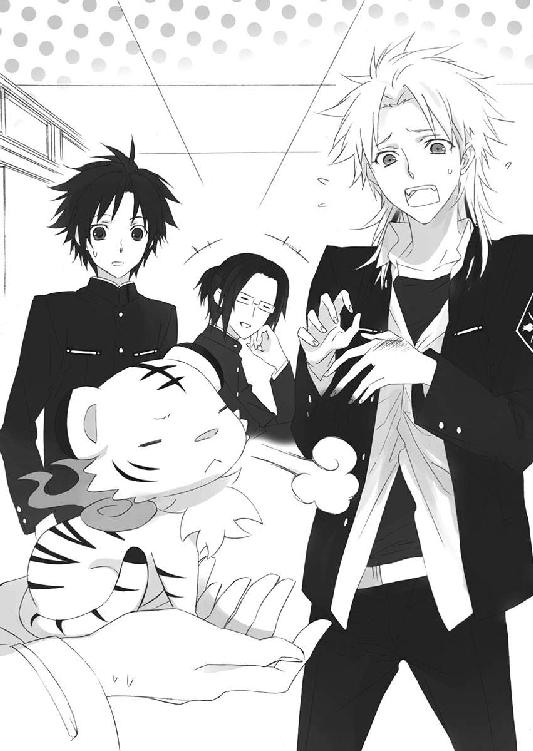

| お庭番望月蒼司朗参る!2 緑の石とキネマの休日 (ビーズログ文庫アリス) | |
| 流 星香 & 榊 空也 | |
| エンターブレイン (2011) | |
お庭番望月蒼司朗参る！
緑の石とキネマの休日
流星香

電子版 ビーズログ文庫
本作品の全部または一部を無断で複製、転載、配信、送信すること、あるいはウェブサイトへの転載等を禁止します。また、本作品の内容を無断で改変、改ざん等を行うことも禁止します。
本作品購入時にご承諾いただいた規約により、有償・無償にかかわらず本作品を第三者に譲渡することはできません。
本作品を示すサムネイルなどのイメージ画像は、再ダウンロード時に予告なく変更される場合があります。
本作品の内容は、底本発行時の取材・執筆内容にもとづきます。
本作品は縦書きでレイアウトされています。
また、ご覧になるリーディングシステムにより、表示の差が認められることがあります。
１
首都帝都、華やかなる中心地、帝都城は二重の堀に囲まれた、強固な結界領域である。
ここは帝都一有名な観光地であり、帝都城下に住まう者たちの憩いの場所だ。毎日大勢の来客で賑わう帝都城も、番人に守られた閉門時間だけは穏やかな休息の中にある。
帝都を統べる帝は、開門前の時間に、朝露に輝く目覚めたばかりの帝都城を、時々静かに散歩する。早朝から作業をしている清掃員や、施設の補修をしている作業員、植物の剪定を行っている庭師たちの仕事の妨げにならないよう、そっと。
仕事をしている者たちの手を止めさせることを、帝が望まないことは皆が知っているので、静かに散歩を楽しんでいる帝の姿を見かけても、誰も声をかけたりはしない。ある者は作業しながらそっと会釈し、またある者は声を出さず口の動きだけで朝の挨拶をして、帝を見送る。
お互いへの思いやりに溢れた優しい朝のひとときは、帝がもっとも無防備なときでもある。
ざっと枝葉を鳴らし、木立の陰から飛び出した迷彩服の賊が、サバイバルナイフを振りかざして、帝へと襲いかかる。
多くの民から賢帝と慕われていても、不満を持つ者がまったく存在しない時代はない。どれほど厳重に警戒しても、賊は時折こうして帝の身を脅かす。
殺気に満ちた気配と物音に気づき、はっと帝が振り向く。
そこは、早朝に作業している者たちから十分に距離を開けた、絶好の暗殺場所────！
凶刃に倒れるかと見えた帝と賊の間に、流星のような速さで小柄な人影が割りこんだ。
キィン！
賊のサバイバルナイフを敢然と撥ね除けたのは、柄の長い枝打ち斧の磨き上げられた刃。
「害虫発見！」
「なっ......!?」
完璧と思われた奇襲を退けられた賊は、飛び退り、帝を背に庇って立ちはだかる人影を見つめる。
それはまだ容姿に幼さを色濃く残した少年。
寝癖のついた頭の上に赤い鳥のヒナ、肩には甲羅に蛇の巻きついた小さな亀を乗せ、左腕に小さなイグアナ（？）をしがみつかせ、スエットのズボンのポケットから白い子虎が顔を覗かせているという、何とも微笑ましい格好の☆
「何だ!? 貴様」
早朝ジョギングか、ちびっこい動物を連れてのお散歩か。帝の危機に颯爽と現れたにしては、緊張感を削ぐその格好を見て、思わず賊がそう問いかけてしまっても、無理はない。
「ピィー!!」
帝を狙う賊の存在を周囲に知らせるように、ぽっちりと少年の頭の上に座っていた赤いヒナ鳥が手羽を広げて鳴いた。
大声でヒナに鳴かれ、賊はぎょっとする。
「人に名前を聞くときは、自分から名乗るものだろ」
名乗れるような立場じゃないだろうけれど。
ピヨピヨした生き物たちを連れた少年は、賊を正面から睨みつけ、隙のない構えで枝打ち斧を握り、背後の帝に声をかける。
「お怪我はありませんか!?」
「あぁ。大事ない」
世継ぎの若様と同年代である小柄な少年の、まっすぐに伸びた背を見つめ、帝はふわりと頰を綻ばせて頷く。
「（何だ!? 今の鳥の声は）」
「（帝の行かれた方じゃないか!?）」
「（おい、何だ!? こいつらは!?）」
鋭く鳴いたヒナ鳥の声を聞きつけ、遠くで作業していた者たちや、警備員たちがざわめく。
「四人、だろ？ 待っても仲間は来ないよ」
現れた少年に涼やかな声で言われ、まだ一人も加勢が来ないことを不審に思っていた賊は、眉を吊り上げる。
厳重に警戒された帝都城にまんまと忍びこみ、帝を亡き者にしようと狙っていた賊は、今はもうこの一人だけ。
「────帝ともども、地獄に落ちろ！」
小柄な少年など力で捻じ伏せて、帝とともに斬殺してやる！
ぎらり、サバイバルナイフの刃で禍々しく朝日を弾き、鬼気迫る勢いで賊が襲いかかる。殺気立つ賊に、ピヨピヨした生き物を連れた少年は怖気づくことなく対峙する。
「お庭番、望月蒼司朗、────参る！」
くるりと回された枝打ち斧。圧を受けて、舞い上げられた朝露が、光を弾いてきらきらと輝いた。
高校一年生、庭師見習いのこの少年こそ、帝都城の奥庭に祀られた四神の認めた、神聖なる『お庭番』。巌手のブルー・ムーンとの異名を持ち、出場辞退していなければ全国大会優勝さえ噂される、幻の少年剣士。
蒼司朗が長年使いこんだ、愛用の枝打ち斧。サバイバルナイフに比べてリーチの長い枝打ち斧は、賊と体格差のある蒼司朗にとって有利な武器だ。命を奪うつもりで襲いかかってくる相手に対して、手加減はいらない。
「キュ！」
蒼司朗の左腕にしがみついたイグアナ（？）が、警告するように鋭い声で鳴いた。
（毒か！）
サバイバルナイフの刃が鈍く光っているのは、何か薬品が塗布されているからに違いない。
「死ねぇ！」
「ぃやぁっ！」
火花を散らして激突する、サバイバルナイフの刃と枝打ち斧の刃。鍛え上げた体軀の筋骨逞しい賊と、成長途中にある少年では、力の差は歴然としていたが。
がっちりと受け止められた刃に、賊は息を吞む。
（な、に......!?）
帝への一撃を撥ね除けられたのは、絶好の場所で奇襲できたことへの慢心があったのだと思っていた。真っ向から対決して、こんな少年相手に互角なんて、ありえない。
「ミギャギャ！」「キュイィ！」「ピィー！」「「！」」
少年の連れていた小さな獣たちが、ぎゅっと身構えて一斉に鳴き声を発した途端、激突した刃に飛び散った火花から、爆発するような光が広がった。
閃くその光の中に見えたのは、四種の獣の幻────。
（四神!?）
賊は驚愕しながら幻を見つめる。
東の青龍・西の白虎・南の朱雀・北の玄武、実在しない架空の獣、信仰の対象にすぎないと賊が思っていたその聖獣は、帝都においては本当に存在した。
帝都城。ここは、ここだけを守護する四神の加護を受ける、強固な結界領域。お庭番、望月蒼司朗は、帝都城の四神に認められた、強大な力の執行者────。
もっとも、その帝都城の四神は、新しく整備された奥庭と同様に、ピヨピヨとちびっちゃくなって、蒼司朗にくっついていたが☆
（まさか、あのペット......!!）
賊は、ようやく悟る。少年の腕にくっついているのは、イグアナではない。
絵画で見知ったモノとは大きさは全然違うが、あの色と姿形は、まさしく────！
閃いた光の中、咆哮して襲いかかってくる四神の幻を見た賊は、圧倒的な力を持った光の爆発によって、吹き飛ばされた。
「ぐあぁぁぁっ......！」
ヒナ鳥の鋭い鳴き声に、すわ何事かと駆けつけた者たちは、爆発した光と、絶叫して吹き飛ばされた賊の姿を目撃する。
撥ね上げられ、地面に転がった賊からは、しゅうう......と煙のようなものが上がっていた。指一本動かす気配はなかったが、これといった外傷はなく、死んではいない。四神の加護を受けるお庭番にやられたのだから、しばらくは目を覚まさないだろう。
「帝、お怪我は!?」
「蒼司朗様......！」
「早く連れて行け！」
物凄い勢いで登城した蒼司朗を追ってきた警備員は、賊の姿を発見して仰天する。いつ賊が城内に入ったのか、その賊がどこで何をしていたのかわからない。だが、奥庭の四神の加護を受けるお庭番の望月蒼司朗が、帝都城の異変を見過ごすはずがない。蒼司朗がいるならば、帝の身はきっと安全だ。
倒れた賊に駆け寄った警備員たちは、隠し持っている危険物がないか警戒しながら、賊を縛り上げ、運び去った。
賊に命を狙われるなんて、穏やかではない。身体に怪我は見えないが、どれほど怖い思いをされたのだろうかと心配する者たちに、帝は穏やかな笑みを浮かべ、持ち場に戻るよう命じる。
爽やかな朝日を浴びる帝の姿には、髪の毛一本の乱れもなく、帝を案じた者たちは、ほっと胸を撫で下ろした。作業道具を武器代わりに駆けつけた者たちも、賊の始末を警備の者に任せ、会釈して速やかに持ち場に戻る。
一打ちで賊を撃退した蒼司朗は、穢れを払い除けるように鮮やかに枝打ち斧を回し、深々と頭を下げて、静かに立ち去る帝を見送った。頭を下げたまま、蒼司朗は大きく息をつく。
（あー......、やべ☆）
勘違いしそうになる。
（こんなの、オレの力じゃないのに）
守護する領域で、不埒な行いに及ぶ罰当たりな賊を諫めるための、四神の力だ。
「お見事でした♡ 蒼司朗くん」
帝都神社の方からやってきた小此木神官長は、オペラ鑑賞のように気取った格好で、帝を守った蒼司朗に拍手を送る。蒼司朗は急いで向き直ってお辞儀する。
「おはようございます、神官長」
年寄りは朝早いと聞くが、若々しく年齢不詳の美形神官長は、早朝でも深夜でも、ぱりっとした神官装束で飄々と現れる。いったいいつ眠っているのか、謎だ。
「ミギャ」
「ピイ」
「キュア」
「「♡」」
蒼司朗が褒められてご機嫌になるピヨ四神たちに、小此木神官長は微笑む。
「ヨレたスエット姿でなければ、記念写真でも撮りたいところですよ」
「す、すみません......！」
今頃になって自分の格好に気づき、蒼司朗は真っ赤になって頭を下げる。
帝都学園の寮で寝ていたところを、賊の侵入を察知したピヨ四神に起こされて、城に駆けつけたのだ。熱帯夜の真夏以外、毎日着ている寝間着兼用のスエットは、室内専用で、早朝ジョギングにも躊躇したくなるくたびれ具合だった。
小此木神官長は頰に手を当てて、蒼司朗の格好をしみじみと眺め、首を傾げる。
「押っ取り刀で駆けつけてくれるのは、大変嬉しいですが、そのスエットは見るに堪えませんねぇ」
「失礼します......！」
見苦しい格好を恥じ、そそくさと枝打ち斧を袋にしまって寮に戻ろうとする蒼司朗の腕を、思案しながら小此木神官長は摑む。
「もうちょっと色気のある寝間着を手配しましょう♡」
「は？」
思わず振り返った蒼司朗は、きょとんと目を瞬き、ピヨ四神たちも円らな瞳で首を傾げる。
摑んだ手を放し、にこっと小此木神官長は蒼司朗に微笑んだ。
「着物なんて、寝乱れちゃっていいですよねぇ♡ 駆けつけて、枝打ち斧を構えたら、裾なんてこう、ぱかーんと景気よく開いちゃうし♡」
「はぁ!?」
「アンダーは、ボクサーパンツで。襟ぐりが胸元まで大きく開いたメンズのランニングシャツか、ハイネックでもノースリなら着ていいですよ♡」
「着ませんよ、そんなの！」
「ミギャギャ」
「ピチュ」
「キュイ」
「「......」」
蒼司朗とピヨ四神に抗議され、小此木神官長は考える。
「えー、では素肌で？」
むさ苦しさとはまだ無縁の、瑞々しい少年の肌を、大胆に露出ですって？
「それはちょっと刺激的すぎますよー？」
お城に忍びこんだら、いいモノが見られると、逆に犯罪を助長しそうなヨ・カ・ン♡
ぽ♡と染まった頰に両手を当てて恥じらう小此木神官長（容姿が見目麗しいので、そんなオトメなポーズを決めても様になる☆）に、蒼司朗は怒鳴る。
「そんなの着ません！」
寝相の悪い蒼司朗は、以前旅行に行ったときに物珍しさで着た旅館の浴衣での経験で懲りている。朝起きたら、着崩れまくって帯一本になっているだろう着物なんて、絶対に却下だ。
そして蒼司朗に懐いてくっつき回っているピヨ四神は、蒼司朗が放課後に庭仕事にあたるときのように、神官のきちんとした装束ならまだしも、夜着にするようなぺらぺらの着物は、スエットより安定が悪く、居心地がよくなさそうで、断固として却下だと、ブピブピ鼻を鳴らしてブーイングした。
「うーん、いい案だと思ったんですけど」
長居は無用と蒼司朗は、まだ何か言いたそうな小此木神官長の前から立ち去った。
（何考えてんだか☆）
優秀で見目麗しい帝都神社の神官長の思考は、いつでもぶっ飛んでいて、どうも蒼司朗には理解できない。蒼司朗一人では押しきられていたかもしれないが、（ちびっちゃくても）神聖なる四神様たちが不満いっぱいに反対したので、この件は白紙に戻った。
「せめて、新しいの買おうかな......」
蒼司朗は帝都での生活に早く慣れることができるように、身の回りのものは巌手で使っていたものを、そのまま持ってきた。思っていたように、リラックスはできたが、野暮ったいうえに、どれもこれもくたびれている。室内着で寝間着兼用のスエットは、その最たるものだ。
「ミギュ？」
枝打ち斧を担いでジョギングするように駆けながらの蒼司朗の呟きに、胸元に移動したチビ白虎が蒼司朗を見上げる。背中におぶさったチビ青龍や、頭の上のチビ朱雀、肩の上のチビ玄武も、どうしたのだろうと蒼司朗を気にしてもぞもぞする。
「んー、買い物行こうかなって思っただけ！」
一度寮に戻ってクリーニングした学生服に着替え、登校の支度をしてから、蒼司朗は望月造園の見習い庭師として作業するために帝都城に向かった。帝都学園は帝都城の外堀の中にあるので、八時のチャイムが鳴る前に作業を終わらせて、急いで朝食をとって登校する。
「蒼くん」
「清ちゃん」
同じく作業を終えた従兄弟の清志朗と待ち合わせて、蒼司朗は帝都神社の社務所の食堂で、支度してもらっている朝食の弁当を仲良く広げる。
本来、庭師に弁当が支給されることはないが、奥庭の庭師に就任した蒼司朗には、四神様にお食事させるお役目があるので、特例だ。庭師見習いとしての作業は別だが、蒼司朗と行動を共にするので、清志朗は便乗優遇である。
「ミギャミギャ」
「キュキュ」
「ピピ」
「「......♡」」
朝ご飯の時間を楽しみにしていたピヨ四神たちは、蒼司朗が皿に注いだミルクと弁当箱の蓋に取り分けてくれた白米に群がって、わふわふと貪り食う。
「ミルクに顔突っこんで溺れるなー、慌てて食うなよー、喉詰めるぞー」
蒼司朗は食事しながら、空いている左手で、ピヨ四神たちがちゃんと食事できるように助けてやる。帝都神社の中なので、ピヨ四神たちの姿は、神職にない清志朗の目にも見える。蒼司朗に懐いている、元気なピヨ四神たちの姿は可愛いが。
（大変だなぁ、蒼くん......）
ペット一匹でも、きちんと面倒を見るのは手間なのに、それが四種。しかも、ただの獣ではない。高校生活し、庭師の修業をしながら、聖獣のお世話なんて。
そしてその聖獣様は、なかなか人使いが荒い。
「大丈夫？ 眠くない？ 蒼くん」
「んー......、本当言うと、ちょっと眠い～」
朝早くからピヨ四神に叩き起こされて、帝都城に向かった蒼司朗は苦笑する。
帝都城のお抱え庭師、望月造園の次期棟梁である清志朗は、蒼司朗と同学年の従兄弟だ。四月生まれなので、三月生まれの蒼司朗とは誕生日が一年近く違う清志朗は、同学年でも、蒼司朗にとっては幼い頃から頼りになる兄のような存在だ。寮の部屋も同じなので、清志朗は蒼司朗のことを誰よりよく知っている。
「一時間目の音楽の時間、少し寝てたらいいよ」
今日の一時間目の授業は、音楽室でレコードを鑑賞することになっている。レコード鑑賞は、音楽の授業で年に一回ぐらいあるが、クラシックの長い曲になると、真面目に聞いていようと頑張っても、ついつい居眠りしてしまう生徒は多い。今日も居眠りする生徒がたくさんいるだろうから、蒼司朗が居眠りしようと、目立たない。
「起こしてあげるし」
にこっと笑う清志朗に、後光が差して見えた。
「ありがとう、清ちゃん～」
蒼司朗は、思わず清志朗に懐く。好きなだけ食べ散らかして満腹になったピヨ四神たちは、テーブルの上で寛ぎながら、かふっとゲップをした。
ピヨ四神たちは、我が物顔で蒼司朗にくっついて登校するが、その姿は普通の生徒や教師たちには見えない。だが見えないからと、勝手気ままに振る舞われると、気が散って授業の妨げになるので、蒼司朗はポケットや制服の中にピヨ四神たちを入れておとなしくさせている。狭くて窮屈だろうと思うのだが、蒼司朗と一緒にいるピヨ四神たちは、ご機嫌なので問題ないのだろう。
始業のチャイムぎりぎりに登校した蒼司朗は、朝のＳＨＲの後、枝打ち斧と授業の道具を持って、清志朗と一緒に音楽室に向かう。
（できるだけ目立たない席......）
身長の低い蒼司朗は座高も低いので、少しばかり場所を選べば、生徒の陰になって前から見えなくなる。同時に黒板も見えにくくなるが、それは清志朗に助けてもらって後からノートを写せば問題ない。
「ねぇ、金曜日に何か用事入ってる？ 朝から斉藤くんたちとキネマに行こうかって話してたんだ。望月くんたちも一緒に行こうよ」
音楽室に入って、できるだけ後ろの方で目立たない席を選んだ蒼司朗は、右隣の席に座った筧俊彦に小声で誘われて、きょとんと目を瞬く。
「金曜日の朝からって......」
「あぁ、創立記念日だったね」
蒼司朗の左隣に座った清志朗は、にこりと笑う。
平日だが、帝都学園だけは創立記念日でお休みだ。
「創立記念日なら、望月くんたちも遊びに行けるだろ？」
帝都学園は全寮制だ。一緒に同じ場所にいる時間が長いので、どの生徒もお互いの事情にある程度通じている。
帝都城のお抱え庭師・望月造園の跡取り息子の清志朗と、その従兄弟の蒼司朗は、将来立派な庭師になれるよう、部活やアルバイトに通うように造園業の仕事を手伝っている。学校の授業のない土日の日中も、造園業の仕事をしているようだが、一般的な暦にないイレギュラーな休みには、少しぐらい遊べるのではないだろうか。
「蒼司朗くん、帝都の観光とかした？」
筧俊彦に尋ねられ、蒼司朗は一瞬、言葉に詰まる。
有名な観光地である帝都城は、外堀の中は蒼司朗にとって毎日通学する高校のある場所だし、内堀の中は庭師見習いとしての作業場だ。帝都城だけは（遊びで施設に入ったことはなくても）隅々まで（不審者を撃退したりして）よく知っているが、その他の場所には、ほとんど足を運んだことがない。寮の他に行った場所といえば、清志朗の実家の望月造園ぐらいのものだ。
「────昔、夏休みとかによく清ちゃんの家に遊びに行ってたから、何度か連れていってもらったけど」
行っていないと答えることに少し抵抗のあった蒼司朗は、見栄を張って小さい頃のことを引っ張りだした。
帝都学園に通う生徒は、全国から集まった名士の子息ばかりだ。巌手城のお抱え庭師の息子だった蒼司朗は、都会的で賢そうな級友に、最初のうちはいくらか気後れしたところがあったが、同じような不安を抱えている地方出身者ばかりだと気づいて、肩の力が少し抜けた。
気取っていて、とっつきにくく、ガードが固いように見えたのは、蒼司朗本人が壁を作っていたからだ。
「そうなんだ？ いいなぁ。僕は帝都学園の中等部に入学して、初めて帝都に来たんだよ。今年に入ってからできたお店もあるし、新しい建物とか増えて、前とはけっこう変わってるんじゃないかな。僕、帝都に来るまで、キネマをちゃんとした場所で見たことなかったんだ」
恥ずかしそうに笑う筧俊彦に、蒼司朗の頰も緩む。
「うん、オレがいた巌手にも、キネマ館はなかったな。体育館だとか、毎年夏の夜に集まって、お城の白壁使って、上映会やってた」
「蒼司朗くんのところでも、そうだったんだ」
「外だと地面に茣蓙とかマット敷いて座って、紙コップの飲み物持って見てたりするんだけど、うっかり炭酸選んじゃうと、大変なんだよな」
「そうそう。炭酸飲むと、蚊に刺されやすいんだよね」
同じだと、くすくすと筧俊彦と蒼司朗は笑いあった。帝都の都会で生まれ育った清志朗は、このときばかりは話に加われず、楽しそうに聞き役に回ることになる。
「創立記念日のことは、ちゃんと許可をもらってから返事しよう、蒼くん。たぶん大丈夫だと思うよ」
蒼司朗と清志朗は、まだ高校生の見習い庭師だが、望月造園の人間だ。暦に記された祝日なら、何か予定を組まれているかもしれないが、イレギュラーな休みなら、作業の頭数に入れられていることはないだろう。
庭師としての仕事に誇りを持ち、一日も早く一人前の庭師になりたいと願って懸命に修業している蒼司朗だが、思いがけない休日があるのは嬉しい。
「あ、オレ、買い物に行きたい」
両親を亡くしている蒼司朗だが、清志朗の父、伯父の望月左近が保護者となって、帝都学園に通っている。小遣いはもらっていないが、庭師見習いとして働いている蒼司朗は、望月造園からアルバイト料をもらっている。使う暇がなかったので、けっこう貯金できている。動きやすいスエットの上下は、帝都学園高等部の購買部や寮の売店でも買えるが、学校指定のデザインのものより、帝都で流行りのものを見てみたい。
「うん、いいね。僕も買いたいものあるんだ。皆で一緒に行こうよ」
「ミギュ」「キュキュ」
気持ちの弾む蒼司朗に敏感に反応し、制服の中に隠した白虎と青龍が顔を出そうとして、蒼司朗は慌ててそれを押し止める。
「？ どうかした？」
「い、いや、何でも」
筧俊彦に誤魔化し笑いする蒼司朗の様子に、ピヨ四神たちの姿は見えないが、何となく様子を察した清志朗は苦笑した。
２
音楽の時間の蒼司朗の居眠り計画は、失敗に終わった。
「......大丈夫？ 蒼くん......」
清志朗に荷物を持ってもらい、枝打ち斧だけを担いでよれよれと教室に戻りながら、蒼司朗はげっそり窶れた様子で返事をする。
「あんま大丈夫くない......☆」
「ミゴゴ」「キュアキュア～」「ピキュピキュピキュ」「「（しゅー）」」
（頼むから、おとなしくしててくれよ～......）
蒼司朗は情けない顔で、興奮状態のピヨ四神たちが飛び出ないよう、なでなでと宥める。窮屈なのを我慢させているのは、悪いなぁとは思うが、蒼司朗は高校生だ。ピヨ四神たちに逃げ出されては、授業を受けるどころではなくなってしまう。
（こいつらが、音楽が好きだとは☆）
あちこち摩るような蒼司朗の動きで、見えないながらも、状況を察した清志朗は苦笑する。
「畑に音楽を流して作物を育てると、よく育つって言うよね」
「いや、こいつらの場合、興奮しすぎて、夜泣きしそうな気がするよ」
赤ん坊を昼間に興奮させすぎると、昼の刺激が記憶に残って、夢を見て夜泣きするらしい。幼さ具合からいうと、ピヨ四神たちはそんな感じだ。
蒼司朗はクラシック音楽を聞いて、いい調子で睡魔に身を委ねようとしたのだが、たんたんもぎもぎもそもそきゅいきゅいとピヨ四神たちが動き出して、とても寝るどころではなくなってしまった。
（あ～......）
罰当たりだと思うが、ピヨ四神たちのもにもにむにむにごそごそぱたぱたは、しばらく治まりそうもなくて、正直、うっとうしい。
朝一番から、どうなることかと思ったが。
「おーい、ちゃんと目ぇ開けろー」
「......ミギュ」
「キュウ......」
「ピュー......」
「「（ふしゅー）......」」
昼休み、会議用の長机の上に載せたピヨ四神たちを、ちょいちょいと蒼司朗は突つく。
音楽で興奮して疲れたらしいピヨ四神たちは、いつも楽しみにしているお昼ご飯の時間だというのに、ねむねむになってふらふらだ。
帝都学園高等部の生徒の昼食は、構内の食堂か売店を利用することになっているが、帝都城の守護神、奥庭の四神様の護役である蒼司朗は、昼食時にも少しばかり特別待遇を受けている。昼食をとるのは生徒会室の隣にある準備室で、食事は帝都神社から神官が運んできてくれる。昼休みだけ、生徒会準備室は結界領域となり、室内にいる者はピヨ四神たちの姿を見ることができる。
「何だか、四神様はお疲れだねぇ。いくら四神様のお世話が面倒でも、こういうのはどうなのかなぁ」
生徒会準備室の鍵を開けてくれた三年の生徒会役員、玄武の戦士である蔵田実親は、やれやれと肩を竦め、実家の玄武神社から持ってきた重箱弁当の包みを長机に置く。
若様と、そのお世話係の任に就いている篠原勇輝も、この部屋で昼食をとる。輝く金の髪に、涼しい碧の瞳。見目麗しいために、幼い頃から人前に出るたびに注目されてきた若様は、人に見られるのがあまり好きではない。生徒会準備室で若様が気持ちよく食事できるように、若様が昼食をとる場所は、同学年で若様のお世話係に任ぜられている、白虎の戦士の篠原勇輝が、毎回いそいそと衝立（保健室で見るような、布を張ったもの）で仕切っている。
若様や鈴宮神官のいる場所で、蔵田実親にわざとピヨ四神たちをへろへろにしたように言われ、蒼司朗は口を尖らせる。
「変なこと言わないでください、蔵田先輩......！」
「一時間目の音楽の授業で、レコードを聞いたのが原因だと思います」
蒼司朗の味方をして、説明した清志朗の言葉に、二人に弁当を届けた鈴宮神官は首を傾げる。
「レコード、ですか」
音楽が四神に影響を与えるという話は、鈴宮神官もこれまで聞いたことがない。
「すごく喜んじゃって☆ まさに踊りだすって、感じで」
蒼司朗は溜め息をつく。
食堂から配達してもらった若様の昼食を、衝立の奥に運びながら、けっと篠原勇輝が息を吐き捨てる。
「どーせ、その田舎モンのチビがレコードを珍しがって、興奮したのが感染ったんじゃねーの？」
「いや、オレ、レコード聞かずに眠る気まんまんだったし！」
「言い返すところはそこですか!?」
お茶を注ぎながら啞然とする鈴宮神官に、蒼司朗は頭を搔きながら笑った。
蒼司朗が生まれ育った巌手圏は、帝都に比べれば確かに田舎だが、お抱え庭師の棟梁の息子として、巌手城内で生まれ育った蒼司朗は、環境にはかなり恵まれていた。気さくな巌手城の殿様は、新しいレコードなどが手に入ったときには、蒼司朗たち城内の者を集めて、一緒に楽しませてくれた。聞きたいとお願いすればいつでも聞かせてもらえたので、自分の自由になる私物ではなかったが、レコードは蒼司朗にとってそれほど珍しいものではない。
蒼司朗はいつものようにミルクと白ご飯を支度してやったが、ピヨ四神たちは皆眠そうだ。
「食ったら寝ていいから。起きて、飯食え？」
蒼司朗はピヨ四神たちに呼びかけながら、ちょいちょいと突つく。
「......ミゴ」
「キュ......」
「チュピ......」
「「（ふしゅる～）」」
お腹は空いているが、とっても眠い。ピヨ四神たちは、ふらふらしながらミルクと白ご飯に顔を近づける。
「後で腹減ったって鳴いても、食わしてやれないんだからな？ 今のうちにちゃんと食べておくんだぞ」
お腹が空いたと鳴かせるなんて、可哀相なことは蒼司朗もしたくないが、授業中にむずかられても、相手をしてやれない。一回だけの特別という認識を、ピヨ四神たちに求めるのは無理だろうから、時間外のご飯が癖になっては困るのだ。
「ミギュギュ」
「キュア」
「ピピ」
「「......」」
眠いけれど、ご飯は食べたい。よれよれしながらも、食欲旺盛なピヨ四神たちはお昼ご飯に挑む。眠気と戦っているため、いつもよりのんびりした調子だが、順調に食事を始めたピヨ四神たちを見て、蒼司朗も昼食をとる。
（あれ？ そう言えば......）
ピヨ四神たちを見て、蒼司朗は思い出す。
「ねぇ、鈴宮さん、このちっちゃい四神様って、城下町に連れて出ても大丈夫ですよね？」
「はい？」
衝立の向こうの若様にお茶を注いできた鈴宮神官は、きょとんと目を瞬く。
説明不足の蒼司朗の言葉を、箸を止めて清志朗が補う。
「いえ、次の金曜日の創立記念日に、友達と城下町を観光しようって話が出たんです。城下町をあちこち歩き回って、キネマを見たり、買い物したり、とかなんですけど」
「あぁ、なるほど」
そういうことかと、鈴宮神官は納得する。
「帝都観光？ ははっ、行け行け田舎モン！」
衝立の向こうの篠原勇輝にせせら笑われ、蒼司朗はむっとする。
「聞き耳立ててんじゃねーよ」
「テメーの声がデケェんだよ！ チビのくせに！」
「チビチビうるせぇ！」
篠原勇輝と怒鳴りあって、蒼司朗は考える。
「オレ、城下を歩き回っても大丈夫ですよね？ 寮とか、望月造園にも行ってるし」
ピヨ四神たちに懐かれた当日、蒼司朗は何も知らないまま、ピヨ四神たちを城下町に連れ出したわけだが、特に不都合はなかったように思う。
「バーカ☆ 寮は、若様が快適に過ごせるように、結界が張ってあんだよ。望月造園さんは、お城の出入り業者だろうがよ。神聖な場所に毎日出入りしてんだから、色々浄化されてて、当然だろうが！」
衝立の向こうから大声で言った篠原勇輝の言葉に、蒼司朗は首を傾げて清志朗を見る。
「そーゆーもん？」
「うーん......」
尋ねられた清志朗は、返事に困り、鈴宮神官は微笑む。
「篠原様のお言葉は、間違っていないと思いますよ」
「ふーん......」
「へっ、バーカバーカ！」
「喧嘩売ってんのかよ、コラ！」
「蒼くん、落ち着いて......」
言い合いするだけでなく、衝立の向こうの篠原勇輝を睨む蒼司朗を、清志朗が宥める。
奥庭が蒼司朗によって整備され、植え替えられた植栽と同じく赤ちゃん返りしたピヨ四神たちは、蒼司朗にくっついて成長している。ピヨ四神たちは感情の起伏に敏感に反応するので、蒼司朗が怒りっぽかったり、喧嘩っ早くては、教育上よろしくない。
小此木神官長にも注意されている蒼司朗は、唸りながらも気を落ち着ける。
白虎の戦士である篠原勇輝は、蒼司朗が奥庭のお庭番に任命されたときから、気に食わない認めないと、誰憚ることなく公言している。言葉にトゲがあったり、あからさまに嫌がらせするのは、いつものことだ。蒼司朗は、たとえ四神の戦士であっても、自分を敵視する者の機嫌をとったりはしない。怒鳴られれば怒鳴り返すし、殴ってくれば殴り返す。
お世話係として、甲斐甲斐しく若様の世話をしている篠原勇輝は、情に厚く、努力家で勤勉な少年だ。言葉遣いが乱暴だったり、素行がワイルドで、怖がられることもあるが、性格は真っ直ぐで誠実だ。そして一流の庭師を目指す蒼司朗も、実直で素直で、誰よりも負けん気が強い。どっちも自分は悪くないと思っているので、譲らない。
蒼司朗と篠原勇輝は、寄ると触ると喧嘩腰で、関係は険悪なのだが。
「篠原様と蒼司朗様は、なかよしですねぇ」
のんびりとお茶を啜りながら、ほわんと鈴宮神官は微笑む。
聞き捨てならない言葉に、蒼司朗と篠原勇輝は顔を上げる。
「なかよくないです！」「なかよくねぇ！」
衝立に隔てられた場所にいながら、まったく同時に大声で言い放った二人に、鈴宮神官はきょとんとし、優雅に重箱弁当を味わって、くすりと蔵田実親は笑った。
息ぴったり♡
ピヨ四神たちはおとなしくお昼ご飯していたが、睡魔に負けてほぼ撃沈状態だった。チビ朱雀は半目で、ミルクに向かって水飲み鳥のオモチャのように前後運動を繰り返し、チビ玄武の蛇と亀は、蔵田実親に呼ばれて、玄武神社の奉納米の白ご飯を柔らかく潰してもらったものを、目を閉じたまま口元まで運んでもらって、もふもふと食べている。
うつらうつらしながらミルクを啜っていたチビ白虎の前足が、かくんと崩れる。
「うおっ☆」
目を閉じてミルクに顔を突っこんでいきそうな白虎を、蒼司朗は襟首を摘んで引き戻す。
「ミギュ......☆」
鈴宮神官に声をかけてお茶のお代わりをもらおうと、衝立から顔を出した篠原勇輝は、チビ白虎を指で摘んでぶら下げている蒼司朗の姿に、ぎょっとする。
「コラ、テメェ！ 白虎様に何してやがる!!」
白虎神社の神主の息子で、白虎の戦士である篠原勇輝にとっては、自分たちの祀っている神様でなくても、奥庭の四神様のチビ白虎も、大切な白虎様だ。
衝立を押し倒す勢いで、奥から飛び出した篠原勇輝は、蒼司朗の手からチビ白虎を奪い取る。血相を変えた篠原勇輝に、物凄い勢いでチビ白虎を取られた蒼司朗は、きょとんと目を瞬く。
「何、って......」
ミルクに顔を突っこみそうだったから、助けただけだ。────それぐらいで、聖獣である白虎が（いくらちびっちゃくても☆）どうにかなってしまうとは思えないが。
チビ白虎を大事そうに両手で抱え、ふーっと毛を逆立てそうな様子で八重歯を見せて、篠原勇輝が蒼司朗を睨む。
大事に篠原勇輝に抱えられたチビ白虎だったが。
かぷ☆！
「うぁち☆！」
攻撃的に指に食いつかれて、篠原勇輝は驚く。ミルクが主食のチビ白虎にはまだ歯がないので、甘嚙みなのだが、インパクトは大だ。目撃した蒼司朗たちは、思わず固まる。
「し、失礼いたします......！」
鈴宮神官は、驚いて固まってしまった篠原勇輝の手から、慌ててチビ白虎を取った。
眠そうなチビ白虎は、むぎむぎと顔を動かす。
「ギュコココココ......！」
鈴宮神官の手の上で、ぽっちりとお座りしながら、篠原勇輝を威嚇☆
チビ白虎に敵視されて、篠原勇輝は情けない顔になる。
「白虎様ぁ......！」
無礼を働く蒼司朗の手から、白虎様を助けてさしあげたつもりだったのだから、とんでもなく理不尽だ。
眠くて不機嫌そうに、くふんと鼻を鳴らすチビ白虎と、情けない顔の篠原勇輝を見て、チビ玄武を餌付けしながら蔵田実親はくすっと笑う。
「同属嫌悪？」
和やかにチビ玄武を餌付けしている蔵田実親とは、大違いだ☆

突然大声をあげて飛び出して行った篠原勇輝に驚いて、お食事中だった若様は、倒れていく衝立を見つめ、丼を持ったまま呆然としていた。
本日の若様のお昼ご飯『きつねウドン』。今日は食欲のあまりなかった若様にぴったりな、喉越しよく胃にも優しい、あったかメニューだ。
きつねウドンなどという庶民的な麵類は、若様の麗しいそのお姿には少々不似合いのようだが、帝は代々庶民の味覚にも親しんでいる。学生食堂から運んでもらった、安価で温かな汁麵を召し上がるお姿であっても、その優雅さは微塵も損なわれることはない。特別生徒を示す白の学生服は、きっちりと撥水加工が成されているので、もしもカレーウドンの汁が飛んだとしても、染みなどできないので、大丈夫だ。
篠原勇輝に注目して、食事を中断していた若様は、口に運んだばかりだったウドンが重くなったことに、唐突に気づく。
若様が口に運んだウドンの裾に、チビ青龍がぶら下がっていた。
「────（キュア）」
丼に前足を掛け、下からウドンをくわえた青龍は、若様を円らな瞳で見上げて、もごもごと鳴いた。チビ青龍は、下からウドンをはむはむと味わいながら上る。
「............」
見つめる若様の目の前で、チビ青龍のはむはむしていたウドンがぷつんと千切れた。ころんとチビ青龍は若様の膝に落っこち、ころころと転がってから、すとんと床に落ちた。
青龍は聖獣だ。聖獣が食べたいと思うような食べ物に、悪いものはない。学生食堂のウドンは、安心小麦百パーセントで作られている。
────深く考えてはいけない。
「............」
若様は何事もなかったように、くわえたままだったウドンの残りを、つるりと口に入れた。
若様が召し上がると、安いウドンもとってもお洒落で美味しそう♡
床に落っこちたチビ青龍は、びっくりしたらしく、むちむちの丸いお尻から生えた短い尻尾を振りながら、急いで蒼司朗のところに逃げ戻る。
「キュアキュアキュア」
「あー、はいはい。びっくりしたか、うん」
膝に這い上がってきて、前足で学生服を握り、うりうりと鼻面を擦りつけて甘えるチビ青龍を、蒼司朗はなでなでする。怖くない怖くない。
「これで勝ったと思うなよ！」
チビ白虎ショックから立ち直った篠原勇輝は、戻ってきたチビ青龍で、衝立が倒れていたことに気づき、慌てて起こして、お食事中の若様の姿を隠す。
こほんと鈴宮神官は咳払いする。
「蒼司朗様が城下町を観光する件については、小此木神官長にご相談してみましょう。何か不都合があるときには、四神様が何らかの行動を起こされるはずですから、わかると思いますけれど」
ピヨ四神たちがむずかって嫌がるようなら、そこから先に無理に進んではいけない。
帝都城の奥庭の守護神である四神様が、あまり帝都城から離れてはいけないだろうというのは、何となく蒼司朗にも理解できる。ピヨ四神たちがくっついている間は、蒼司朗も帝都城から離れることはできないだろう。
（うーん、ちょっとややこしいことになっちゃったかも）
帝都城のお庭番という大きな仕事を貰えたのはありがたいが、何かあっても、巌手に戻ることはできないような気がする。考えて、あれと蒼司朗は思う。
「蔵田先輩や篠原たちも、ずっと帝都なんですか？ 帝都から出ちゃいけない？」
帝都の四方を守護する四つの神社、四神神社の御曹司であり、四神の戦士である蔵田実親や篠原勇輝は、帝都を出ることができないのだろうか。
「帝都は、どっかの田舎と違って、何でもあるからいーんだよ！」
「帝都から出ることを、はっきり禁じられたことはありませんけどね」
喧嘩腰の篠原勇輝に続けて、蔵田実親は微笑む。
────禁じられたことはないけれど、帝都から出たことはない。
それは、帝都の四神神社という家に生まれた者たちが、代々堅持してきたこと。帝都から四神の守りの力を全国に送り出す者として、四神神社に祀られる神そのもののように、禁欲的に自らを律して。
「そりゃ、帝都には何でもあるけどさ......」
帝都に生まれ育った子供が、どんな場所に遠足に行ったり修学旅行に行ったりするのか、蒼司朗は清志朗から聞いて知っている。その他にも、校外学習や社会見学の授業で、帝都の外に出ることもある。帝都の外で学んでくるのは大切なことだが、遠足や修学旅行はそれだけではない。わくわくする気持ちや、いつもいる場所とは違う環境での友達との行動は、貴重な体験になる。どんな行事も、無駄ではない。
（蔵田先輩や篠原は......）
蒼司朗は思う。
（その全部を、帝都の中から、見送ったんだ......）
まだ幼い頃から、四神のように、帝都を出る友人たちの身の安全と、その行事が楽しいものであるように祈りを捧げて。
（たぶん、もっと色々、篠原たちは頑張ってる）
頑張って、頑張って、そして認められて、四神の戦士になった────。
（オレ、は......）
ただピヨ四神たちに気に入られて、奥庭の管理人になって、短時間だったけれど、四神変化までして────。
あからさまに篠原勇輝が蒼司朗のことを目の敵にしても、どうして誰も強く注意できないのか、その事実を、蒼司朗は重く受け止めた。
「帝都のことをよく知るのは、奥庭の四神様にとっても、よいことだと思いますよ」
鈴宮神官は蒼司朗に優しく微笑んだ。
３
お昼ご飯を食べた後、ピヨ四神たちは蒼司朗の制服に隠れて、お昼寝した。
（チビはいいなー）
眠りたいのは蒼司朗もだが、午後の授業は数学と物理で、とても眠れるものではない。
「フシュルルル～」
「キュピ～」
「ピス～」
「「（しゅ～）」」
気持ちよさそうな寝息が聞こえ、ピヨ四神たちのいるところが、ぬくぬくしている。
（暑......）
カイロを抱えているようだが、不快ではない。何だか幸せな、温かさだ。ちびっちゃい連中は、ふわふわと柔らかい。ヌイグルミのようだが、呼吸し、脈動している。神様なのに、確かに生きている。
（何か、すげー手間かかるけど......）
赤ん坊や子供がいるのは、幸せなことだと蒼司朗は感じる。きっと、大きくなって成獣になっても、蒼司朗はこの柔らかさや温かさを忘れないだろう。蒼司朗にとって、奥庭の四神は、ずっと『世話してやった可愛い奴ら』だ。
（こいつらにとっても、守護してる帝都城の中の人たちって、こんな風に感じるのかな）
人間よりも、聖獣はずっと長く生きる。蒼司朗がピヨ四神たちを可愛いと思うように、人間のことを大切に思ってもらえたらいい。
金曜日の外出のことは、鈴宮神官から小此木神官長や望月造園の棟梁・望月左近に相談されていた。
「いつもの時間に戻ってきて、仕事するなら、別に構やしねぇよ」
奥庭の仕事は、蒼司朗以外には行えない。他の者に任せることができないことを忘れて、遊び呆けるのでなければ、予定になかった休みを満喫するのもいい。
放課後、いつものように清志朗と帝都城に向かった蒼司朗は、内堀の近くで作業していた左近に呼び止められ、快く許可をもらうことができた。
「遅くなったり、浮かれすぎたりするなよ！」
遊び気分を引きずったまま、いい加減に仕事をしてもらっては困ると、左近は釘を刺しておくことも忘れない。
「え？ 蒼ちゃんたち、女の子誘ってデートに行くのかい？ いいねいいね～」
話を小耳にはさんだ庭師の池波が、剪定鋏を使っていた作業の手を止めて、目を輝かせる。女の子とデートと言われて、蒼司朗と清志朗はびっくりし、左近は（自分のことでもないのに）真っ赤になる。
「な、テメェ、池！ 何言ってやがる！」
「この前、坊ちゃんがやった南公園の木、あの一本だけ花芽が出てるってさー。将来有望だねー。蒼ちゃんは奥庭の専属庭師だし。女の子が放っておかないよねー♡」
「オレたち、学校の創立記念日に出かけるだけだから......」
「休みなのは、帝都学園だけですよ」
帝都学園は男子校。お付き合いしたい可愛いお嬢様たちの通う白百合女学院は、休みではないと清志朗は苦笑する。
「蒼たちにゃ、まだ早ぇ！」
大声を出す左近に、にやにやと池波は笑う。
「えー、早くないっすよー。二人とも、もう高校生ですよー？」
「早ぇったら早ぇ！」
「そぉんなことないよねー、坊ちゃん、蒼ちゃん♡」
「い、行こう、蒼くん......」
「う、うん......」
蒼司朗は清志朗に背を押され、そそくさとその場を後にする。
行き帰りは一緒でも、作業となると、蒼司朗と清志朗は別行動だ。
「それじゃ蒼くん」
「うん」
にこやかに別れてから、思い出したように振り返って見た、清志朗の姿勢のいい後ろ姿に、蒼司朗は思う。
「清ちゃんって、絶対、モテるよな」
浮いた話はないし、清志朗にも彼女がいるような素振りはないが、彼女がいないことと、もてることは、また別の話だ。
帝都学園は中高で男子校だが、帝都で生まれ育った清志朗は、共学の帝都小学校に通っていた。小学校の頃の同級生には女子の友人もたくさんいる。帝都学園の学園祭や体育祭は、一般の見学もできるよう、オープンに行われている。格好いい彼氏を見つけようと、やってくる女の子もいるはずだ。
歩く姿も、颯爽としている。優しいし清潔感のある美男子だし、頭いいし、運動もできるし、誠実だし、仕事もできるし、学年代表で人望もあるし。背も高いし。
清志朗の美点を色々挙げていって、蒼司朗は虚しくなる。
（それに比べて、オレ、格好悪ぃ☆）
お城のお抱え庭師、望月造園の将来有望な跡取り息子と、あらゆる面で劣っているただの従兄弟のチビでは、比べ物にならない。
はあっと大きく溜め息をついた蒼司朗に、ピヨ四神たちは隠れていた場所から顔を出し、首を傾げる。
「ミャ？」
「キュウ」
「ピ」
「「？」」
「あー、いや、何でもないから」
何事かと心配するピヨ四神たちに、蒼司朗は笑いかける。
（今さらだ......！）
清志朗が立派で格好いいのは、何も今に始まったことではない。いつだって、清志朗は蒼司朗の自慢の従兄弟だった。
「オレも頑張らないとな！」
羨んでいるだけでは、何も始まらない。清志朗に追いつけるとはとても思わないが、これ以上、置いて行かれたくはない。
「お庭番、望月蒼司朗、仕事します！」
晴れやかに言って、蒼司朗は専用の更衣室のある社務所に走る。自分の場所をキープして、しっかりと蒼司朗にくっついているピヨ四神たちは、勢いよく駆けだした蒼司朗に喜び、うきゃうきゃとはしゃいだ。
打たれ強くて何事にも挫けず、前向きで諦めずに努力し続けるのが蒼司朗の長所だ。剣道も、その調子で腕を上げ、巌手圏代表選手にまでなれるほどの実力をつけた。血の滲むような努力を、蒼司朗は着実に形にしていくことができる少年だ。
奥庭は聖地なので、その庭を担当する庭師の蒼司朗は、登校前はクリーニングした学生服で、放課後や休日には神官の装束に身を包んで、『なんちゃって神官』に扮して作業する。
「ほーら、行っていいぞー」
奥庭はピヨ四神たちのための場所だ。しゃがんだ蒼司朗は、連れてきたピヨ四神たちを一匹一匹地面に下ろして、奥庭に放してやる。
「ミギュギュギュ」
「キュアキュア」
「チ、ピチュ」
「「♡」」
うわーいとばかりにピヨ四神たちは、思い思いに奥庭でころころと遊び始めた。
「はしゃぎすぎて、怪我するなよー」
楽しそうなピヨ四神たちを笑顔で見つめ、愛用の枝打ち斧を使って、蒼司朗は奥庭を整える。順調に土の具合はよくなり、植え替えた植物はきちんと根付いている。池の水もいい感じだ。大雨が降ったら、植え替えた植物の周りの土が流れて倒れてしまいそうで、まだどうにか落ち着いてきたとしか言えないような感じだが、全体的にも状態は悪くない。
「花が咲き始めたら、いいのにな」
緑がようやく生き生きと伸びてきたばかりの場所では、花芽を膨らませるほどの力は、まだない。
「清ちゃんが仕事した木には、花芽かぁ」
南公園での仕事は、蒼司朗が帝都に来て間もない頃に、学校が休みの土曜日に行った。奥庭の作業も行わなければならない蒼司朗は、午前中だけ南公園で仕事をした。夕方まで作業できる清志朗は、木を一本任されたのに対し、蒼司朗は切り落とされた枝葉を掃き集めたりという雑用だけしかさせてもらえなかった。奥庭の作業があるので、仕方ないと言えばそうなのだが、情けなくて悔しかった。しかも、清志朗が仕事した木にだけ、他の木よりも一足早く、花芽がついたなんて。
目の前にある、まだまだ殺風景な奥庭と、つい比べてしまい、いいなぁと羨んだ蒼司朗は、鎖をつけて首にかけている『緑の石』のことを思いだす。
所有者に『緑の指』を与え、植物を活性化させ、豊かに青々とさせる、不思議な力を秘めた石。望月家の家宝。
（うう☆ いかんいかん！）
蒼司朗はちらりと脳裏を掠めた誘惑を、振り払うように頭を振る。
『緑の石』の力に頼れば、短くつんつるてんに刈りこまれたり、ひょろひょろとした若い苗木ばかりで、殺風景になってしまった奥庭も、あっという間に立派な庭に仕上がるのだろうけれど。
（それは、オレの実力じゃない）
所有物、使えるものは全部、実力にカウントしようという考え方もあるようだが、蒼司朗は『緑の石』の力に頼りたくはない。
奇跡の力は、その奇跡を渇望されているときに使ってこそ、価値がある。今の蒼司朗が奥庭に対して使うのは、ただの怠慢だ。
「この石を持ってないときのオレを、お前たちは認めてくれたんだもんな？」
蒼司朗は奥庭で遊んでいるピヨ四神たちに目をやる。誘いこまれるようにして初めて奥庭に入った日、蒼司朗は『緑の石』を身につけていなかった。『緑の石』目当てで、ピヨ四神たちは蒼司朗を選んだのではない。蒼司朗はそう思いたい。
「ミギュ？」
「ピ？」
「キュ？」
「「？」」
問いかけられた言葉の意味はわからないが、蒼司朗に何か話しかけられたことはわかる。チビ白虎は、喜んで蒼司朗に向かって突進し、石灯籠の天辺にぽっちりとお座りしたチビ朱雀は首を傾げ、その石灯籠によじ上って遊んでいたチビ青龍は、くりっと振り返った。日向ぼっこをしていたチビ玄武の、蛇は小さな鎌首を持ち上げ、亀は何かなと甲羅から顔を出す。
ピヨ四神たちが『緑の石』の力をあてにしていたのなら、それを行使する様子のない蒼司朗に、焦れてきてもいいはずだ。奥庭が成熟して落ち着いた本来の庭にならなければ、四神たちも成獣の姿になれない。不満や不自由があるのではないかと思うのだが、ピヨ四神たちはのんびりした調子で、ほのぼのチビっこライフをエンジョイしている感じだった。
「帝都ってのは、格好よくってさ。帝は、雲の上の人って感じで、何かもー、人間離れして、格が違うんだよな。若様は綺麗で、そこにいるだけで嬉しくなっちゃうような人でさ。お城は、帝や若様の家で、オレはそれを守るお庭番で。いっぱい綺麗にして、蟲とか悪いものがはびこらないように、頑張ろうな」
しゃがんで雑草を引き抜きながら、ゆっくり語りかける蒼司朗を、ピヨ四神たちは円らな瞳で見つめ返した。
ピヨ四神たちは、蒼司朗が奥庭での作業を終えるのを待ち侘びていたように、蒼司朗が開いた門から外に飛び出した。
「おーい、あんまり遠くに行くなー」
「ミギュギュ」
「キュピ」
「チュピピ」
「「♡」」
ころころと走り出たピヨ四神たちは、蒼司朗に振り返って飛び跳ねて見せた。
「蒼司朗くん」
ピヨ四神たちを追って外に出たところで、蒼司朗は近くを通りかかった小此木神官長と会った。
「こんにちは、蒼司朗くん」
「こんにちは、小此木神官長」
「帝都観光するんだって？ 楽しんできてね」
「あ、はい。ありがとうございます！」
（よかった～）
どうやら、鈴宮神官の言っていた通り、城下町の散策には、特に不都合はないようだ。
「お土産は、芭蕉庵の羽二重餅なんていいですねぇ♡」
「は？」
「僕、あれ大好きなんですよ～♡」
にこにこにこにこにこ♡
笑顔全開の小此木神官長を前に、お付き合いで笑みを浮かべた蒼司朗は、顔を引きつらせる。
（こ、これは、ひょっとして......☆）
土産をたかられている!?
世の中、魚心あれば水心である。お出かけしたいのは、蒼司朗であって、ピヨ四神様たちではない。帝都神社の最高責任者である小此木神官長が一言ダメと言えば、理由なんて説明しなくても『ダメ』なのだ。
そして蒼司朗は、今朝、小此木神官長が言った寝間着の新案を蹴っている。
（うはー☆）
これは絶対に、断れない！
「芭蕉庵の羽二重餅♡」
にこやかに繰り返す小此木神官長に、笑みを浮かべた顔を引きつらせながら蒼司朗は頷く。
（羽二重餅って、あの、白くて半透明っぽい感じの、ぺろんぺろんした、ほの甘くて柔らかい餅の菓子だよな？）
欲しくて自分から買い求めたことはないが、甘いものは嫌いではないので、過去に何度かお茶請けに貰って食べたことはある。羽二重餅そのものは知っていても、小此木神官長ご指定の『芭蕉庵の羽二重餅』がどんなもので、いくらするものなのか、帝都の町で買い物していない蒼司朗には、まったく見当もつかないが。
「わ、かりました。『芭蕉庵の羽二重餅』ですね」
（たぶん、清ちゃんに聞けば、わかるだろう☆）
店も、商品も。小此木神官長が気に入っているぐらいだから、有名老舗のものに違いない。
「できれば、杏と苺がいいですねー♡」
「杏と苺、了解です......！」
（羽二重餅で、杏と苺......）
何だか、ずいぶん洒落たもののようだ。さすが、都会の帝都は、羽二重餅もモノが違う。
「帝都の観光を楽しんでくるのはいいですが、蒼司朗くん」
帝都神社の神官長の顔になった小此木神官長に、蒼司朗は背筋を伸ばす。
「はい」
「君は、奥庭のお庭番であることを忘れないように」
懐いて離れないピヨ四神様は、蒼司朗と行動を共にする。蒼司朗はピヨ四神様の様子に、気を配らなければならない。もしもピヨ四神様がむずかるようなら、観光は即座に中止して、帝都城に戻らなくてはならない。そして、蒼司朗の素行は、ピヨ四神様の成長に影響を与える。奥庭のお庭番として、恥ずかしい行動をとってはならない。
「僕からの注意は、それだけです」
「はい......！」
肝に銘じておきますと、蒼司朗は小此木神官長に向かって深々と頭を下げる。小此木神官長と立ち話をしていて、いつまでたっても後を追ってきてくれない蒼司朗に、拗ねたピヨ四神たちは甘えた声で鳴きながら、ころころと近寄った。
蒼司朗と清志朗が金曜日の城下行きに加わるとなって、誘いをかけてくれた筧俊彦たちはとても喜んだ。中等部の頃から、家業の手伝いで忙しくしていた清志朗が、学校行事以外で友人と遊びに出ることがほとんどなかったせいもある。学年代表にもなるような生徒である清志朗は、『なかよくなりたい同級生』の人気投票で、毎回上位に名前が挙がっていた。清志朗といつも一緒にいることを羨まれて、蒼司朗はちょっと気分がいい。
気分がいいと、気持ちもおおらかになるもので。
「あ、篠原！ 明日の帝都観光、お前も行く？ 若様って、城下町に出られることってあるのかな？」
清志朗が先生に呼ばれたので、筧俊彦たちと一緒に特別教室から自分の教室へ向かう途中、篠原勇輝の姿を見かけた蒼司朗は、晴れやかに声をかけた。ポケットに手を入れ、珍しくちょっと猫背で歩いていた篠原勇輝は、蒼司朗に振り返る。
「あぁん？」
ぎろっと睨まれて、蒼司朗は顔を引きつらせる。
（やべ☆）
ひょっとして、すっごい不機嫌？
思わず蒼司朗の腰が引ける。篠原勇輝から目を逸らし、廊下の端に寄りながら筧俊彦たちは速やかに教室に向かう。
篠原勇輝はヤクザも射殺しそうな目で、蒼司朗を睨む。
「誰がテメーなんかとつるむかよ！ 若様が城下町？ 冗談じゃねぇ！ そんな穢れの多いとこに、大事な若様を連れて行けるかよ！」
ガン！ と篠原勇輝に蹴り飛ばされて、廊下の端に置いてあったゴミ箱が転がった。
廊下にいた生徒が、驚いて篠原勇輝から距離を置く。
（あれ？ そう言えば、若様がいない......）
朝、蒼司朗は登校する若様の姿を見かけた。それなのに、篠原勇輝は一人だ。篠原勇輝は、若様にべったりで、片時も離れない。行動は全部、若様優先だ。目立つことの嫌いな若様は、篠原勇輝に庇われて、いつも陰にいるのだが。
注目し、ひそひそと話をする周りの生徒に気づき、篠原勇輝はぐるりとそれらの生徒を見回す。帝都学園の生徒は、地方から来た良家の子息が多い。自分の素行が、出身地や家の評判に繫がるので、喧嘩騒動は好まない。気に入らない者に対して、喧嘩をふっかけることを厭わない、篠原勇輝のような生徒に覚えられては大変と、廊下にいた生徒たちは慌てて遠くに逃げた。
「────若様、調子悪いのか？」
（今日の昼、生徒会準備室に来なかったし、そう言えば、この前のお昼ご飯はウドンだったよな......）
ここ数日、若様と篠原勇輝は、昼食をとりに生徒会準備室に来なかった。どこか別の場所でお昼ご飯を食べているのかと思って、蒼司朗は特に気にしていなかったが、ひょっとすると保健室で休んでいたのだろうか。今日は、早退したのかもしれない。
若様を心配する蒼司朗に、篠原勇輝は怒鳴る。
「んーなこと、テメーなんかに関係ねぇっ！」
怒鳴りつけた篠原勇輝は、くるりと蒼司朗に背を向け、自分の教室に入って行った。
篠原勇輝がはっきり否定しなかったということは。
「具合、よくないんだ、若様......」
「キュピ」
呟いた蒼司朗の耳を、背中におぶさった青龍が甘嚙みし、肩に乗っていたチビ玄武は、それを羨ましそうに見上げた。（←ピヨ四神の姿は他の生徒に見えない）
「また城下町に蟲が溜まってきたのかもしれないね」
教師から預かった返却のノートを抱え、後から教室へ戻ってきた清志朗が、蒼司朗に近づいて言った。
城下に蟲が溜まってきたということは。
「『蟲呼びの夜』があるってこと？」
「ピ」
「ミギャ」
くりっと清志朗に振り向いた蒼司朗の頭の上で、チビ朱雀はバランスをとろうと、手羽をばたばたさせる。第二ボタンまで外した学生服の胸元から顔を出した白虎を、蒼司朗は頭を撫でて引っこめさせる。
清志朗は少し思案する。
「これまでの例から考えると、ちょっと早い感じだけどね......」
城下に蟲が増えたことを真っ先に感じ取るのは、穢れに敏感な若様だ。前回からの間隔が短かろうと、若様の具合を悪くするほど蟲がいるのなら、駆除しなければならないだろう。蒼司朗が帝都に来て、知らずに奥庭をリセットしてしまったときにも、予定より早く、『蟲呼びの夜』が行われた。
「『蟲呼びの夜』があるときには、望月造園にも連絡があるから、わかるよ」
「うん......」
望月造園の庭師見習いでありながら、奥庭の専属庭師である蒼司朗は、『蟲呼びの夜』の作業に参加できない。ピヨ四神たちと、寮でおとなしく寝るだけだ。
若様の体調に影響を与えるほど蟲がいて、城下町が穢れていると考えて、清志朗ははっとする。
「蒼くんの四神様......！」
ピヨ四神たちは今も機嫌よく蒼司朗にべったりなのだが、清志朗の目には見えない。
「出かけても大丈夫だよね？」
心配する清志朗に、蒼司朗も考える。
「うん。大丈夫じゃないかな」
帝都に来た翌日の夜にあった『蟲呼びの夜』に、そうと知らずに外出したとき、ピヨ四神たちは蟲を見つけ、蒼司朗にそれを退治するよう教えた。神官たちに交じって、蟲退治を行った蒼司朗にも、ピヨ四神たちはずっとくっついていた。ピヨ四神たちは蟲を恐れないし、蟲によって穢されることもない。
ただ────。
（昼間っから城下で蟲退治、なんてことにならなきゃいいんだけどな）
ピヨ四神たちが騒げば、蒼司朗はそれを無視することはできない。愛用の枝打ち斧は持ち歩くが、城下でそれを振り回すのは避けたい。
「よほどのことがないかぎり、昼間は蟲は出ませんよ？」
蒼司朗の心配は、鈴宮神官の一言で、あっさり解消した。
蟲は光を嫌う。だから、不測の事態がなければ、蟲を一掃する『蟲呼びの夜』は、夜間、それも蟲がより活発に活動する新月や月食の日を選んで行われるのだ。
４
午前中の授業が半分も終わらないうちに、気分が悪くなった若様は保健室で休んでから、帝都神社の神官に迎えに来てもらって、城に戻った。
「少しは楽になりましたか？」
「......はい、ありがとうございます」
清めの結界を強化してもらった寝所で、様子を見に来てくれた小此木神官長に返事をして、布団で横になっていた若様は身体を起こした。
「あぁ、横になったままでいいですよ」
「いえ。もう大丈夫です」
ひと眠りして、本当に楽になったらしく、若様の頰には赤みが戻っていた。心配させまいと無理をしているわけではないと、はっきりわかって、小此木神官長は安心する。
「明日なら、お茶請けに芭蕉庵の羽二重餅があるんですがねぇ」
「え？」
「いえいえ、こっちのことです」
にっこりと小此木神官長は微笑み、若様は小さく溜め息をつく。
「────まだ新月までには、日がありますね」
呟くように言った若様に、小此木神官長は頷く。
「えぇ、そうですね」
若様が体調を崩すのは、帝都に蟲が増えて、穢れが溜まってきたときだ。これまでのサイクルから考えて、若様が不調を訴えるには、早すぎる。
「幸い、明日は創立記念日で学校はお休みのようですし、こちらのお部屋で穢れを払ってしっかりお休みになれば、月曜日は登校できますよ」
「はい......」
（不甲斐ない......）
蟲の存在で、こうも簡単に体調を崩す己を、若様は恥じずにはいられない。
（僕には、何も守れない......）
ただ、守られてばかりのお荷物のまま、父の跡を継ぎ、次の帝になるということが、若様は不安でならない。若様が誕生してから、蟲の動向が把握しやすくなり、神官たちの負担は格段に減り、城下の者たちの身も安全になったのだが、それがどれほど素晴らしいことか、若様はわかっていない。
廊下で様子を窺っていた鈴宮神官は、入っても大丈夫だと判断し、飲み物を運んだ。
「温かいハーブティーで、レモングラスティーを支度させました。美味しいですよ」
ガラスのティーセットで鈴宮神官がいれたお茶を、微笑んで小此木神官長は若様に勧める。
「ありがとう」
若様は静かに微笑んで、ティーカップを受け取る。飲み頃の温度で渡されたお茶は、渇いた若様の喉を優しく潤した。
小此木神官長に目で促され、鈴宮神官は口を開く。
「御指示通り、昨夜から十二名の神官を城下に向かわせております。神官長が心配されましたように、城下での蟲の活動が活発化しているようです。先日、早朝に帝を襲った連中の仲間と思われる不審者の目撃もあります」
報告を耳にして、はっとする若様に、小此木神官長は頷く。
「『蟲呼びの夜』を行わねばならないほど蟲の数が増えたのなら、城下の者が蟲に襲われたという被害報告が届くはずなのに、今回はそれがありません。いつもとは違う、不穏なものを感じたもので、探らせておりました。────『蟲溜まり』に薬品を散布して、蟲がその場に戻れないようにされていたようです」
強い臭気と同じで、穢れを纏う蟲も、奥深い場所に身を潜めているのならば、穢れは帝都城下に漏れ出ない。城下には、鼠取りの罠のように、蟲が身を潜めるのに適当な『蟲溜まり』が用意されている。この『蟲溜まり』がいっぱいになり、城下の蟲が飽和状態になる頃、『蟲呼びの夜』となるのだ。
『蟲呼びの夜』が行われる頃には、蟲に嚙まれたとか、血を吸われたという、被害報告がだんだんと増えてくるようになる。被害報告が寄せられないのに、多くの蟲の存在を思わせる若様の不調は、小此木神官長にとっても不可解で、納得できないものだった。
「『よく効く傷薬』の原材料が、帝都にしかいない『蟲』であることを、何かで知ってしまった者が、蟲を手に入れようとして行動を起こすことは、これまでにも何度もありました。案ずることはありません」
原因がわかれば、対処するだけだ。
「明日、四神の戦士と神官に命じて、城下を徘徊する蟲と、『蟲溜まり』に仕掛けをして蟲を城下に放っている不心得者を捜索させます。騒動が治まれば、若様のお加減もよくなりますよ」
「......そうか」
静かにハーブティーを飲み終えた若様は、空になったティーカップを鈴宮神官に渡した。
小此木神官長の指示で、四神の戦士には伝令が送られ、神官たちは蟲と不審者の捜索を開始する。
翌日。
「────で、どうして神官長まで、お出かけになられるんですか？」
物々しく見えないよう、カジュアルな服装に武装を隠して城下に向かった鈴宮神官は、同じくカジュアルな格好で城下に出ていた小此木神官長を見つけ、嫌そうに眉を顰めた。
穢されることなく蟲を扱えるのは、神職にある者だけだ。帝都の警察官では、蟲を安全に退治することはできない。帝都を不審者が徘徊していることは確かだが、制服警官のパトロールを強化すると、不審者は目立った行動を控え、警戒するようになる。神官が突然、大勢城下に現れるのも妙なので、不審者の捜索は、私服で行う。
「えー？ いいじゃない。僕も仲間に入れてよ♡」
「仲間、って......」
「あ、蒼司朗くんたちですよ♡ ほらほら、あそこ！」
「は？ え？ ちょっ、神官長、引っ張らないでください......！」
「ぐずぐずしてると、見失っちゃいますよ！」
嬉々として、小此木神官長は鈴宮神官を引っ張って、蒼司朗たちを追いかける。
「お、奥庭の四神様ですか!?」
蒼司朗に連れられて、城下に出るピヨ四神たちのことを気にして、なのだろうか。
「え？ えぇ、もちろん、そうですとも♡」
小此木神官長は蒼司朗たちに見つからないよう、物陰に隠れながら、楽しそうに追いかける。
「どこで何して遊ぶんでしょうね～♡ 青い春ですよ！ いろんなコトに興味山盛りのお年頃ですよ！ 間違いなんて起こっちゃったら、どうしましょう♡」
「止めましょうよ！」
間違いが起こる前に☆
しかし、十八歳未満お断りの場所は、蒼司朗が小柄すぎて、年齢詐称できないので、入れない。帝都学園の生徒は皆真面目だし、学年代表を務めるような優等生の望月清志朗が一緒なのだから、不適当な場所に行くはずはない。
「いやいやいや、鈴宮くん、間に合わないときだってあるでしょう？」
「間に合います！」
くすくすと楽しそうに笑う小此木神官長に引きずられながら、鈴宮神官は溜め息をつく。
（尾行する気だったんですね☆）
好奇心か出歯亀か。......どっちもだろう。
小此木神官長を一人で行動させると、本当に洒落にならないことになりそうなので、鈴宮神官は仕方なく、小此木神官長と行動を共にする。
「帝都の平穏を乱している連中を見つけたら、そちら優先ですよ？」
仲間に応援を頼み、早急に何とかしなくてはならない。
念を押すように確認する鈴宮神官に、小此木神官長は微笑む。
「それは、もちろん♡ 二度とお天道様の下を歩けないようにしてやらないと」
笑顔で過激なことを言い放った小此木神官長の目は、笑っていなかった。ぞっとするほど冷たい光を宿した瞳に、鈴宮神官は息を吞む。
（本気、だ......）
少しの冗談も、含まれてはいない。
言葉をなくした鈴宮神官の頭に手を置いた小此木神官長は、くしゃっと髪を撫でる。
「鈴宮くんは初めてでしょうけど、帝都では昔からよくあることなんですよ。そしてこれは、絶対に許してはならない。僕たちは、帝都を陰から支え、帝都の闇の部分を請け負うのですから」
「......はい」
無知だから、愚かだから、何をしてもいいということはない。許されざる罪は、この世に存在する。
「僕たちは『大人』です。いいですね？」
「......はい」
静かに諭すように言った小此木神官長に、鈴宮神官は頷いた。
帝都学園の創立記念日は、中等部・高等部共通だ。
「あれ？ 蔵田センパイだけですか？」
昨夜は実家の青龍神社に泊まり、集合場所に指定されていた高等部の寮にやってきて、首を傾げる安藤奏に、蔵田実親は微笑む。
「薫子クンと真純クンは授業だし、勇輝クンはお城に行きましたよ」
「若様の具合、よくないんだ？」
「いえ、かなりよいようですよ。勇輝クンは過保護ですからね」
「あぁ、うん、そうですね」
お城の結界領域で、神官に浄化してもらった場所で身体を休めれば、若様の身体を蝕んでいた蟲の穢れは消滅する。理屈でわかっていても、実際に自分の目で見て確かめないことには、篠原勇輝は納得しない。
「────若様、お加減いかがですか？」
まだ眠っているのなら、起こしてはいけないと、静かに声をかけて若様の寝所を訪れた篠原勇輝は、床から出て外出着に着替えている若様の姿に、ぎょっとする。
「若様！」
「僕も行く」
白の学生服の上に羽織った上着のボタンを留めながら言った若様に、篠原勇輝は目を瞠る。
「行くって、城下にですか!?」
「そう」
（昨日は倒れそうだったのに......！）
帝都城は、奥庭の四神に守られた強固な結界領域だ。噓のように体調がよくなっても、それは若様がここにいるからだ。
昨日、学校からお城に戻るまで、若様の具合は最悪だったのだから、きっと城下のそこかしこには蟲がいる。具合がよくなったからと城下に出ても、蟲の放つ穢れで、とてもではないが、若様は耐えられない。だが、皆が奔走しているのに、一人だけ安全な場所で高みの見物というのが心苦しいという気持ちもわかる。
一度決意したときの若様は、退かない。若様の身を案じ、篠原勇輝は小さく溜め息をつく。
「────では、牛車を支度するように、伝えてまいります」
牛車には結界が施されている。牛車の中にいれば、若様は蟲の放つ穢れを受けることもない。
「牛車は必要ない」
「若様！」
徒歩で城下に出るなんて────！
「無茶です！」
「神官長に貰った護符がある。心配ない」
護符は若様を蟲の穢れから守る。小此木神官長の留守中に、もし若様が何か用事があって城から出ることがあるならと、念のために支度していたものだ。
身支度を整え、若様は篠原勇輝の方を向く。
「それとも、『無理』か？」
四神神社、白虎の戦士の力をもってしても、『無理』なのか。
静かに問われ、篠原勇輝は真っ直ぐに若様を見つめ返す。
「俺を誰だと思ってるんですか」
澄んだ瞳に輝くのは、揺るぎない自信と気高い誇り。
「『お世話係』殿、よろしく頼む」
わがままを押し通すことに成功した若様は、悪戯っぽく微笑んで、篠原勇輝が被っていたキャップを取る。滅多に見ることのできない若様の笑顔に一瞬見とれ、篠原勇輝は赤くなって口を尖らせる。
「駄目だと思ったら、担いででも帰りますからね......！」
「うん」
きゅっとキャップを被った若様は、ざくざくと歩きだした篠原勇輝に続いて部屋を出た。
帝都の特産物『よく効く傷薬』の原材料が、帝都にしかいない蟲であることは、帝都に住まう者たちにとって、公然の秘密となっている。
蟲は人の血を吸い、肉を齧る。毒を持つだけでなく、蟲は存在するだけで人を穢れさせる。華やかな都は、恐ろしい蟲の巣なのだ。自分たちの住まう場所の負の部分を、吹聴して回りたい者はいない。穢れという危険がつきまとうので、余所者に興味本位で探られたくはない。帝都に多額の富をもたらし、充実した公共サービスの資金源となっている蟲のことを、積極的に話す帝都民はいない。
帝都民は蟲に関わらないから、今回の騒動は余所者の仕業だ。若様が具合を悪くするような事態を招いているのだから、蟲を採取するために来た者たちは、安全に蟲を扱える力を有していない。蟲によって穢された者を見つければいい。
不審者集団は、どこかの宿泊施設を利用していると思われたのだが。
「────宿泊滞在している旅行者に、該当する者は見当たらないそうです」
蒼司朗たちの尾行途中、警察署を見つけた鈴宮神官は、旅行者の調査結果を聞いてきた。
「買い物をした形跡もないのに、出かけたときより荷物が増えていたら、わかるはずですよね......。『蟲溜まり』に薬品を撒いて、隠れている蟲を外に追い出しているだけなんでしょうか......」
「捕らえてみれば、はっきりしますよ♡」
「穢れが濃いな......」
城下に出た蔵田実親は、軽く舌打ちする。蟲の撒き散らした穢れは、想像以上だ。
「余所者が、好き放題やってくれたって感じですね」
安藤奏は、昨夜は帝都城下にある実家の青龍神社に帰ったのだが、安藤奏や青龍神社の者が頻繁に通る道は、踏みつけた道に草が生えないように、他の場所よりも浄化の力がより多く作用していて蟲も避けたのか、それほど穢れを感じなかった。道を一本変えれば、こんなに違うとは思っていなかった。
「これだけの穢れが帝都に満ちていれば、若様の具合が悪くなっても当然です」
「僕たちの大事な若様を苦しめてくれた礼は、たっぷりしないとね、奏クン」
芙蓉薫子は実力試験を受け終わるとすぐに、柳生真純と下校し、城下に出た。
「......思っていたより、穢れが濃いわね」
「四神変化の必要がある、ということですか？」
「あるいは、ね。一度、朱雀神社に戻るわ。こんなに穢れだらけのところにいたら、肌荒れしちゃうし、髪も傷んじゃう」
四神変化すれば、こんな穢れなんて寄せつけないが、護符の力では限界がある。
ミス白百合・芙蓉薫子の美が損なわれることは、断固阻止しなければならない。柳生真純は、ぎゅっと拳を握る。
「すぐに朱雀神社にまいりましょう！」
帝都に蟲を放っている不届き者は、その後で。
「大丈夫ですか？ 若様......」
「大丈夫だ」
小此木神官長に貰った護符を所持しながらも、だんだんと顔色の悪くなっていく若様に、篠原勇輝は歩く速度を少し緩める。
城下を歩いていても、目深に帽子を被った若様は、特徴的な金の髪と碧の瞳が隠されているので、若様だとはわからない。すれ違う者たちは、そこに若様がいるとは気づかない。
城下の道に、穢れの多い道と、それほど穢れていない道があることに気づいた篠原勇輝は、さりげなく若様を穢れの少ない道へと誘導していた。
篠原勇輝のお勧めで、昼食は城下にある釜飯の専門店でとった。あまり城下に足を運ばない若様は知らないが、この店は神官たちも日頃からよく利用している店だ。昼食をとって、少し休憩して、店の外に出た若様は、篠原勇輝が道を選んでいることに気がつく。
（僕はまた、足手纏いにしかなれないのか......）
苦い思いで視線を落とした若様は、まだこうして蟲を帝都に放した者たちを探し歩いているのだということに気づく。
（まだ、見つからないのか）
朝から神官や四神の戦士たちが、懸命に捜索しているというのに。
「────篠原勇輝」
「は、はい......！」
（やべ☆ ばれた？）
穢れの少ない道を選ぶということは、蟲のいない場所を歩くということだ。これでは、いつまで経っても、帝都に蟲を放った者に、近寄れない。
「皆に伝えてくれ。帝都大通り西公園に蟲を集める。公園内にいる者を退去させ、結界で西公園を囲むように」
「わ、若様......！」
「このまま探し回っていても、埒があかない。誘き寄せよう」
蟲に好かれる若様の体質を利用すれば、蟲と、穢れを纏う人間を誘き寄せることができる。
しかし、それは若様の身を、危険に晒すということだ。
「篠原勇輝、頼む」
帽子を取った若様から、眩い金の光が零れた。帽子で陰になっていた美麗な面が、露になる。
近くにいた通行人たちが、若様に気づき、はっと息を吞んで足を止めた。
５
創立記念日。蒼司朗にとって、思いがけない休日。
「『任俠頭巾・火影新九郎』の新作だ！」
キネマ館に到着し、掲げられていた大看板を見上げ、蒼司朗は目を輝かせた。
「オレ、ついこの前、前作見たばっかなのに！」
もう新作が公開されているのかと、驚く蒼司朗に、清志朗は教える。
「帝都のキネマ館はロードショウ上映だから。地方は一般公開で、帝都よりもだいたい半年から一年遅いよ」
「蒼司朗くんのところはまだいいよ。僕は帝都に来て、一本飛んじゃったもの」
筧俊彦は苦笑する。シリーズ物の場合、上映時期の間が悪いと、見逃す作品がでることもある。
「蒼司朗くん、清志朗くん」
二人に呼びかけて、にっと笑った斉藤正則は、ポケットから人数分の前売り鑑賞券五枚を取り出し、前売り特典のストラップを二人に渡す。映画は先週から公開されている。斉藤正則の持っている特典付き前売り鑑賞券は、もう窓口では販売していないものだ。
二人だけ特典のストラップを貰った蒼司朗と清志朗は、驚く。
「いいの？」
「僕たちだけ、こんな......」
「僕らは、もう先に貰ったから！」
びっくり作戦成功と、熊谷融は笑う。斉藤正則は自慢げに胸を張る。
「昨日の放課後、帝都のすぐ外の町の、金券屋に行ったんだ」
金券屋を何軒か回れば、欲しいチケットはたいてい手に入る。特典付き前売り鑑賞券は、上映が始まってから窓口で鑑賞券を買うより割安で、かなりお得感がある。
「斉藤くんって、しっかりしてる......！」
金券屋の存在も知らなかった蒼司朗は、感心するばかりだ。体育の授業などで、要領のいい奴だなとは思っていたが、本当に抜け目がない。蒼司朗に尊敬の眼差しを送られて、斉藤正則は晴れやかに笑う。
「さ、行こう」
平日だし、上映一回目は、来客が少ない。見やすい好きな席を選べる。
蒼司朗たちはわいわいと連れ立って、キネマ館に入った。
蟲は暗がりを好むことが知られているので、キネマ館のような場所に巣くいやすい。
蟲が潜むと、その場所には穢れが溜まるし、隠れて近づいてきた蟲に、血を吸われたり肉を嚙み切られたりする。危険な場所になるとわかっているので、キネマ館は蟲を寄せつけないような結界が施されている。しかし知らない人がたくさんいる城下では、気後れするらしく、結界で守られていても、清志朗たちにピヨ四神の姿が見えることはなかった。
キネマ館では、飲み物とポップコーン♡
「蒼くんはどれにする？」
レモネードとキャラメル味のポップコーンを選んだ清志朗は、蒼司朗に尋ねる。
「うーん......」
他の友達はと見ると、コーラにオレンジジュース、ジンジャーエールと色々で、ポップコーンもカレー味やマヨネーズ味、シナモンアップル味など、バリエーション豊かだった。
（どれにしよう......）
あまりに種類がたくさんありすぎて、目移りする。
（オレが持ってると、当然こいつらも食うんだよなぁ）
「ミギュ」
「キュア」
「ピ」
「「♡」」
蒼司朗に意識を向けられたことを察して、ピヨ四神たちは目を輝かせる。
（わかってる。わかってるから☆）
蒼司朗は、ピヨ四神たちが飛び出さないよう、なでなでと撫でたり、喉をのんのんと摩ってやる。ちょっと構ってもらえれば、ピヨ四神たちはご機嫌だ。
「？ 蒼司朗くん、どこかかゆいのかい？」
蒼司朗が妙な動きをしていることに気づいた熊谷融が首を傾げ、慌てて清志朗が割って入る。
「朝、仕事したときに、背中とかに葉っぱが入ったんだよ。ね？」
「そうそう！」
笑いあう清志朗と蒼司朗に、熊谷融はそうなのかと納得する。
ピヨ四神たちも食べるとなれば、蒼司朗が選ぶのは、いつものパターンだ。
白牛乳と、塩味ポップコーン♡
五人なかよく横並びで席を取る。清志朗に隣に座ってもらって、蒼司朗は通路側の席に座った。この位置なら、ピヨ四神たちを構っても、友人たちに気づかれない。蒼司朗が腰を落ち着けると、隠れていた衣服や髪の間から、ピヨ四神たちはいそいそと出る。
（ほらほら、零さないで食えよー）
群がるピヨ四神たちを隠しながら、ポップコーンを与える蒼司朗を、パンフレットを広げて読んでいる清志朗がフォローする。清志朗にはピヨ四神たちの姿は見えないが、カップの中のポップコーンの山がみるみる低くなっていくので、何かがそこにいることは明白だ。
（あー、頼むから、おとなしくしててくれ☆）
上映前から、もりもりポップコーンを貪り食っていたピヨ四神たちは、上映のために明かりが落とされたと同時に、おねむになった。夜、暗くなったら、ピヨ四神たちはすぐに眠ってしまうのだ。お腹も膨れているので、睡眠誘導効果はてきめんだ。
（よしよしよし♡）
蒼司朗は脚を組みかえ、寛いで座り直して、スクリーンに集中する。
このまま、終わりまでいってくれればと、蒼司朗は願ったが。
「ミギャギャギャギャ！」
「キュオーキュオーキュオー！」
「ピ、チュピッ、チュチュ、チュピピピ！」
「「（しゃー！ しゃー！ しゃー！）」」
（何か、進化してるっぽい......！）
大興奮のピヨ四神たちとクライマックスを迎えるキネマを鑑賞しながら、蒼司朗は思う。チビ朱雀の鳴き声なんて、谷渡りのようだ。
幼いピヨ四神たちには、台詞だとか設定だとか、そういうものはまったくわからなかったが、立ち回りの剣劇シーンは、動きで理解したらしい。
キネマの上映開始直後は、思った通り、暗くなると同時に四匹ともおねむになって、蒼司朗はほっとしたのだが、それは最後までは続かなかった。クライマックス前に、効果音で激しく大きな物音がして、ぱっちりと目を開けたピヨ四神たちは、何事かとプチパニックに陥り、そうして大スクリーンに投影されている派手な殺陣シーンに見入った。場面を派手に盛り上げる音楽に、きっちりと乗せられたピヨ四神たちは、目を輝かせて大興奮である。
格好よくて強い任俠頭巾・火影新九郎は、ピヨ四神たちのハートを鷲摑み！
悪は必ず滅ぶのだ！
「ミギャミギャミギャミッ！」
「キュオーキュオーキュオー！」
「ピチュチュピチュピ！」
「「（ふしゅー！）」」
（はいはい、わかったわかった......☆）
音楽の時間にレコードを聞いたときより興奮しているピヨ四神たちを宥めながら、蒼司朗は清志朗たちとキネマ館を出る。
興奮ＭＡＸでキネマ館を出たものの、内弁慶なところのあるピヨ四神たちは、蒼司朗と一緒に初めて歩く城下町に、すぐにおとなしくなった。好奇心は疼くので、隙間から様子を窺ってはいるが、しっかりと蒼司朗にくっついて、飛び出すことはない。
何でも揃う帝都百貨店で、斉藤正則が万年筆を買い、他の売り場も冷やかして回る。若者向けの商店が並ぶ岳下通りで筧俊彦が洋服を買い、ソフトクリームを皆で買い食いし、千草寺の仲見世で熊谷融は寮の同室の友人のために人形焼きを買った。植野の天横の洋品店で、蒼司朗は皆に見立ててもらってスエットを買う。同じ店で、清志朗はＴシャツを買った。
スエットと言ってもたくさんあって、目移りし、あれがいいかな、これがいいかなとデザインを選び、店員にサイズを探してもらったり（蒼司朗は同年代の平均より小さい☆）ちょっと時間がかかっている間に、ピヨ四神たちが退屈しだす。
「ピピ、ピー」
「「（しゅー）」」
「キュアッ！ キュオー！」
「ミギャギャ、ギャギャギャ！」
まだしばらく店内にいるだろう蒼司朗の洋服から抜け出して、客や店員のいない商品のワゴンに飛び乗ったピヨ四神たちは、雄叫びをあげながら、何やら遊び始めた。
（......ひょっとして、火影新九郎ごっこ？）
蒼司朗にしか見えないピヨ四神劇場の雰囲気は、どうもそれっぽい。
（スーが町娘のお八重ちゃんで、ゲンたちが病気のお父つぁん、セイが悪者で、ビャクが火影新九郎だな......）
そう思って見ると、ちんまい動物たちのころころした剣劇もどきでも、それっぽく感じられるから不思議だ。
「ギュコココ！」
「キュー！」
チビ白虎とチビ青龍が向かい合って、がちんとぶつかって（ぶつかった振りをして）、きゅきゅきゅーと前足で空を搔きむしるポーズをとって、ばったりとチビ青龍が倒れる。
（あ、決着ついた）
チビ白虎の火影新九郎の勝利である。
「ミギュギュギュ」
斜に構えて流し目で、何かキザに決めたらしい。それを見て、他の連中はばたばたしながら大喜びだ。
「蒼司朗くん？ そっちのも何か買うの？」
筧俊彦に声をかけられ、ピヨ四神劇場に見入ってしまった蒼司朗は、はっとする。
「い、いや、あの、そこにあるの、寮の誰か着てたような気がするなーと思って」
適当なことを言って笑った蒼司朗に、何だそうかと筧俊彦は納得した。
在庫を出してもらって、蒼司朗の買い物も、無事終了だ。
「（ほら、行くぞ）」
さりげなくワゴンに手を近づけた蒼司朗に、ピヨ四神たちは急いでくっついて、店を出た。
「あと、欲しいものとか、行きたい場所は？」
中学から帝都学園に入学したと言っても、筧俊彦たちは帝都に遊びに来ているわけではないので、帝都のすべてを知っているというわけではない。帝都育ちの清志朗は、嫌な顔ひとつせず、蒼司朗たちの案内役をしてくれていた。
「じゃあ、清ちゃんのお勧めのところで、お昼にしようよ」
「「「賛成～」」」
何か、帝都らしいものをと期待され、清志朗は考える。
「じゃあ......、もんじゃ焼き、食べに行こうか。安くて美味しいところ、知ってるから」
「あ、いいねいいね」
「もんじゃ、ひさしぶりだなー。オレ、こっち来てからまだ行ってなかったよ」
「斉藤くんと蒼司朗くんは、食べたことあるんだ？ 僕、初めてだよ」
「どんなの？」
筧俊彦と熊谷融に、蒼司朗は笑う。
「美味いけどさー、たぶんびっくりするよ♡」
その見た目に。
言った蒼司朗に、清志朗と斉藤正則は朗らかに笑った。
清志朗が皆を連れて行ったのは、望月造園の近くにある、職人たちも行きつけの店だった。蒼司朗も小さい頃に何度か来たことがある店で、接客に来てくれた奥さんに清志朗が頼むと、店の奥の座敷（店内というより、鉄板卓のある従業員休憩所のような、生活感溢れる場所☆）に入れてくれた。さすが、清志朗は違うと、筧俊彦たちに感心され、蒼司朗はちょっと気分がいい。
「おばさん、すみません────」
鉄板のある卓につき、皆の分をまとめて注文した清志朗は、こっそりとミルクと白ご飯を頼んだ。小声の会話が聞こえた蒼司朗に、清志朗は耳打ちする。
「（四神様たちも、お昼ご飯しないとね）」
「（ありがとう、清ちゃん......！）」
なんて気のつく、いい従兄弟なのだろうと、蒼司朗は感激する。
もんじゃ焼きは、初心者にはちょっと食べにくい。
「円を描くように土手を作って、こう、ヘラを押しつけるようにして────」
清志朗がもんじゃ焼きの食べ方をレクチャーして、皆の気が鉄板と自分のヘラに集中している隙に、蒼司朗は座敷に出したピヨ四神たちに、卓の陰でお昼を食べさせた。
美味しくもんじゃ焼きを味わい、ピヨ四神たちに食事もさせ、皆とラムネも飲んで、一息ついて、蒼司朗は思い出す。
「あ、清ちゃん、オレ、芭蕉庵って店で、お土産に羽二重餅を買って持っていかなきゃいけないんだ。芭蕉庵って、どこかな？」
「芭蕉庵？ あー、っと、どこだったかな」
清志朗は望月造園への頂き物で、よくお相伴にあずかっているが、自分で買ったことはない。店の前を通りかかったことは、あると思うのだが。
「羽二重餅？ その店の、美味しいの？」
筧俊彦に尋ねられ、蒼司朗は苦笑する。
「うーん、たぶん美味しいんじゃないかな？ 帝都神社の神官長のリクエストだし」
「へー、帝都神社の神官長が」
「食べてみる価値、あるんじゃないか？」
「地方発送できるなら、家の母さんたちに買おうかな」
筧俊彦たちは、芭蕉庵の羽二重餅に興味を持つ。帝都神社の神官長のお気に入りなら、話の種にもなるしお土産にするのにいい感じだ。
「何かさ、杏と苺のを買わないといけないんだ」
「「「へー」」」
果物入りの羽二重餅と聞いて、さすが帝都神社の神官長は違うと筧俊彦たちは感心する。
「おばさーん、芭蕉庵ってどこか知ってますかー？」
頼りになる従兄弟は、もんじゃ焼き屋のおばさんに、芭蕉庵の場所を聞いてくれた。
芭蕉庵は帝都大通りを少し入った場所の、朱雀神社の近所にある老舗の和菓子屋だった。芭蕉庵の向かいは老舗の鰻屋で、そこの息子が清志朗の小学校のときの同級生だったので、蒼司朗も昔帝都に遊びに来たときに、店に入って鰻重を食べたことがある。芭蕉庵の三軒先にある手焼き煎餅屋の黒胡椒煎餅は、今も蒼司朗のお気に入りで、黒胡椒煎餅を買いに、何度もこの道を通ったことがある。
「何だ、ここかぁ」
芭蕉庵に入店した蒼司朗は、目当ての商品がすぐに見つかって、ほっとする。
「お茶して行こうか」
販売スペースの奥に、庭園を眺めるように縁台が支度された喫茶スペースを見つけた清志朗に誘われ、羽二重餅を味見してみたかった蒼司朗たちは喜んで賛成する。
抹茶と羽二重餅で休憩して、蒼司朗たちは優雅な気分に浸る。
綺麗な着物姿の、可愛い店員のお姉さんにお茶とお菓子を運んでもらい、緊張して受け取って、行儀よく味わって、くすくすと斉藤正則と熊谷融は笑う。
「こういうのもいいね」
「何か、帝都っぽいよ」
「うちの母さんや姉さん、こういう店好きだから、連れて来たら、絶対喜ぶだろうなー」
遠い故郷に思いを馳せる筧俊彦に、清志朗は頷く。
「覚えておいて、いつか来ればいいよ」
「うん......」
薄く微笑んで、筧俊彦は頷く。故郷と帝都は遠く、帝都に来るには、高額な交通費と時間がかかる。忙しい日常に追われ、なかなか旅行なんてできないのが現実だ。いつか、という日は、とても近いようで、酷く遠い。
「ミギャギャ」「キュイ」「ピピ」「「♡」」
「（落ち着いて食えよー）」
縁台の下、蒼司朗の足元で、奪い合いしながらピヨ四神たちも羽二重餅を食べた。
これで、蒼司朗の買い物も終わり。筧俊彦たちも、気に入った商品を故郷の家人に送ってもらえるよう、手配した。
蒼司朗と清志朗が造園の仕事に行くには、まだいくらか時間がある。
「あ、ゲーセン行きたい！ エアホッケーで、誰が強いか競争しようよ！」
声を上げた熊谷融に、ピヨ四神たちをこっそり回収して、にっと蒼司朗は笑う。
「オレ、けっこう強いよ？」
「エアホッケーだと、あんまり身長関係ないもんな」
からかった斉藤正則に、蒼司朗は軽くジャブを送る。
「負けて泣くなよ？」
「どっちが」
朗らかに笑いあって、蒼司朗たちは芭蕉庵を出る。
五人でわいわいと、ゲームセンターに向かって歩いていた蒼司朗の頭の上で、ぴくりとチビ朱雀が身体を震わせる。
（スー？）
「ピ、ピチ......」
チビ朱雀は落ち着かない様子で手羽を動かし、肩の上のチビ玄武も、首を動かして何かを探すような素振りをする。
（何だ？）
何か、あるのだろうか。蒼司朗は枝打ち斧を握る手に力をこめ、警戒しながら周りを見回す。
「ミギュ！」
「（あっち!?）」
「キュキュ！」
ピヨ四神たちに指示されるまま、駆けだした蒼司朗に、清志朗たちは驚く。
「蒼くん!?」
「蒼司朗くん、どうしたんだい!?」
（たぶん、蒼くんは......！）
連れている四神様に従って行動しているのだろうと、清志朗には察しがついたが、しかし蒼司朗が奥庭の四神を連れているとは知らない筧俊彦たちに、どう説明していいのか、わからない。そして、蒼司朗が向かおうとしている先には────。
（南公園がある......！）
蒼司朗を追う筧俊彦たちと一緒に駆けながら、清志朗は苦い思いで唇を嚙む。
（南公園の木の下には────）
何も知らず、走っていく蒼司朗の姿に、清志朗はぎゅっと胸が苦しくなる。蒼司朗はいつでも真っ直ぐで、お日様に向かって顔を上げて咲く花のようだ。狡いことも楽なことも考えず、ひたむきに努力し、突き進む。だからこそ────、奥庭の四神に、求められた。
（それに比べて、僕は......）
６
ピヨ四神たちが騒ぐまま、走っていた蒼司朗は。
「あら？ 蒼司朗くん」
「蒼司朗様」
学校帰りらしい、白百合女学院の制服姿の芙蓉薫子と柳生真純に会った。
「こ、んにちは」
「ミギャミギャギャ」
「キュアキュオ」
「チュピッ」
「「♡」」
芙蓉薫子は朱雀神社の巫女で、朱雀の戦士。帝家に仕える忍者一族、柳生家の娘である真純は、四神の戦士をサポートする女忍者だ。二人にはピヨ四神たちの姿が見えるし、ピヨ四神たちもそれをわかっている。
「ごきげんよう、四神様」
ゴージャス系美女である芙蓉薫子に、にっこりと微笑まれ、ピヨ四神たちは恥ずかしがって、さっと顔を隠した。
「うわ！ ミス白百合！」
蒼司朗の後を追ってきた筧俊彦は、蒼司朗と向かい合っている美女を見て大声を上げ、真っ赤になって手で口を塞ぐ。
ミス白百合と全校生徒から慕われる、三年生の麗しいお姉様のことは、帝都学園の男子生徒たちもチェックしている。憧れのミス白百合・芙蓉薫子先輩と、こんな近くで会うことができるなんて、なんという幸運！
（芙蓉先輩......）
ピヨ四神たちと蒼司朗の行き着いた先が、南公園ではなく芙蓉薫子の前とわかり、安堵した清志朗は、軽い目眩を起こし、皆から一足遅れる。
斉藤正則と熊谷融も、筧俊彦と同じく、呆然と蒼司朗と芙蓉薫子を見る。
「（うわー、本当に綺麗......）」
「────蒼司朗くん、知り合いなのかい？」
帝都城の四神絡みで、お近づきになりましたとは、説明できない。
「え、と、帝都城で仕事してるから、それで」
「こんにちは、芙蓉様、柳生様」
清志朗は蒼司朗の言葉を裏づけるように、芙蓉薫子と柳生真純にお辞儀する。
「ごきげんよう」
「こんにちは、清志朗さん」
芙蓉薫子は清志朗にもにっこりと微笑み、柳生真純はお辞儀する。
ショートヘアの爽やか系元気少女っぽい柳生真純は、同じデザインの制服を着ていても、大美女の芙蓉薫子と一緒にいると、お付きの娘にしか見えない。人数にカウントされても、ほとんど筧俊彦たちの目に入っていない感じだ。柳生真純は忍びの柳生一族の娘で、護衛のために芙蓉薫子と一緒に行動しており、目立たない方がいいのだから、周りのこの反応は好都合なのか。
美女を前に、隠れてもじもじするピヨ四神たちに、蒼司朗は呆れる。
（何だよ、芙蓉先輩を見つけただけか）
何事かと緊張したのに☆
照れ具合から判断するに、ピヨ四神たちは綺麗なお姉さんが大好きらしい。
「今日は早かったんですね」
清志朗は大通りの時計台に目をやる。
白百合女学院と帝都学園は、授業時間がほとんど同じだ。帝都学園は創立記念日で休みだが、まだ白百合女学院は午後の授業中ではないだろうか。
清志朗の言葉に、にっこりと芙蓉薫子は微笑む。
「今日は実力試験で、午前中授業だったのよ。わたしは、ちょっと家に寄ってきたの」
白百合女学院も、帝都学園と同じく全寮制で、芙蓉薫子と柳生真純は清志朗同様、帝都に実家があるのだが、寮で生活している。芙蓉薫子の実家である朱雀神社は、蒼司朗たちが今いる場所の、すぐ近くだ。
芙蓉薫子は、蒼司朗の同級生らしい少年たちに、にっこりと微笑みかける。
「ねぇ、あなたがた。朱雀神社のストラップはお持ちかしら？」
鞄から三つ、芙蓉薫子が取り出して見せたのは、売店で新しく販売を始めた、チビ朱雀をモデルにしたマスコット付きストラップだ。ぽっきゅりしたピヨ四神たちをモデルにしたマスコットは、高校生男子が持ち歩くには、どうにもキュートな物体である。
「も、持ってません！」
「僕も！」
「ください！」
「ひとつ八百円なの♡」
「「「はい！」」」
筧俊彦たちは躊躇せず財布を取り出す。販売交渉は、一瞬で成立した。美女の笑顔の威力は絶大だ。
チビ朱雀マスコット付きストラップを、サービスたっぷりの営業スマイルで筧俊彦に渡した芙蓉薫子だが。
「あら、いやだ。お釣りの小銭がないわ」
筧俊彦から千円札を受け取って、困ったわと憂える美人を前に、いい格好をしたかった筧俊彦は、迷いなく大きな声で言った。
「お釣りはいいです！ そんな重いもの、芙蓉先輩には似合いません！」
「まぁ、そぅお？」
「はいっ！」
気をつけの姿勢で返事した筧俊彦に、芙蓉薫子は極上の笑みを向ける。
「ありがとう♡」
自分一人に向けられた芙蓉薫子の微笑みに、筧俊彦はぽーっとなる。
「ぼ、僕も、お釣りはいりません！」
「僕も！」
いい格好をした筧俊彦を真似て、斉藤正則と熊谷融も、財布を探ればぴったり小銭で渡せたにも関わらず、芙蓉薫子に千円札を差し出した。押し問答などせず、芙蓉薫子はありがとうと礼を言って、遠慮なく受け取り、にこやかにチビ朱雀ストラップを渡す。
「土日の空いた時間には、わたしも朱雀神社の売店で売り子をしているの。他にも欲しい方がいたら、よろしくね♡」
「「「はい！」」」
（（（絶対に行くっ！）））
ミス白百合・芙蓉薫子に顔を覚えてもらえる、大チャンスだ。自分の分でなくても、家族や故郷の友人たちの分まで、ぜひ買いたい♡
（次は絶対、カメラ持って行くぞ！）
綺麗なお姉様と一緒に、記念撮影。白百合女学院の制服も清楚で素晴らしいが、それは白百合女学院に登下校するところを狙えば、毎日でも見られる。隠し撮りもできる（よい子はやめましょう☆）。だが巫女姿を見られるのは、芙蓉薫子が朱雀神社にいるときだけだ。
思いがけない場所で会った純情な男子下級生相手にマスコット付きストラップを売りつけ、まんまと釣り銭を儲けた芙蓉薫子に、柳生真純は赤くなって俯く。
「念のため、申し上げておきますが、いつもあぁじゃありませんから......」
そう言う柳生真純の鞄にも、しっかりとチビ朱雀のマスコット付きストラップがぶら下がっていた。芙蓉薫子が親しくしている友人はもちろんのこと、芙蓉薫子をお姉様と慕う白百合女学院の下級生たちの、必携アイテムとなっているだろうことは、想像に難くない。
「はぁ」
「いや、商売上手だよ」
清志朗は返事に困り、やるなぁと蒼司朗は感心した。
薫子の代を迎える、朱雀神社の未来は明るい。
これからエアホッケーをするので、ぜひと蒼司朗の友人たちに誘われて、芙蓉薫子と柳生真純は蒼司朗たちと一緒にゲームセンターに向かう。
「（いいんですか？ 薫子様......！）」
心配そうな顔で柳生真純に小声で尋ねられ、芙蓉薫子は微笑む。
「いいんじゃない？ 学校帰りにゲームセンターに寄り道する生徒ぐらい、白百合女学院にもいるわよ？」
「（いえ、そうでなく......）」
言いたいことがうまく伝わらず、柳生真純は焦れる。
（ゲームセンターに行って遊んでるような場合ではないのでは☆）
城下は蟲によって穢されている。朱雀の戦士である芙蓉薫子が、吞気に遊んでいては、他の者たちに示しがつかない。
私服で城下にいる神官に見つからないだろうかと、ひやひやする柳生真純の横で、芙蓉薫子は涼しい顔で微笑む。
「まだ何も知らせがないということは、何もわかっていないからよ。誰もやっていないことの方が、何か手掛かりが摑めるかもしれないでしょう？」
「はぁ......」
芙蓉薫子の言い分にも一理ある気はするのだが、体裁が気になる柳生真純には、どうにも落ち着かない。
（この道は穢れているわ）
今、芙蓉薫子たちが歩いている道は、穢れを纏うモノが徘徊している。大勢の人間が出入りし、物陰も多いゲームセンターは、蟲が入りこまないように結界で守られている。それでも酷く穢れていたなら、それは多数の蟲と接触した者が出入りした証となる。該当者の年齢が絞りこめる。
芙蓉薫子は穢れの気配を探りながらゲームセンターに入ったが。
（────この穢れは......、穢れの中を歩いてきたことによる『持ちこみ』ね）
足元、低い位置が穢れで澱んでいるが、蟲そのものが持ちこまれたらしい感じはしない。入店した者に纏わりついてきた穢れが、塵や埃のように積もっている。
色々と理屈を並べ立て言い訳しているが、芙蓉薫子の興味は蒼司朗にあった。今もピヨ四神たちがべったりと懐いている姿は、蒼司朗が小柄なことと相まって何とも微笑ましいのだが、そんなビジュアルや、庭師の端くれであることで、蒼司朗が奥庭の管理人となったとは考えられない。
（剣道が強くて、庭仕事に誇りを持っていて）
愛用の枝打ち斧を片時も放さないのは、執着の現れなのだろうか。
周囲の蟲の気配や不審者の有無を探りながら、さりげなく、だがしっかりと、芙蓉薫子の視線は蒼司朗に注がれている。
（普通の子なのに）
同年代の少年と一緒にいると、特に目立つこともない。どちらかというと、体格的には劣っている。弱者に分類されるような、頼もしさとはほど遠い少年だ。
「キュウ？」
芙蓉薫子の視線に気づき、蒼司朗の背中にしがみついたチビ青龍が、円らな瞳で芙蓉薫子を見つめ返して首を傾げた。
「............」
芙蓉薫子はにっこりと微笑み、笑顔の威力でチビ青龍を恥ずかしがらせて引っこませ、蒼司朗を凝視していたことを誤魔化す。
エアホッケーの台は空いていた。
「そ、総当たり戦でいいですか？」
緊張した様子で、斉藤正則は芙蓉薫子たちに言う。ミス白百合とゲームセンターで遊べる機会なんて、もう二度とないかもしれない。ぜひ全員とゲームしてくださいと、欲望に正直にお願いするだけの図太さは、恥ずかしい盛りの思春期の少年にはなかった。なので、それとなく、確実に。トーナメントよりも、ぜひ総当たり戦をお願いしたい！
芙蓉薫子は遊んでいる場合ではないが。
「えぇ、よろしくてよ」
「（薫子様......！）」
後ろからそっと袖を引く柳生真純に、芙蓉薫子はにっこり微笑む。
「（すぐに終わらせちゃうから♡）」
ミス白百合・芙蓉薫子は、ナイスバディで麗しく、文武両道のお姉様である。
帝都大通り公園は、帝都大通りの中ほどにある、帝都城下憩いの場だ。帝都大通りを挟んで、緑豊かな西公園と東公園があり、冬季には帝都民によって雪像が作られ、雪祭で賑わう。
四神の象徴たるものを数多く配置した帝都大通り公園は、四神の戦士の力が発揮しやすい場所であり、『蟲呼びの夜』に帝都大通りが蟲退治の場所に選ばれるのは、東西の大通り公園に挟まれ、障害物のない、絶好の結界領域となるからだ。
『────本日、午後二時より、帝都大通り西公園では、公園施設の一斉点検をいたします。ご来園のお客様は、速やかに公園の外に出てください────』
無線による放送が、帝都大通り西公園に流れていた。
「危険だと感じたら、すぐに陣の中に入ってください」
若様の意向を神官に伝え、若様と一緒に帝都大通り西公園に入った篠原勇輝は、小枝を拾って土の地面に白虎の陣を描き、そこを若様の安全地帯とする。
「わかった」
帽子と上着を取り去った若様は、いつも帝都学園で見ている白の学生服姿なのだが、学校で見るよりも、何だか眩しく感じる。
（誰だよ、あんな制服決めたの......！）
白の学生服は、代々の若様が着ていた、お馴染みのものなのだろうが────、似合いすぎる！ 若様の美麗な容姿が、さらに引き立てられているではないか！
（テメーら、若様に近づくんじゃねぇっっっ!!）
篠原勇輝は、目の届く位置にいる者たちにガンを飛ばす。放送で退去を促しても、まだ時間になっていないので、急ぎ足で公園を出て行く者はいない。散歩気分でゆっくりと、時間までに出ればいいという雰囲気だ。
人払いよりも、結界を施す作業と不審者捜索の方が優先されて、神官と警察の人員は、公園内まで配置されていない。来園者の自主的退去に任せて、公園の人払いは、まだまだ完全ではない。
（とっとと出てけ！）
美しく芳しい花に虫が引き寄せられるように、若様の姿を目にした者たちが、ふらりと近寄ってくるのを、篠原勇輝は射殺しそうな目で睨んで威嚇する。若様には近づきたいが、『そばに寄ったなら殺すぞ』オーラを、篠原勇輝がビシビシに放っているので、とてもではないが恐ろしくて近づけない。
帝都にある四神神社に祀られている四神が、帝都を守護していることは、帝都民なら誰でも知っている。その神社で選ばれた者が、四神変化して鎧を身に纏い、四神の戦士となって帝都を蟲の脅威から守ってくれていることも、広く知られている。だが、誰がその四神の戦士なのか、帝都民全部が絶対に知っているというわけではない。牙を剝いた番犬のごとく若様の側にいる少年は、白虎の戦士だとわからなくても、十分な威圧感を放っていた。
（尻尾を巻いて逃げてく連中はいい）
篠原勇輝が睨みをきかせるだけで、すごすごと逃げる者たちは、気にしなくてもいい。困るのは────。
（来た）
篠原勇輝の威嚇に臆することなく、若様に近づこうとする者だ。
まさか帝都の若様が、こんな昼日中に、無防備とも見える姿で、城下に現れるなんてありえない。だから、姿形がいくら似ていても、この美麗な少年は、若様ではないと思われてしまう。身の程知らずの穢れた無礼者が、清らかさに惹かれてやってくる。
（くそ......！ あの発育不全、まだ来ねぇのかよ......！）
若様につきまとう、うっとうしい連中を、吹き矢一発でさっくり黙らせ、若様にはその存在さえ気づかせないのが、若様を陰から守る『くノ一』、柳生真純の仕事だ。
「君たち高校生だよね。ちょっといいかな？」
声をかけながら近づいてきた男に、何だろうと若様はきょとんとし、篠原勇輝は若様を背で庇うように前に出る。
「よくねぇよ......！」
わざわざ若様に目をつけなくても、城下に高校生はいくらでもいる。言うが早いか、篠原勇輝の拳が男を吹っ飛ばした。
遠巻きにしていた者たちから、悲鳴があがる。
「────篠原様......！」
悲鳴を聞きつけ、慌てて駆けつけた警官に、篠原勇輝は吐き捨てるように命じる。
「連行して、牢にぶちこんでおけ！」
蟲の気配は感じないが、あの男は間違いなく、何らかの犯罪に手を染めている。見た目ではわからないが、若様に近づこうとしたのが、何よりの証拠だ。心卑しく穢れた者は、清らかで穢れのない若様に引き寄せられる。
太陽の光を、雲が遮る。
（くそ......！）
篠原勇輝は舌打ちする。周りが陰れば、蟲が若様に近づけるようになってしまう。
「篠原勇輝......、あまり手荒なことは......」
お世話係の御学友が容赦ないのは頼もしいが、目の前で暴力を振るわれるのは、あまり気持ちのいいものではない。言いかけた若様は、背後から感じたものに、びくりと背を震わせる。
「若様、陣へ！」
怒鳴りつけるような篠原勇輝の声で、若様は急いで陣に踏みこむ。
大きく空を薙いだ篠原勇輝の腕に、ガキンと重い衝撃があり、真っ黒いモノが地面に落ちる。
（蟲......！）
篠原勇輝は舌打ちする。飛来したのは、カブト虫より少し大きいぐらいの蟲だが、若様に惹かれて、蟲はまだまだやってくる。
若様が陣の中に入ることで、蟲が感じている若様の気配は消失するが、襲いかかる勢いが止まるわけではない。別方向から飛来した蟲が、陣の効果で若様を見失ったものの、勢いを殺しきれずに陣に激突し、見えない壁に阻まれるように潰れた。至近距離、しかも目の高さで潰れた蟲に、若様は思わずぎゅっと目を閉じ、首を竦める。何ひとつ触れることはないが、気分のいい光景ではない。
「若様！ まだ出ないでください！」
直射日光は遮られている。蟲の嫌がる昼間でも、いくらか力のあるモノは動ける。
地面に落ちて片羽が折れた蟲を踏み潰し、篠原勇輝は地面を這ってきた蟲を蹴り飛ばす。勢いよく蹴られた蟲は、噴水の土台に激突して潰れた。
帝都大通り西公園を囲むように頼んでいる結界は、人間には影響を与えず、結界内に入りこんだ蟲を、結界の外に逃がさないようにするものだ。若様の存在で、城下にいる蟲を集めて一掃する。来た蟲は、すべて処理しなければならない。若様に惹かれてやってくる、穢れを纏う者たちの中に、今回の城下の蟲騒動の首謀者がいるはずなのだが。
（さっさと出てきやがれ！）
７
清志朗はジャンケンで順番を決めようかと提案したのだが、筧俊彦たち三人は自分たちが先に芙蓉薫子と対戦できるように、懇願した。
「望月くんたちは、芙蓉先輩とお城で会ってお話しすることもあるだろうけど、僕たちは芙蓉先輩とこんなにお近づきになれることなんて、もう二度とないかもしれないから......！」
「な？ 頼む......！」
「一生、恩に着るから！」
「────いいよ。な？ 清ちゃん」
「うん」
大袈裟だなぁと蒼司朗は思うが、芙蓉薫子は昔から人気があったことを知っている清志朗は、筧俊彦たちの気持ちがわからないでもない。
帝都で生まれ、学校を卒業した後も帝都で暮らしていく清志朗は、この先何十年も、帝都から出ることのない芙蓉薫子の姿を見かけることもあるだろう。だが、学校を卒業後には郷里に戻る筧俊彦たちは、あと数年しか帝都にいられない。帝都の思い出と共に、ミス白百合・芙蓉薫子は遥か彼方の遠い存在になる。
嬉々として、順番に芙蓉薫子を相手に、エアホッケーをした筧俊彦たちだったが、勝負は一瞬で決まったと言ってよかった。
女性だから、先輩だからなどという遠慮や手加減は、芙蓉薫子には一切必要ない。
「えい♡」
長い髪を優雅に揺らした芙蓉薫子が、舞うように打ち返したパックは、恐ろしい速さで、一直線に筧俊彦たちのゴールポケットへと叩きこまれた。
ガシャン！
音にびっくりしてから、ピヨ四神たちは目を輝かせて身を乗り出す。
「ミギュ～」
「キュア～」
「ピ～」
「「（しゅー）」」
（こらこら、飛び出すんじゃないぞ......！）
こんな場所でどこかに行かれては探しだすのが大変なので、蒼司朗はピヨ四神たちを、しっかりと自分にくっつかせておく。
芙蓉薫子のあまりの早業に、ゴール前のディフェンスも追いつかない。一回ずつ交互にサーブを出し合ったのに、芙蓉薫子からのサーブは見事に決まり、芙蓉薫子へのサーブはすべて綺麗に打ち返された。
「７‐０、ストレートで薫子様の勝ちです～」
「「さすが、芙蓉先輩っっ！」」
スコアボードのところに立っている柳生真純が言い、筧俊彦と熊谷融の歓声に、対戦していた斉藤正則はがっくりと脱力して、ゲームテーブルに懐く。
「一度も打ち返せなかった～☆」
「いや、下手に手ぇ出してたら、パックとスティックで指挟んで、ヤバかったって」
選手交代と、蒼司朗は斉藤正則の肩を叩く。パックもスティックもプラスチック製品だが、あの勢いで挟んでは、洒落にならない。怪我をする暇もないほど、鮮やかに決めてくれた芙蓉薫子の技量がありがたい。
「筧くんたちの負けざまを、しっかり見てたんだけどなー」
こんなはずではなかったと溜め息をつく斉藤正則に、筧俊彦と熊谷融は口を尖らせる。
「何だよ、それ」
「僕たちなんかより、芙蓉先輩の雄姿をしっかり見ておけよ」
「だぁって、一回ぐらいラリー続けたいじゃん～」
「さぁ、お次はだぁれ？」
腰に手を当て、挑戦的に目を輝かせる芙蓉薫子に、清志朗に枝打ち斧を預け、斉藤正則からスティックを貰って、蒼司朗がゲーム台の前に立つ。
「オレは負けませんよ」
「ミギュ！」
「キュウ！」
「ピピ！」
「「♡」」
（蒼司朗くんと一緒にやる気なの、そうなの......）
蒼司朗と一緒に対戦する気まんまん（蒼司朗にくっついているだけだが☆）のピヨ四神たちに、芙蓉薫子は内心、頰を引きつらせる。
（か、薫子様～☆ これって、蒼司朗様に負けたほうがいいんでしょうか!?）
ちびっちゃくてピヨっていても、帝都城の四神様。どうしたものなのだろうかと、柳生真純も内心うろたえる。
「頑張れ、『巌手のブルー・ムーン』！」
中学時代の蒼司朗の綽名で応援する熊谷融に、筧俊彦は笑う。
「剣道じゃないって」
中学生剣道では、名の知れた強豪だったようだが、エアホッケーでは勝手が違う。
帝都でも最も偏差値の高い帝都学園に入学するのは、帝都在住者でも地方出身者でも、文武両道の優秀な生徒ばかりだ。前の三人がまったく動くことすらできなかったのを見ていたのに、蒼司朗の瞳は生き生きしている。構えと気迫は、悪くない。
（少しは手応えがある、っていうの？）
芙蓉薫子は軽く唇を舐める。朱雀の戦士に対して、真っ向勝負とはたいした度胸だ。思い上がった、ただの恐れ知らずの愚か者でなければいいのだが。
（いいわ。蒼司朗くん、あなたの技量、見てあげる）
奥庭の四神様に選ばれたのが、いかなる人物か────。
ゲーム開始を告げようとした柳生真純は、店の前を横切った人影に、はっとする。
（神官────！）
私服姿だが、見覚えのある人物だ。一瞬でも、柳生真純が見間違えるはずはない。
（動き始めた！）
膠着していた状況に、何か変化があったようだ。
「────薫子様」
調子を変えた柳生真純の声に、芙蓉薫子は外で蠢いている気配に気づく。
（蟲が移動している────！）
こんな昼間から、蟲が一方向を目指して移動しているということは。
（まさか、若様!?）
若様が、蟲を誘き寄せているのに違いない。
「ごめんなさい、ちょっと用事ができたみたい」
にっこりと微笑み、芙蓉薫子はスティックを熊谷融に渡すと、柳生真純から鞄を受け取った。
「それじゃあ、またね。ごきげんよう」
軽く手を振る芙蓉薫子に、筧俊彦たちも慌てて手を振り返す。
「さようなら、芙蓉先輩っ！」
「ありがとうございましたっ！」
「お気をつけて！」
「さようなら、芙蓉先輩」
長い髪を揺らして、優雅に芙蓉薫子は踵を返す。
（残念だけど、仕方ないわね）
ピヨ四神たちに懐かれる望月蒼司朗という少年に、芙蓉薫子は興味があったが、今回は探りを入れられないようだ。
一礼する柳生真純と、にこやかに立ち去る芙蓉薫子を、蒼司朗もお辞儀して見送る。
対戦できると思って、わくわくしたのだが。
「さようなら」
「キュイ......」
「ミギュ～」
「ピュー」
「「......」」
蒼司朗よりも、ピヨ四神たちの方が残念そうだ。
「ブピ、ブピ、ブピ」
「プフ～」
チビ白虎とチビ青龍は、不満そうに鼻を鳴らす。
「（いや、そういうとこ、あんまレベルアップしないでいいから☆）」
蒼司朗はピヨ四神たちの機嫌を取るように、よいよいと撫でてやる。奇妙な動きをする蒼司朗に、熊谷融は首を傾げる。
「蒼司朗くん、まだ葉っぱ入ってた？」
「い、やぁ、ははは......☆」
誤魔化し笑いをした蒼司朗の頭の上で。
「ピ！」
警告するように、鋭い声でチビ朱雀が鳴いた。
「キュオ！」
「ミギュギュ！」
鳴き声を発するチビ青龍とチビ白虎と同様に、チビ玄武も落ち着きなく周りの様子を窺う。
（何だ？）
芙蓉薫子を見つけたときと同じ反応だが────。
（いや、芙蓉先輩がいて、こいつらの気が逸れたんだ......！）
何かを感じたのに、もっとインパクトの強い芙蓉薫子が目の前にいたから。
何があるのだろうかと、ピヨ四神たちの気にする方向に目をやった蒼司朗は、物陰に蠢いた小さな黒い影を目撃した。
（蟲!?）
しかもそれは、一匹ではない。いると思って、感覚を研ぎ澄ますと、見えていない場所のあちこちで、何かが蠢いているような気配がする。その蟲たちは、どこか一方向を目指して移動していて。
（まさか......、若様!?）
蟲が目指すものなんて、蒼司朗には若様ぐらいしか想像できない。
「ゴメン、オレもちょっと用事思い出しちゃった。清ちゃん、悪いけど、オレの荷物頼むよ」
「え？ うん、いいけど......」
蒼司朗は清志朗に預けていた枝打ち斧を握る。
芙蓉薫子たちに続いて、いきなり立ち去る蒼司朗に、筧俊彦たちは驚く。
「蒼司朗くん......！」
「ホント、ゴメン、また誘ってね！」
事情を聞かれても、うまく説明できない蒼司朗は、手を振って、逃げるようにゲームセンターを出た。
素早い蒼司朗に、斉藤正則はきょとんとする。
「......蒼司朗くんって、ひょっとして、芙蓉先輩の『追っかけ』？」
芭蕉庵のときも、血相変えて走って行ったし。
真実くさく聞こえて、筧俊彦や熊谷融が納得する前に、清志朗は急いでフォローする。
「し、仕事のことじゃないかな？ ほら、仕事道具だけ持って行ったし......！ この前、この近くで仕事したから......」
友達と遊んでいたのに、荷物を置いて、身軽になってまで追っかけをするなんて、取り巻きやファンの大勢いる芙蓉薫子も、絶対に引く。それに、そこまで芙蓉薫子のファンなら、絶対にチビ朱雀ストラップを持っていなくてはならないだろうと思うのだが、蒼司朗の鞄には、今朝ゲットした『任俠頭巾・火影新九郎』の前売り鑑賞券特典のストラップがくっついているだけだ。
「蒼くんって、職人気質で真面目だから......！」
学年代表も務める生徒、望月清志朗の人望は厚い。
「────ふーん。大変だねぇ」
「一流の庭師になるために、蒼司朗くんは巌手から出てきたんだもんね」
「帝都に来て、すぐにお城で働けるようになったんだから、張りきっちゃうよな」
苦しい言い訳も、肯定的に受け取られ、清志朗はほっとしたのだが。
（────南公園に、行ったのかな......）
蒼司朗の行き先を思い、視線を落とした清志朗は、皆に見えない位置で、ぎゅっと拳を握った。
ゲームセンターを出た柳生真純は忍者モードになり、物陰で一瞬で忍装束に着替える。
「薫子様、ごめんくださいませ！」
「えぇ、行って！」
芙蓉薫子のお供より、若様護衛の任務優先だ。ひらり、身軽く建物の屋根に飛び乗った柳生真純は、飛ぶような勢いで、屋根伝いに帝都大通り西公園を目指す。
（誰か......！）
芙蓉薫子は走らず、近くにいる神官か警官の姿を探す。
白百合女学院は淑女教育を行っている、帝都一のお嬢様学校だ。ミス白百合・芙蓉薫子は人目を惹く美女で、朱雀の戦士であることも知られている。注目されやすく、顔を覚えられている芙蓉薫子が、血相を変えて城下を走ったなら、何があったのだろうかと、事情を知らない者たちを不安にさせる。
（いた！）
「ごめんなさい、ちょっと頼まれてくださる？」
芙蓉薫子は急ぎ足で通りかかった警官を呼び止める。白百合女学院の制服を着た美女が、朱雀の戦士・芙蓉薫子だと気づいた警官は、迷わず向きを変え、芙蓉薫子に駆け寄った。
「薫子さんと蒼司朗くんの対決、見たかったですねぇ～」
「って！ 神官長ってば、ちっとも見てなかったじゃないですか！」
蒼司朗たちのいたエアホッケーから離れた場所にある、ＵＦＯキャッチャーの台で、さっきからペンギンの赤ちゃんのヌイグルミを取ろうとして、本気になっている小此木神官長に、台の陰に隠れて様子を窺っていた鈴宮神官は口を尖らせる。鈴宮神官の手には、洋品店の商品の入ったショッピングバッグと映画のパンフレット、食べ残しのポップコーンのカップ、人形焼きの袋と鰻巻きの折り詰めがあり、いつの間にやら大荷物だ。
「薫子様と蒼司朗様が気持ちよく対決するには、蒼司朗様のところにいる四神様を、体育の授業のときみたいに、預からないと、駄目なんじゃないですか？」
蒼司朗を気に入ってくっついているピヨ四神たちは、蒼司朗贔屓だが、純粋に対戦を楽しもうというのなら、第三者視点にいた方がいい。幼い子供は、遊びも『本気』になる。蒼司朗にピヨ四神たちがくっついたままだと、弾みで何かピヨ四神たちの身に間違いが起こらないとも限らないし、蒼司朗と対戦した芙蓉薫子がピヨ四神たちに祟られる危険もある。
「うん、たぶんね。────あぁ、惜しいっ！」
アームに摑まれたヌイグルミは、アームが開いて落とされたときに穴の縁に引っかかり、傾いただけで、落っこちてこなかった。
「小此木神官長！ ほら、薫子様だけじゃなく、蒼司朗様も行っちゃいましたよ......！」
鈴宮神官は、ＵＦＯキャッチャーの台から動こうとしない小此木神官長の袖を引っ張る。
「わたしたちも大通り西公園に行きましょう......！ 若様たちを助けてさしあげないと......！」
隠れながら蒼司朗たちを尾行していたはずなのに、居場所を目撃されていたらしく、小此木神官長と鈴宮神官は、ついさっき、こそこそとしゃがんで近寄ってきた私服神官から、帝都大通り西公園で若様が蟲を集めようとしているとの連絡をもらっていた。
誰にも見つからないように隠れていたつもりが、仲間うちにはしっかりばれているとわかり、鈴宮神官は顔から火の出る思いだ。
「えーっと、ねぇ？ 鈴宮くん♡」
小此木神官長から預かった大荷物を抱え、他の神官や警官たちの目を気にし、きりきりしている鈴宮神官に、いつの間に向かいの甘味屋で買ったのか、抹茶ソフトクリームを舐めながら、財布から取り出した五百円玉を人指し指と中指で挟んで持って、小此木神官長は微笑む。
「あと一回だけ、駄目？」
「駄目ですっ！」
ゲットまでもうちょっとっぽいのが、案外曲者だ。そんな大きなコインを投入して、ワンプレイで終わるはずがない。
「ミゴ、ミゴゴゴ」
「キャオ！」
「ピ、チュピピ！」
「「（しゅー！）」」
ピヨ四神たちは、落ち着きなく周囲に威嚇を続ける。
「お前らが芙蓉先輩に会う前に見つけたのも、蟲か？」
枝打ち斧を担いで駆けて行きながら尋ねた蒼司朗に、ピヨ四神たちはばたばたすることで肯定の意を伝えた。
（────動きが、止まった......？）
どこかを一直線に目指そうとするような、蟲の動きが鈍くなった。
「ミギュ」
「キュイ」
「ピィ」
「「......」」
ピヨ四神たちも、緊急警告モードから警告モードに変わる。
（若様が安全な場所に入ったんだ）
突然、蟲が若様の居場所を感知できなくなったということは、おそらく。
「蒼司朗クン！」
呼びかけられ、駆けていた蒼司朗は足を止める。振り返った先にいたのは、蔵田実親と安藤奏だ。彼らも、どこかから急いで走ってきたようだ。
「蔵田先輩、安藤、こんにちは」
「こんにちは、帝都大通り西公園です！ 若様が、蟲を集めようとなさってます！」
挨拶を交わすのももどかしい様子で、蔵田実親は早口で蒼司朗に教えた。
（やっぱり......！）
蒼司朗は納得する。
そして、昨日の今日だ。若様の体調は、決して万全ではない。
「僕たちも急ぎましょう！」
「わかりました！」
「ミギュギュ！」
「キュアキュオ！」
「ピピ、チュ！」
「「（しゅー！）」」
帝都城の守護神であるピヨ四神たちは、帝都城で生まれ育つ帝や若様の守護神だ。
（行こう！）
行って、若様を守ろう！
蔵田実親に促され、蒼司朗も二人と一緒に帝都大通り西公園に向かって駆けだす。
肩を並べて駆けていきながら、安藤奏は蒼司朗に言った。
「走るのが遅くても、待たないよ！」
待っているような暇なんてないので、遅れた者は置いて先に行く。そうなっても、悪く思うなという調子の安藤奏に、蒼司朗は不敵に笑う。柄の長い枝打ち斧は、走るのにはちょっと邪魔だが。
「走りで負けたことはないね！」
身長が低く、体格こそ劣っているが、蒼司朗は走るのも速い。挑戦的に言い返した蒼司朗に、安藤奏は内心、むかっとくる。
「へーえ、そうなんだ？」
ぐいと半身前に出た安藤奏に、蒼司朗もむっとする。
「そうだよ！」
負けじと、蒼司朗は速度を上げて安藤奏に並び、さらに半身前に出る。
「ミギャギャ」
「キュアキュオ」
「ピーチュチュ」
「「♡」」
安藤奏を抜いた蒼司朗に、くっついているピヨ四神たちは大喜びする。
奥庭の四神様と競うことになるのは、よろしくないかもしれないが。
（何だよ、こいつ......！）
追いついて並ばれたうえに、追い抜かれて、頭にきた安藤奏はさらに速度を上げる。
四神の戦士でも、まだ中学生の安藤奏は、色々な面で大目に見られ、優遇されることが多かった。ちょっと皆の前に出て走ったとしても、年下の者がヤンチャなことをしているだけと、笑って許されていただろう。背が小さいから、前を走っていないと、先が見えないだろうからと、からかわれたかもしれない。こんな風に、同じレベルで張り合われるようなことなどなかった。
「でもそれって、田舎の巌手での話だよね！」
安藤奏が蒼司朗を追い抜く。
確かに、蒼司朗のいた巌手は、帝都から見れば、田舎に違いないが。
「都会の帝都は、平坦で走りやすいよな～！」
田舎は天然のアスレチックフィールドだ。起伏のある場所で生活していると、否が応でも負荷がかかるので、足腰は鍛えられ、基礎体力は都会育ちの者よりある。山城である巌手城のお抱え庭師の息子として、巌手城で生まれ育った蒼司朗は、幼い頃から毎日、山の上の巌手城と城下町を走って往復していた。帝都育ちの人間に負けるつもりなど、毛頭ない。
蒼司朗が安藤奏を追い抜き、安藤奏が蒼司朗を抜き返す。むきになった蒼司朗が、速度を上げて安藤奏を追い抜く度に、蒼司朗にくっついているピヨ四神たちが歓声をあげる。
デッドヒートの様相を呈してきた蒼司朗と安藤奏の背中を見つめ、蔵田実親は呆れる。
（短距離走じゃないんですよ、君たち......☆）
そんな勢いで走っては、肝心の帝都大通り西公園に到着する頃には、すっかり息が上がってしまう。競争して走るのが目的なのではない。せっかく帝都大通り西公園に到着しても、戦えないのでは、役に立てない。
（仕方ないなぁ、もう......）
ペース配分を乱すのは嫌だなと思いながらも、蔵田実親は速度を上げて、蒼司朗と安藤奏に追いつく。
「ほらほら、蒼司朗クン、奏クン、あそこあそこ」
大きな声で呼ばれ、指を差して、あっちを見てと教えられ、思わず蒼司朗と安藤奏はそちらに目をやる。
見えたのは、日が陰った瞬間に移動しようと待ち構えている、暗がりでうごうごと蠢くミミズ型の蟲の集団。
「「......☆」」
────見なきゃよかった。
「ミギュ～......」
「ウキュ......」
「ピー......」
「「（しゅー......）」」
抜きつ抜かれつで、ついさっきまでエキサイトしていたピヨ四神たちは、もそもそと蒼司朗の衣服や髪の陰に隠れる。
「ね？ 気持ち悪いねぇ♡」
にこやかな蔵田実親に同意を求めるように言われて、蒼司朗と安藤奏の身体から、がっくりと力が抜けた。
「蔵田先輩......」
「教えてくれなくていいです......」
げんなりして減速した蒼司朗と安藤奏に合わせ、蔵田実親は速度を落とす。
（うん、これで最初の速さだ）
これならば、帝都大通り西公園まで、いいペースで走れる。
「えぇ？ だって、僕一人で気持ち悪いのって、駄目でしょう？」
一人じゃないって、ステキなことだね♡
楽しそうな蔵田実親に、蒼司朗と安藤奏は、何も言い返す気にならず、視線を落としたまま走る。蒼司朗に守られる安全な場所に退避したピヨ四神たちは、おとなしくじっとしている。
「（────安藤、蔵田先輩って、前からあぁいう人？）」
「（あんたと会う前には、あんなこと言われなかったよ......！）」
（たぶん☆）
皮肉屋の蔵田実親は性格の悪そうな人だとは思っているが、安藤奏は嫌なことは何もかも全部、蒼司朗のせいにしたい。
８
帝都大通り西公園の若様のところに、帝都城から牛車が届けられた。
急ぎ、牛車を運んだ神官たちは、若様の無事な姿を確認し、安堵する。
「お役目、ありがとうございます、篠原様！」
「若様、どうぞ、こちらへ！」
「ありがとう」
篠原勇輝が地面に描いた陣に乗り入れるようにして止められた牛車に、踏み台を支度してもらい、篠原勇輝の手を借りて若様は乗りこむ。
かっかと熱い篠原勇輝の手に対して、若様の手は氷のように冷たい。冷えきってはいるけれど────。
（よかった、どこにもお怪我はない）
身体が傷ついている場合、そこから生命力が漏れ出るようなイメージが伝わってくるのだが、若様には幸いそのような部位はない。
（これで、ひとまず若様の身は安全だ......）
若様をきっちりと牛車に入れて、篠原勇輝は肩に入っていた力を抜く。
蟲を誘き寄せるためには、若様は、その存在を蟲たちに知らせなければならない。
小此木神官長が若様に渡していた護符は、『蟲の穢れを浄化し、蟲を近寄らせない』ものだった。篠原勇輝の描いた陣は、若様の存在を蟲から隠すものであり、牛車は若様の存在を蟲たちに感知させながら、身を守るものだ。帝都大通り西公園に蟲を誘き寄せるために、若様は護符を手放して、陣の外に出、蟲が寄ってきて危険な状況になる直前に、陣の中に入り、穢れを落とした。篠原勇輝が尽力してくれたおかげで、若様は一匹の蟲にも襲われてはいない。
穢れを受けることと、襲いくる蟲による身の危険を覚悟して、陣への出入りを繰り返した若様は、かなり疲弊していた。
（────たかが、こんなことで......！）
真っ直ぐ背筋を伸ばし、優雅にも見える動作で牛車に乗りこんだ若様は、篠原勇輝の手で御簾が下ろされたと同時に、静かに倒れた。少し気が抜けたせいか、目眩までして、呼吸が苦しい。
それでも────。
（効果は、あったはず......）
若様が牛車に身を置いているよりも、生身を晒している方が、蟲を誘き寄せる力は強い。焼きたての香ばしい匂いの漂う甘いお菓子は、箱に入れたり包装したりしない方が、どこにあるかわかりやすく、見つけて食べやすい。それと同じだ。
警官を呼び止め、一番近い派出所まで案内してもらった芙蓉薫子は、そこに荷物を預け、裏通りに回る。
「あの建物の非常階段を使わせてもらえるかしら」
適度な高さと方角を考えて、芙蓉薫子は建物の裏に設けられた、パイプフレームの非常階段を指さす。非常階段は悪戯を防ぐため、地上に降りる部分が二階の踊り場に格納されている。いくら芙蓉薫子が四神の朱雀の戦士でも、世の常識として、無断では借りられない。快く了承した警官は、芙蓉薫子のために階段を下ろした。
「こちらでよろしいですか？」
「えぇ、大丈夫です。ありがとう。一分間だけ、人払いをお願いします」
警官に頼んで、芙蓉薫子は非常階段を上がる。警官は裏通りに注意を払い、通行人が入ってこないよう、気を配る。
非常階段を上がった芙蓉薫子は、深呼吸し、集中する。
「朱雀、招来！」
優雅に右手を挙げた芙蓉薫子に向かって、帝都にある朱雀神社の御社から、真紅の光が飛び立つ。
「四神変化！」
流星のような速さで飛来した真紅の光は、芙蓉薫子の身を包み、燃え上がる真紅の花の蕾と化す。大輪の炎の花は、咲き零れると同時に、真紅の鳥の翼を開いた。
真紅の翼を広げたのは、麗しい朱雀の戦士。
（帝都大通り西公園に！）
朱雀の鎧を身につけた芙蓉薫子は、真紅の翼で帝都の空に飛び立つ。
人通りの多い帝都で、淑女のためのお嬢様学校である白百合女学院の生徒（しかもすごい美女！）が、真剣な様子で走っていれば目立つ。だが、四神変化して朱雀の戦士となり、空を飛んで行くのなら、結界で身を隠しながらの高速移動が可能だ。
帝都大通り西公園に向かって飛んでいた芙蓉薫子は、シルバーメタルの小型コンテナワゴンが、酔っぱらい運転にも似た危なっかしい動きで、帝都大通り西公園方面に向かっていることに気づく。
居眠りでもしているのかと思った運転手は、逆に目を血走らせた形相で、ハンドルを握っている。ふらついているが、速度はそれほど出ていないので、目的の場所を探しながら走っているようにも見える。危ない思いをしたり、引っかけられたり、大事故にならないまでも、壁やガードレールを擦っていく車に、通行人たちは迷惑そうだが、通報を受けても、昨夜から蟲のために奔走している帝都の警官に、あの車を取り締まるだけの余裕はない。
（宅配便の車......？）
帝都でよく見かける、宅配便の配送車だ。穢れた帝都を走り回っている車だから、泥のように外装に穢れが付着するのは、当然だろう。しかし、あの車だけはまるで、積んでいる荷物が、すべて穢れてでもいるかのような印象を受ける。
（まさか、あの車の中に......！）
蟲が、詰まっている!?
想像して、芙蓉薫子はぞっとする。
（何てこと......！）
そして、運転手が蟲の穢れの影響を受けて、若様のいる帝都大通り西公園にずるずると引き寄せられているのではと考えると、あの車の動きは、しっくりくるではないか！
ペンギンの赤ちゃんのヌイグルミを三つ抱え、抹茶ソフトクリームを舐めていた小此木神官長は、人力車をとばして鈴宮神官と帝都大通り西公園に向かっている途中で、遥か先で道を横切った、この宅配便の配送車に気づいた。
「────なるほど。こういうことでしたか」
「止めますか？」
「いえ、このままでいいでしょう。行き先は、僕たちと同じです」
結界に守られている帝都大通り西公園なら、帝都城下に被害を出さずに処理できる。
「下手に手を出すと、とんでもないことになりますからね」
小此木神官長は、さくりとソフトクリームのコーンカップを齧る。
「知らないって、幸せなことですねぇ♡」
小此木神官長は、ポケットから紙とペンを取り出してメッセージを書くと、ポケットから取り出した小鳥の足にそれを結びつけ、空に放った。
「車止めは、外しておいてもらいましょう」
あっても、破壊されるだけだから。
若様が牛車に入ったことは、蒼司朗にもわかった。
（蟲の動きが、変わった......）
蟲は物陰を伝うか、日が陰る瞬間を待って、帝都大通り西公園に移動しようとしている。急いて焦れたり、見失って混乱したり、という動きを繰り返していたのに、見失うことなく、目的地を目指そうという様子に変わった。これが意味することは────。
「────若様が牛車に入られたね」
蔵田実親の言葉に、走りながら安藤奏は頷く。
「そのようですね。あ、蒼司朗さんにはわかんないよね」
四神の戦士や神官のような感覚は持っていないから。
（コイツ、いちいち腹立つなー☆）
蒼司朗は安藤奏の物の言い方にむかつくが、反論できないことは、諦めるしか仕方ない。
「オレにはわからなくても、わかるのがくっついてるから、問題ないよ」
「ミギャ」
「キュオ」
「ピチ」
「「（しゅー）」」
若様が大変、一刻も早くと、忙しなくもぎゅもぎゅしていたピヨ四神たちは、今は少しだけ落ち着いている。
「あぁ、そう」
つんと安藤奏は顎を上げる。
「帝都大通り西公園に着いたら、四神変化ですよね、蔵田センパイ」
「そうだね。牛車が到着したなら、結界の方も期待できるでしょう。公園内の人払いができていたなら、一気に四神変化で蟲を処理しましょう」
「あんたは僕たちから離れててよ。邪魔だから」
ざっくり言い放つ安藤奏の言葉にはトゲがあるが、蒼司朗はいちいち気にしない。
「オレは若様を守りに行くよ」
神官の手伝いをして、枝打ち斧で蟲を斬り払う。
蒼司朗も四神変化を行ったことはあるが、それは蒼司朗を守るために、ピヨ四神たちが無茶をして、成し得た奥の手だ。苗木ばかりで頼りない奥庭同様、まだ幼いピヨ四神たちには、四神変化を行えるだけの力はない。そして蒼司朗の仕事は、四神変化して帝都を守ることではない。蒼司朗は庭師なのだ。
（オレは変身しなくていい）
ピヨ四神たちに負担をかけるとわかっていることを、望むつもりはない。四神の戦士は、四人で十分帝都を守れると蒼司朗は思う。
だんだんと帝都大通り西公園に近づいて行きながら、蒼司朗は蟲の大きさが変化していることに気づく。最初は見間違いかと思ったが、どうも見間違いではないような。
「────蔵田先輩、さっきから、見かける蟲が、大きくなってる気がするんですが......」
「気のせいなんかじゃないよ、バーカ」
安藤奏は蒼司朗に舌を出し、蔵田実親は蒼司朗に教える。
「移動している間に、小さいものが喰われていってるんですよ」
蟲は人間の血肉を好むが、自分より小さな蟲も食べる。小さな蟲の好む匂い物質を分泌して、餌になる蟲を誘き寄せて、喰らう。大きな蟲は小さな蟲を食べ、さらに大きな蟲に食べられる。個体数をどんどん減らしながら、蟲は次第に大型化していく。
「でも、それじゃあ、公園まで来られないんじゃないですか？」
日が陰った瞬間を狙って移動するにも、限界がある。大きくなるにつれて、その蟲が隠れられるような場所は、なくなってくる。大型の蟲は、帝都大通り西公園に辿り着けない。
疑問を抱く蒼司朗に、安藤奏は肩を竦める。
「その前に、城下の人たちが危険になるってわかんないかな！」
大型の蟲に、城下の人が襲われてしまう。あんな気味の悪い恐ろしい蟲が出てきて、人を襲ったのなら、城下は酷い騒動になる。いや、なっていなければ、おかしい。
（あれ？ そのとおりだ）
城下にそのような騒動は見られない。いったいどうなっているのだろうと、眉を顰める蒼司朗に、蔵田実親は教える。
「大型の蟲になれば、帝都の地下下水道に入りこめるようになるんですよ」
蟲が好む暗がりである地下下水道は、あるレベルより下の小型の蟲には入りこめないような結界が張られている。大型化した蟲だけが、結界をものともせずに侵入して身を潜めたり、下水道に沿って移動したりすることができる。
城下町にある地下下水道への開口部はそんなに大きくないので、一度そこに入りこみ、大型化してしまった蟲は、地下下水道から蟲を追い出すために特別に設けられた大型の開口部からしか出られない。それは普段閉じられているので、大型の蟲が抜け出して帝都民を襲う危険性もない。
水道局の局員が、地下下水道を補修することもあるが、人間の入れるマンホールは、特別な工具がなければ開かない。誤って人がマンホールから落ちて、潜伏している蟲に襲われることはない。
「大型の蟲の出られる場所、『蟲の出口』のひとつが、帝都大通り西公園です」
だから若様は、蟲を誘き寄せる場所に、帝都大通り西公園を選んだ。帝都大通り西公園に近い場所にいた蟲から、真っ先に若様に襲いかかったわけだが、到着時間の早い蟲は、すべて小型の蟲で、撒き散らす穢れも少ないモノだった。
「へー」
（うまいことなってるんだな）
帝都民は、自分たちが暮らしている地面の下で、穢れを撒き散らす蟲が蠢いていることを知らないまま、平和に生活している。
蟲呼びのための結界が完成しているのを上空から確認した芙蓉薫子は、若様の牛車を見つけ、その近くにいる篠原勇輝の前に舞い降りる。
地面に落ちた特殊な形の影に気づき、顔を上げた篠原勇輝は、朱雀の戦士の姿を見つけ、ほっとする。
「ル子先輩！」
「来るわよ、勇輝くん！ 四神変化して！」
急かす芙蓉薫子に、篠原勇輝はきょとんとする。
四神変化しなければならないのは、大型の蟲と戦うときだ。
「え？ だってまだ、『蟲の出口』は開いてませんよ？」
だから、襲ってくるのは、小型の蟲ばかりのはずで────。
「そっちからじゃないわ！」
走っていた道の先に、生い茂る樹木の緑が見えた。
（公園だ！）
「ミギャギャ」
「キュアキュオ」
「ピピ」
「「（しゅー）」」
早く早くと、蒼司朗にくっついたピヨ四神たちが騒ぎだす。
目の前に帝都大通り西公園が見えてきた。
（もうすぐ────）
「蒼司朗クン！」
蔵田実親の鋭い声に、蒼司朗は横道から出てくる車に気がつく。酔っ払い運転のように蛇行しながら進んでくる宅配便の配送車に、安藤奏もぎょっとする。
「ミュッ！」
「キュ！」
「ピ！」
「「（しゃー！）」」
驚き身構えるピヨ四神たちが、蒼司朗にぎゅっとしがみつく。
（大丈夫！）
ここが帝都城なら、蒼司朗はお庭番のお役目として、車を止める方法を考えるのだが、城下ではそこまでしなくてもいい。
冷静に見切った蒼司朗は、接触しかけた車から、身をかわす。
車は通りの端にあった郵便ポストを擦り、ボディから火花を散らしながら走り去った。
「っぶねー......☆」
「ミャウ」
「キュウ」
「チュピ」
「「......」」
あぁ怖かったと、甘ったれモードになったピヨ四神たちは、蒼司朗にすりすりする。
「四神様は、大丈夫ですね」
「蔵田センパイ、あの車......！」
「えぇ」
蟲の穢れで、真っ黒だ。そしてあの危なっかしい蛇行運転は、蟲の穢れが運転手に影響を及ぼしているせいだ。運転手の他に二人も同乗者がいるのに、車の危険運転を止めないのは、彼らもまた、蟲の穢れを受けているからだ。
車は若様に引き寄せられている。
「急ぎましょう！」
目的地は、もう目の前だ。蔵田実親はラストスパートをかけるように、速度を上げて駆けだす。
車が牛車に突っこんだなら、若様の身が危ない────！
９
帝都の特産物である『よく効く傷薬』の原材料が、帝都にしか生息しない蟲であることに気づいたのは、偶然だった。
「────痛っ......！」
帝都に配属され、配送の仕事の途中に水島が嚙みつかれたのは、テントウムシほどの大きさの、見たこともない蟲。腹立たしい気分で、指先で捻り潰した蟲は、そのまま衣服のどこかにくっついて、帰郷の荷物の中に紛れこんでしまったらしい。
水島の家に遊びに来た昆虫マニアの友人が、学術研究所に勤める研究員で、その潰れた蟲を見つけたことも、偶然にすぎない。
「ふーん......、見たことない蟲だな......」
「それより西村、これ、頼まれてたやつ」
「あぁ、うん。ありがとう。なぁ、水島、この蟲、もらっていいか？」
「いいよ。そんなの、ゴミだし」
潰れて干からびた蟲に興味を示すなんて、酔狂な趣味だが、マニアで研究者なんて、そんなものだ。帝都の有名店で長い時間並んでわざわざ買ってきた土産より、捨てようとしていたものが帝都土産として喜ばれたのは、妙な気分だった。
蟲の死骸の分析結果は、西村を驚愕させた。
「見つけた......！ これだよ！ 帝都の薬の正体は！ どうしても見つからなかった物質が、この蟲から出てきた！ この蟲を、もっともっと研究したい！ 帝都の独占商品の薬を、我が圏でも量産できるぞ！」
西村は、この蟲の発見を極秘にした。個人による研究として完成させてから、圏へ売りこもうと考えたのだ。
「水島！ 生きてる蟲を持ち帰ってくれ！ 繁殖させて増やすんだ！ 帝都だけに儲けさせることはない！ 研究を重ねて、帝都の薬なんかより、もっともっといい薬を作り上げてやる！ 帝都の帝が何様だ！ この蟲さえ我々の手にあれば、もう帝都も帝も必要ない！ 帝が利益を独り占めしている時代は終わりだ！」
休暇を終えた水島は帝都に戻り、意識して見回すと、故郷で見慣れた害虫に交じって、蟲は物陰や暗がり、建物の床下などにたくさん潜んでいた。どうして今まで気づかなかったのだろうと、疑問に感じるほどだ。
（何だ、簡単に捕まえられるじゃないか）
帝都では、ぜんぜん珍しくない蟲だ。巣になっていた場所を掃除すると、逃げていなくなるし、市販の害虫駆除剤を散布すると簡単に死ぬ。だが、この蟲が帝都の『よく効く傷薬』の原材料なら、貴重なものだ。表立って蟲を帝都の外に持ち出すのは、どうもまずい気がする。蟲を集めているところを見られないようにして、できるだけたくさんの種類の蟲を持ち帰るには......。
「────床下清掃のお試しサービスを始めるのですが、モニターに御協力願えませんか？ 御協力いただけましたなら、謝礼も出ます。今回は、あまり大勢の方にお願いできないのですが......」
配送区域の常連客を相手に、水島はそう話を切り出してみた。モニター協力者が多くても応えきれないので、内緒にしてくれと頼むと、謝礼という言葉が功を奏したらしく、声をかけた顧客は、皆快く応じてくれた。配送会社に勤める後輩で同郷の谷崎にこっそりと事情を話し、同じ区域の担当に変わってもらって、準備はできた。
「預かった荷物の中身を蟲と入れ換えて帝都から発送すれば、蟲が見つかっても、我々が怪しまれることもないな」
「帝都からうまく蟲を運び出せれば、途中の配送所で、また荷物の中身を入れ換えればいいんですよ、水島先輩」
「蟲を集めて運び出す前に、帝の身に何かあったら、帝都はきっと大騒動になるな」
混乱に乗じれば、蟲を回収して運び出すのも、やりやすい。
蟲を欲しがっている西村にそのことを話すと、任せておけと返事があった。
「帝の殺害には失敗したみたいだな。殺し屋とかいっても、たいしたことないな」
決行日に合わせて帝都入りした西村は、忌ま忌ましげに舌打ちした。早朝に行われたはずの暗殺に、帝都城はどうなるだろうと様子を窺っていたのだが、帝都はまったくいつも通りで、それらしい慌ただしさは見られなかった。
「西村、帝の命を狙う連中は、他の圏にも大勢いるんじゃないか？」
「まぁ、そうだろうな」
水島の言葉に西村は頷く。簡単に雇えるような連中で、成功するとは期待していなかったので、失敗しても驚かない。
そして水島と谷崎は勤務のシフトに従って、会社には内緒で西村を同乗させて噓の床下清掃サービスを行いながら帝都を巡った。何日もかけてこっそりと蟲を集めることに成功した、のだが────。
ギギギギギッ......！
嫌な音を立てて、車の右側がガードレールに擦れた。ぎしぎしと車体が揺れる。
「あぁ、くそ......！ どうしてこう、真っ直ぐ走らないんだ!?」
水島は苛々した様子で、ハンドルを叩く。いつも使っている車なのに、どうも今朝から、調子が悪い。速度はうまく上がらないし、エンストしそうになる。標識にぶつけてウインカーが割れ、何度か建物の壁を擦っていくうちにサイドミラーが歪み、割れた。
「お前の運転が下手なんだよ！」
「水島先輩！ さっきの道で曲がるんですよ？ 通り過ぎてどうするんですか！」
「そんなこと、知るかよ！」
「後ろ（荷台）、うるせぇな......！」
さっきから何か、がたがた音がする気がする。
「誰かの荷物の積み方が悪かったんだろ！」
三人とも、殺伐として、イライラしていた。なぜだかわからないが、とにかく不愉快で腹が立つ。
頭がぼーっとして、どこに向かっているのだかわからなくなってきた頃、横手の通りで、三人の少年たちが駆けているのが見えた。人数はこちらと同じだが。
「何だ？ サボりの学生か？ いい身分だな、畜生......！」
水島は舌打ちする。金曜日の昼間だ。子供はまだ学校で勉強しているはずの時間なのに、私服で城下で遊んでいる少年がいるではないか。社会人は、サボると給料に差し支える。学生のように、サボりたくても、サボれない。
「轢いちまえよ、水島。あの、何か袋に入った長い棒みたいなもの持ってる、ちっちゃい奴」
西村の言うそれは、とても楽しいことのように思えて、水島はハンドルを切ったのだが。
「あぁ、残念」
「下手くそ」
少年に当たることなく、少年の横をすり抜けた配送車に、谷崎と西村は悔しがる。進行方向が歪んでいた車は、通りの端にあった郵便ポストを擦り、ボディから火花が散った。
近くに見えるのは、公園。緑豊かな、帝都民憩いの場。
（あぁ、何だかむしゃくしゃする......！）
（公園でのんびりしてるような奴なんて、死んでしまえばいいんだ！）
（何もかも、気に入らない......！）
客から預かった荷物と一緒に蟲を積んだ配送車は、帝都大通り西公園に向かって、突っこんでいった。公園に人がいたなら、轢いていたに違いない勢いだったが、公園には誰も見当たらなかった。
（誰かいないか）
（何か、壊せるようなものは......）
（あった......！）
配送車で帝都大通り西公園に乗り入れた水島たちは、広場のような場所に止まっていた牛車を見つけ、目を輝かせた。
「行くぞ！」
「ぶっ壊せ！」
「潰れちまえ！」
上等の牛車は、帝都に住まう裕福な者の象徴のように見えた。車に下ろされた御簾の奥に、微かに人影が見えるが、構いやしない。いや、むしろ、人が乗っている、人の乗った車を潰せることが嬉しい────！
ギュギュ、ギュワン！
タイヤを軋ませ、丈の低い植え込みや花壇を粉砕し、あちこちぼろぼろになった宅配便の配送車は、静かに佇む牛車めがけて突き進む。物音に驚いた牛が、はっと顔を上げるが、逃げられるような暇はない────！
「白虎重撃、豪腕無双！」
牛車の陰から一直線に飛来した白銀の光が、白の鎧に身を包んだ少年の姿となり、大きく振り上げられたその腕が、暴走してくる配送車に、真正面から激突する。
グワオン！
爆発するかのような音を発し、三人の男と荷物を積んだ配送車は、四神変化して白虎の戦士となった篠原勇輝に、吹っ飛ばされた。配送車は宙を舞い、地面に落下する。数回跳ねた車は、砕けた窓硝子の破片を飛び散らせながら横転し、止まった。
近くの木の上から眺めていた朱雀の戦士の芙蓉薫子は、翼を広げて地面に降り立つ。
「────派手にやったわね」
人間相手に☆
「車で突っこんでくるような連中に、手加減できるかよ......！」
牙を剝くように犬歯を見せ、篠原勇輝は唸るように言う。
（蟲の穢れによって、まともな判断ができない状態だったって......！）
若様を傷つけようとするような不届き者は、絶対排除だ────！
「ル子先輩がやるよりは、ぜんぜんましっしょ？」
炎を扱う朱雀の戦士である芙蓉薫子なら、扇一振りで、車は一瞬にして火達磨である。火達磨になっても、車が進む勢いはなくならないので、若様の牛車まで危険だ。被害の規模から考えると、白虎の戦士の剛力でぶっ飛ばされるほうが、いくらかましに思える。
「────車に乗っていた方たちを、病院に運びますか？」
外灯から外灯へと跳んで、公園から一般の来園者が完全に退去したことを確認してきた柳生真純は、すたっと地面に降り立つと、篠原勇輝に吹っ飛ばされた車の乗員の身を案じる。シートベルトをしていたようだが、無傷で済んだとは思えない。
「いえ、その必要はなくてよ」
横倒しになった車のドアを乱暴に蹴破り、水島たち三人は車の外に這い出た。水島たちは割れて飛び散った車の窓硝子の破片を浴びて、あちこち切り傷を作って血だらけで、何カ所も打撲している。凄惨な姿は、地獄から舞い戻った幽鬼か亡者のようだった。
水島たちは全身に鋭い痛みを感じていたが、怒りと不愉快さがそれを凌駕していた。自分たちが何をしていたかなど棚上げにし、何が起こったのかも記憶の彼方に追いやり、ただ目の前にいる者たちだけを憎悪した。芝居の役者のように、忍者の装束や、派手な衣装を身につけた若造たちが、気に入らない────！
「ふざけるな、ガキが！」
「うぉらぁ！」
「死ね！」
スパナや鉄パイプを持ち、襲いかかろうと水島たちが飛び出す。
「玄武猛攻、雪刖渦！」
車の後を追ってきた、黒い鎧に身を包んだ青年が多節鞭を動かして放った一陣の猛吹雪が、男たちの足元を浚い、ふっ飛ばした。
手裏剣を構えて前に出た柳生真純は、男たちを取り巻いた雪を見て、素早く退いた。四神の戦士の邪魔になってはいけない。
意志を持つかのような猛吹雪に襲われた水島たちは、一瞬にして小山を成した雪に埋もれ、凍りつく。
「蔵田先輩！」
四神変化して玄武の戦士となった蔵田実親が、青龍の戦士の安藤奏を連れて現れた。
四神の戦士が、四人とも揃った。
（あいつは......）
思わず蔵田実親たちの後ろに、もう一人いないかと目で探してしまってから、篠原勇輝ははっとする。いるものと、なぜだか思いこんでいた。
（何考えてんだ、俺......！）
ちびっこくて、威勢ばっかりいいあんな奴なんて、来たって足手纏いのお荷物の、邪魔者でしかないのに────！
「少しは頭が冷えましたか？」
玉串を持ち、神官の装束に身を包んだ小此木神官長が、蟲退治の支度を整えた神官たちを従えて、凍りついた身体を自由にしようともがいている男たちの前に静々と進み出た。いくらか距離をとって、帝都城下の四神神社から派遣された、色違いの襷をかけた四人の神官が、横転している車を囲む位置に立つ。
「何だ!? お前ら！」
水島たちは城下や園内の器物を破損し、危険運転を行って、この帝都大通り西公園に入りこんだ。逮捕されてもおかしくはない状況で、現れたのが警官や公園警備員ではなく、物々しく武器を所持した神官たちと、玉串を持つ神官長であることが解せなかった。
「何しにきやがった!?」
「ぶっ殺すぞ、テメェら！」
野良犬のように喚く水島たち三人は、物を破壊しても、人を傷つけても、何の罪悪感も抱かなかった。いや、より残酷な方法で目茶苦茶にすることに興奮し、喜びを覚えていた。思考が、醜悪で凶暴な方向に、ねじ曲がっていた。普段の水島たちのことを知る者なら、別人ではないかと目を疑うほど、殺伐として乱暴な人相に変わっている。
「後始末をしにきただけですよ」
そっと小此木神官長に合図を送られ、鈴宮神官たちは若様の牛車を囲む配置につく。
（あ......、いた）
篠原勇輝は、神官たちの中に柄の長い武器を持つ小柄な人影があることに気づく。ほっとすると同時に、むかっ腹が立った。
（何で俺が、あんなチビのことなんて、気にしなきゃなんねぇんだよ......！）
神官たちと一緒に若様の牛車を守る配置につきながら、神官装束に着替えた蒼司朗はそっと懐のチビ白虎を撫でる。
「（若様のとこ、行かせてもらうか？）」
普通の動物ではない神獣であっても、ちびっちゃい連中をくっつけたままでは、動くのに少し気をつかう。ピヨ四神たちが蒼司朗に潰されたり、転げ落ちたりすることはないだろうが、やはり子守しながらでは、蟲を斬り捨てにくい。一緒にいればピヨ四神たちの防御力で、蒼司朗の身は穢れなどから自然と守られるが、保護対象となっている赤ん坊たちに頼るつもりはない。
「ミゴゴゴ」
不服そうにチビ白虎は鳴き、撫でていた蒼司朗の掌を舐める。同じく懐にいたチビ青龍が、両前足で蒼司朗の手首にしがみついた。
「キュイ」
「ピチ」
「「（しゅー）」」
しっかりと身を寄せるピヨ四神たちに、蒼司朗は小さく溜め息をつく。
「（わかったよ。一緒に戦おう）」
蒼司朗はチビ白虎の喉を撫でる。
「（ゴロゴロゴロ）」
しがみついていた前足を放して擦り寄ってきたチビ青龍にも、鼻面をとんとんして、蒼司朗は懐から手を出す。
「キャオ」
「ピ」
「「♡」」
一緒に戦うとなって、途端に機嫌よくなったピヨ四神たちに、蒼司朗は苦笑する。
（ヒーロー気取りかよ、ったく）
ふぴふぴと鼻の穴を広げてピヨ四神たちが臨戦態勢なのは、午前中に見たキネマの『任俠頭巾・火影新九郎』が、まだ記憶に新しいからに違いない。
牛車の中で成り行きを見守っていた若様は、神官たちに牛車を守られ、清めの力が増したことで、すっと身体にかかっていた重みがなくなったと感じる。
（奥庭の四神様......）
姿は見えなくても、お庭番・望月蒼司朗と共に、あの小さくて勇敢な四神様が来てくれたのがわかる。小さな前足の温かい肉球の柔らかさや、ぬくぬくした鼻面、ふわふわの羽毛と小さな嘴、ちろちろとくすぐったい小さな舌の感触が思い出されて、胸の奥にぽわりと暖かな光が灯ったような気がした。
牛車の御簾が微かに揺れたのを見た小此木神官長は、横倒しになっている配送車と男たちとの間に、歩を進める。
四神神社から派遣された四人の神官は、小此木神官長が動いたのを見て印を切り、手に持っていた錫杖を、横転している配送車へと向けた。目に見えない結界が、配送車を取り囲む。
鈴宮神官が恭しく御簾を上げ、若様が牛車の外に出た。
太陽の光を眩く弾く金色の髪、透き通る碧の瞳の見目麗しい姿は、まさに太陽が人の形を模して地上に降り立ったよう────。
存在するだけで神々しく尊い若様に、神官と四神の戦士たちは、静かに跪く。
清らかさの象徴とも見える若様は、しかし穢れを纏う者たちには、踏みにじりたい新雪と同じだった。
次代の帝。あの若様を引き裂いて、殺したい────。
若様の姿に残酷な思いを燃え上がらせる水島たちと呼応するように、ガタ、ガタガタガタ、と横倒しになっていた配送車が揺れ────。
「ギィィィィッ！」
車体を破壊して、ムカデ型の巨大な蟲が姿を現した！
「なっ!?」
「何だ、あれ!?」
「あんなもの、車に載せてないぞ！」
凍りついた身体を無理矢理引き剝がし、今にも若様に襲いかかろうとしていた水島たちは、蟲の哭き声に驚いて振り向き、瞠目する。集めてダンボール箱に隠し、荷物に紛れさせて車に載せていたのは、もっともっと小さな蟲だったはず────！
破片を舞い散らせながら、ゆらりと巨体を動かす蟲を背に、小此木神官長は静かに微笑む。
「蟲は、喰らいあって、巨大化するんです」
集められた蟲は、男たちの知らない間に、喰らいあって大きくなっていた。蟲は自分の餌となる蟲を呼び寄せる性質もあるため、配送の仕事のために城下を走り回り、男たちが噓の清掃サービスで蟲を回収していた間にも、配送車には小さな蟲が引き寄せられていた。徐行や一時停止したときにも、磁石が砂鉄を引き寄せるように、小さな蟲が車に近寄っていた。引き寄せられた小さな蟲は、陰となる車体の下などに、びっしりと這い、車の中に入りこむ機会を窺っていた。車が思い通りに動かなかったのは、蟲が詰まっていたせいだ。誰も気づかなかったが、預かっている荷物の陰で荷台に入りこんだ蟲が蠢き、車の中は蟲塗れの状態となっていたのだ。荷台の方で、がたがたと煩い音がしていたのは、蟲が喰らいあっていたからだ。
「そして、蟲を集めた者も『蟲』になる」
小此木神官長が言い放つと同時に────。
水島たちの身体が、内側で蠢いたモノによって、ぼこぼこと盛り上がった。
10
────キィィィッ......！
────ガアァッ......！
帝都大通り西公園のどこかから、蟲の声が聞こえた。
若様の存在に惹かれ、巨大化した蟲によって、『蟲の出口』が開かれた────！
「あ、あが......！」
「ぐ......！」
「ごっ......！」
ぼこぼこと盛り上がった水島たちの身体が裂け、そこから噴き出すように何匹もの蟲が姿を現した。内側から喰らい尽くされて、ついさっきまで人間として動いていたモノが、蟲と化して消える────。
（何だ!? あれ......！）
ホラーもののキネマのような光景に、思わず一歩後ろに下がった蒼司朗に、ピヨ四神たちが反応する。
「ミギュ？」
「キュオ？」
「チュピ？」
「「......」」
（動揺するな......！）
小此木神官長たちは、誰一人として驚いた様子がない。醜悪で正視に堪えないほどおぞましいが、目の前で起こっているこれは、不測の事態などではないのだ────！
ピヨ四神たちを不安がらせないように、枝打ち斧を握り直す蒼司朗に、鈴宮神官は小声で教える。
「（蟲を集めていたときに、卵をもらったのですよ......！）」
昆虫のなかにも、生き物の身体に卵を産みつけるものがいる。孵化した幼虫は、その生き物の身体の中に入りこみ、それを喰らって大きくなる。蟲にとって人間は、最も卵を産みつけたいご馳走だ。蟲の卵が付着した手で顔を擦ったり、食べ物や食器に触れたりすると、蟲の卵が口から身体の中に入ってしまう。人間の身体の中に入っても、清いところで蟲の卵は孵化しない。何日にもわたって自ら穢れた蟲に触れ、回収した蟲で蟲を呼び寄せて、穢れに塗れることになった水島たちは、穢れによって蟲の卵を孵化させてしまったのだ。
「（......治療法は、ないんですか？）」
蟲の卵を身体の中で孵化させてしまったとしても────。
尋ねた蒼司朗に、苦い思いで鈴宮神官は言う。
「（手遅れでなければ、あるいは）」
欲に駆られ、多くの種類の蟲を大量に集めようとした水島たちは、身体に違和感があっても無視した。何かおかしいと、気づいてくれた者を誤魔化して逃げた。
白虎の戦士の力で吹っ飛ばされ、横転した車から出てきて、白虎の戦士たちに襲いかかろうとしたり、玄武の戦士の猛吹雪に取り巻かれ、凍てついた硬い氷を破壊して、身体の自由を取り戻したり────、通常では考えられない動きは、蟲の力だ。人間として頑強すぎる状態を見て、蒼司朗以外の者たちは皆、穢れで真っ黒になっている水島たちが、内側から蟲に喰われて、人間でなくなっていることを確信した。水島たちは、自分たちの身に何が起こったのかわからないまま、破けてこの世界から消えた。
水島を内側から喰い尽くして姿を現したのは、巨大化したアブラムシに似た蟲の群れだ。がさりと姿勢が崩れ、蟲が地面に零れ落ちる。
西村を破裂させるようにして現れたのは、毒針を持つ羽蟲たち。体液で濡れていた羽が外気に触れて乾き、羽蟲は西村の内側から次々に飛び立つ。そして谷崎からは、サソリに似た節足型の蟲の群れが溢れ出た。
三人はひとかけらの肉片も一滴の血も余さず蟲に喰われ、残ったのは、彼らが身につけていた衣類と靴の残骸だけだ。
「若様！ 中へ！」
小此木神官長の声に、若様は速やかに牛車の中に戻る。
（よくやってくださいました）
若様がいなければ、こんなに容易に蟲をこの公園に誘導することはできなかった。
胸の内で労い、小此木神官長は玉串を振って指揮をとる。
「蟲を駆除せよ！」
配送車から出た蟲を結界で囲んでいた四人の神官は、同時に下がって結界を広げ、術を解く。
結界で封鎖状態にある帝都大通り西公園は、巨大な蟲溜まりと化していた。牛車の中に退避した若様を狙って、蟲たちはここにやってくる。すべての蟲を駆除しなければ、終わらない。
水島たちを喰らい尽くして現れ出た蟲たちが、真っ黒な波のように、若様のいる牛車に向かって押し寄せる。
「ギィィィィッ！」
配送車の車体を破壊して現れた、ムカデ型の巨大な蟲が、牛車へと奔る。
「青龍斬撃、剣乱破砕！」
青龍の青の鎧に身を包んだ安藤奏が、巨大な青龍刀を振り下ろし、ムカデに向かって何百とも見える白刃を放つ。無数の刃は、若様の牛車に襲いかかろうとする蟲を切り刻む。
「浄化を！」
蟲の残骸に向かって小此木神官長が玉串を投げ、神官が祝詞をあげる。
絶命した蟲の身体は、浄化の光を発して金色に輝く。
「朱雀炎舞、劫火招来！」
真紅の翼で軽やかに飛び立ち、朱雀の鎧を纏った芙蓉薫子は舞うように優雅に身を翻し、羽根扇を打ち振る。羽根扇が扇ぎ出したのは、花の香のするそよ風ではなく、渦巻く紅蓮の炎。穢れを焼き尽くす猛火。
「ガァァ......！」
『蟲の出口』から牛車めがけて飛来した、トンボを醜悪にしたような巨大な蟲が、炎に包まれて地面に落ちる。
「玄武凄流、酷屍霧葬！」
玄武の戦士、蔵田実親が放った渦巻く霧は、壁となって、襲いくる蟲の群れを食い止めた。生き物のように呼吸器の奥まで容赦なく侵入する霧に、窒息し溺れた無数の蟲たちが、地面で次々に息絶える。
「白虎刻抉、毒禍爪爛！」
白虎の鎧を纏い、白銀の光となって地を駆けた篠原勇輝は、装着した鉤爪型の刃で、カマキリに似た巨大な蟲を切り刻む。
絢爛たる四神の鎧を纏い、特殊な能力を思うままに使って、四神の戦士たちは鮮やかに華麗に戦う。蟲は確実に仕留められ、みるみるうちに数を減らしていく。
祝詞をあげられない蒼司朗は、枝打ち斧を使って、若様の牛車を警護する鈴宮神官たちと一緒に、牛車に近寄ろうとする小型の蟲を斬り捨てる。
身体が柔軟で、足腰のバネがあり、剣道の上級者である蒼司朗の動きは、周りにいる誰よりも軽やかで、刃の描く軌跡は鮮やかに美しい。神官たちよりも頭ひとつ分は小柄であるのに、動いている蒼司朗は実際よりずっと大きく見える。人目を惹く俊敏な動きは、どこかが違うと思わせる。
「......ブフ☆」
枝打ち斧の一太刀で蟲を斬り捨てた蒼司朗の懐で、チビ白虎が鼻を鳴らした。
「何だ？ どうした？」
周囲の蟲の気配にも他の神官たちの動きにも、十分注意しながら前に出た蒼司朗は、下手をしたつもりはなかった。そんな風に不満そうに鼻を鳴らされるようなことは、何もないはずだが。
「キャウキャオキュア！」
むいっと神官装束から顔を出したチビ青龍が、蒼司朗を見上げて何かを訴える。
「え？ え？」
「どうしましたか!? 蒼司朗様！」
鈴宮神官に蟲を斬り捨てながら振り返られ、蒼司朗はおろおろする。
「い、いや、何かよくわかんないんですけど......☆」
前に出て蟲を斬り捨てている場合ではないような気がして、蒼司朗は牛車の方に下がる。
「どうしたんだよ？」
「ピ、チュピチュピ！」
「「（しゅー！）」」
ピヨ四神たちは、何だかご機嫌斜めに見えるのだが、蒼司朗にはわけがわからない。
「何だ？ 腹減ったのか？」
「────望月蒼司朗、どうかしたのか？」
牛車に下がった蒼司朗に気づき、何事だろうと御簾の奥から若様は声をかける。
「あ、いえ......」
「ミゴゴゴ！」
「白虎様？」
御簾のすぐ向こうに近寄った若様に、蒼司朗の神官装束からぴょっこり頭を出したピヨ四神たちが、くりっと顔を向ける。
「ミギャギャギャギャ！」
「キュアキュオキュオ！」
「ピチ、ピュピチュチュ！」
「「（しゅー！）」」
若様に何か訴えかけているようだが、若様も蒼司朗も、何を言おうとしているのかわからない。
「............」
どうしたものかと考えた若様は、とにかく直接目を合わせた方がよさそうだと、そっと御簾を上げる。
「ミギュ！」
蒼司朗の懐から、ぴょんと出たチビ白虎が、若様に飛びつく。若様はびっくりしながら、やってきたチビ白虎を受け止める。
「キュアキュオ！」
「ピ！」
「「（しゅー！）」」
チビ青龍たちも騒ぎたて、若様に飛びついたチビ白虎は、くるんと蒼司朗の方に向きを変えて────。
「あ！」
「こらっ！」
若様の手から落っこちかけたチビ白虎に、蒼司朗が手を伸ばす。
牛車から身を乗り出すようにしてチビ白虎を追った若様の手と、チビ白虎を受け止めようとした蒼司朗の手が触れる。
「キュア～！」
「チュチュピ！」
「「♡」」
「プフ♡」
満足そうに鼻を鳴らし、チビ白虎は蒼司朗の懐に戻る。
何かチビ白虎が騒いでいたようなので、蟲を切り裂いて振り向いた白虎の戦士・篠原勇輝は、淑女のように手を差し出している若様と、その手を取っている蒼司朗の姿を目撃した。
「んなっ......！」
平均より小柄であるだけで、初々しい若葉のような爽やかさがあり、ビジュアルは悪くない蒼司朗は、清楚な神官装束がとてもよく似合っていたし、白の学生服姿の若様は、文句なしに見目麗しい。
目を剝いた篠原勇輝の頭に、かっと血が上る。
「テメェ！ 若様と何やってやがる！」
蟲を駆除し、浄化するという、神聖な戦いの最中に────！
なかよし────、というより、いちゃいちゃ？
篠原勇輝の怒鳴り声で、余所を向いていた小此木神官長や四神の戦士たち、神官たちが、蒼司朗と若様に注目する。邪魔にならないよう木の枝に乗り、四神の戦士の活動記録を残すという任務のためにカメラを構えていた柳生真純も、ファインダー越しに注目する。
（シ、シャッターチャンス、ですよねっ......！）
これは、連写で！
（いっ......!?）
蒼司朗には何が何だかよくわからないが、注目されている今のこの状態は、とてもよくない気がする。
「？」
若様はきょとんとした表情で、ゆっくりと瞬きする。（←自分が他人の目にどう見えているか、普段からまったく自覚がない☆）
小此木神官長は、こほんと咳払いする。
「えー、皆さん、余所見してる場合じゃありませんよ？」
帝都大通り西公園は、蟲の巣窟、蟲塗れ、蟲のワンダーランド状態である。
「シャーッ！」
「イィィィッ！」
「ビビビビビビビ！」
若様が御簾の外に身を乗り出しているため、活性化した蟲が、牛車めがけて押し寄せてくる。
「せ、青龍大斬、疾十剛剣！」
青龍の戦士・安藤奏が巨大な青龍刀を振り動かし、十の刃の幻が奔り、蟲をずたずたに引き裂き、剣圧で吹き飛ばす。
（やっべ☆！）
若様と繫いでいた手を、ぱっと放して、蒼司朗は身を翻す。
「────望月蒼司朗......」
振り解くように蒼司朗に手を放され、何か悪いことをしたのだろうかと不安に駆られて、か細い声で名を呼んだ若様に、背を向けたまま蒼司朗は言う。
「危ないですから、奥に下がっててください......！」
呼吸を整えて、蒼司朗は枝打ち斧を握り直す。
「お庭番、望月蒼司朗、────参る！」
それは、帝都に来て奥庭の管理人となってから、蒼司朗が気持ちを引き締めて戦闘態勢になるときの、掛け声のような言葉。
一分の隙もなく、枝打ち斧を握った蒼司朗は、あれと目をつけた蟲に向かって、弾丸のような勢いで駆けだす。それは、かつて巌手圏中学生剣道大会で無敗を誇り、『巌手のブルー・ムーン』と呼ばれた少年剣士の、軽やかにして鮮やかなスタートダッシュ────。
「ミギュ！」
「キュアキュオ！」
「チュピピッ！」
「「（しゃー！）」」
蟲を斬り払おうと勇敢に向かっていく蒼司朗に、待ってましたとばかりに、ピヨ四神たちが歓喜の声をあげた。
爆発するかのような勢いで弾けた七色の光が、蒼司朗の身体を包みこむ────！
（な、に!?）
七色の光に包まれ、その強烈な圧に、蒼司朗の意識が吞まれる────。
「奥庭の四神の戦士の発動!?」
玉串を握り、浄化の指揮をとっていた小此木神官長は瞠目する。
「白虎乱砕、断骸絶敵！」
白虎の戦士・篠原勇輝は白銀の光と化して移動し、巨大な爪を模した武器で巨大な蟲を切り裂き、牙を剝いた獣のように唸る。
（何でまた、あいつが......！）
四神変化なんて────！
「認めねぇっ！」
虹色の光は卵となって、蒼司朗を包みこむ。
「紅翼炎技、紅蓮激渦！」
羽根扇で炎の竜巻を起こして、朱雀の戦士・芙蓉薫子は、襲いくる蟲の群れを焼き払う。
（奥庭の四神の戦士が、必要だとでも言うの!?）
今、この状況に。
「玄武凄流、酷屍霧葬！」
玄武の戦士・蔵田実親は多節鞭を振り動かし、渦巻く霧で蟲を取り巻き、濃霧に捕らえて蟲を窒息させる。
（だが、蒼司朗クンは......！）
至近距離で弾けた虹色の光に、神官たちは膝をつき、小型の蟲は塵と化す。
（なぜ、奥庭の四神の戦士が────!?）
見守るしかできない鈴宮神官たちは困惑する。
前回は、四神究極奥義の発動に巻きこまれた蒼司朗を救わねばならなかったから、あの幼い奥庭の四神は、蒼司朗を四神の戦士に変化させたのだ。今、この瞬間での四神変化の理由が解せない────！
蒼司朗はピヨ四神たちを連れていただけで、何かをしてくれと願ったわけではない。蒼司朗の意思と関係なく、ピヨ四神たちによって、勝手に四神変化が行われた────！
（熱い......）
四肢の自由が利かない。頭が朦朧とする。前にも、同じことがあったと、蒼司朗はぼんやりと思い出す。
（オレ、また......？）
四神変化する、のだろうか────。
御簾の奥に下がった若様は、虹色の光の卵に抱かれる蒼司朗を見つめる。
（望月、蒼司朗......）
奥庭の四神の戦士は......、かつての、若様の知っているその人ではないが、四神の鎧の形は、同じだ。別人だとわかっていても、姿を、一目見たい......。
四神変化するということは、奥庭の四神が、そうするべきだと判断したから。
公園は巨大な虫籠のような状態で、若様を狙う恐ろしい蟲がたくさんいて。
（オレ、は......）
戦わなければ、ならない────！
身体を伸ばそうとする蒼司朗に、蒼司朗を包みこんでいた虹色の光の卵に、亀裂が走る。
奥庭の四神の加護を受ける戦士が、孵化し、目覚める────！
「皆、結界の中へ！」
小此木神官長の声に、蟲を斬り捨てたり祝詞をあげたりするために、牛車から離れていた神官たちが慌てて退避する。
虹色の光の卵から現れたのは、四神の加護を示す鎧を纏った蒼司朗だ。
ふわり、真紅の翼が広がって、蒼司朗の身体が空へと上がる。
静かに目を開いた蒼司朗は、愛用の枝打ち斧から変化した、立派な戦斧を握る。
（────蟲......！）
この蟲を退治しなければ────。
「はぁあっ......！」
身体を回転させるようにして、四神の鎧を纏う蒼司朗は、戦斧で宙を薙ぐ。大きく横薙ぎにした戦斧の巻き起こす衝撃波を喰らって、園内にいた大型の蟲が砕け散った。
「う......！」
四神の鎧の加護で、衝撃波に破壊されることはなかったものの、ずしりと重い衝撃を受け止め、篠原勇輝たちは一瞬息を詰める。
（すげぇ力......！）
（これほどとは......！）
四神最強の防御力を誇る玄武の楯を構え、牛車の結界にかかる負担を軽減させようと立ちはだかった蔵田実親の足元の土が、浅く抉れる。
これまで四神の戦士として蟲と戦っている最中に仲間の技を喰らうことは皆無ではなかったが、四神の鎧を身につけていれば、見えない壁に守られるように、負荷を感じることはほとんどなかった。空に上がっていた朱雀の戦士の芙蓉薫子は、よろめくように地に降りる。
格が、違う────！
「凄い......」
一旋した戦斧の圧倒的破壊力に、鈴宮神官たちは息を吞む。
「四神演武......」
蒼司朗は戦斧を動かそうとしたが。
（腕が、重い......！）
力が、足りない────。
微かに姿勢の崩れた蒼司朗の背から、赤い羽根が緩やかに散る。
「前回とは、違います......！」
花びらのように散る赤い羽根を見つめ、厳しい顔で小此木神官長は玉串を握り締める。
前回の、あの時は、すでに四神の戦士たちによって、究極奥義が発動していて、空間にエネルギーが渦巻いていた状態だった。奥庭の四神は、あの四神究極奥義のエネルギーを利用し、上手に変換させて、浄化を成し遂げたのだ。
戦斧を動かそうにも、蒼司朗は戦斧を握っているのがやっとで、それどころか......。
（身体が......、ばらばらに、なりそう、だ......）
ぎりっと音がしそうなほど、蒼司朗は歯を食いしばる。
身に纏った四神の鎧が、どこもかしこも重くて、身体が引き裂けそうに軋む────。
「四神究極奥義、解禁！」
命じる小此木神官長の声に、四神の戦士たちは、はっとする。
今からでは遅いかもしれないが、四神変化した蒼司朗に、外部から力を供給してやれば、あるいは────！
「勝手に死んだら承知しねぇっ！」
怒号のように吼えながら、篠原勇輝は白虎の方位へと走る。四人の戦士たちはそれぞれの方位について、祝詞を────。
胸ぐらを摑まれるような感覚があり、ぽわり、緑に輝く小さな光が、蒼司朗の胸元から出て、首の前に浮かんだ。
（首飾り......？）
鎖に繫がれているように見えるその緑のものに、小此木神官長は目を凝らす。
（あれは────？）
見たことはないけれど、『力』を感じる────！
（『緑の石』......！）
装束の下から引っ張りだされたものに、蒼司朗は瞠目する。
ズン......！ 突然に揺れた地面に、驚いた四神の戦士たちは、思わず姿勢を崩した。
「じ、地震!?」
「違うよ！ ル子姉！」
四神の戦士たちは、それぞれ鎧の加護による結界で守られていて、牛車の近くに退避した神官たちは、若様を守る結界に守られている。
その結界に守られない地面を割って、一斉に────。
植物が伸びだしていた！
帝都大通り西公園を緑で埋めつくし、意志あるもののように伸びだした植物は、食虫植物であるかのように蟲を捕らえ、飲みこみ、成長を続け────、花芽を膨らませて......。
釣鐘型の可憐な花の中で、穢れを浄化されたモノが、ぽわり、小さな光を放った。
11
眼下で突如萌え出でて、蟲を捕らえ、浄化した植物に、蒼司朗は息を吞む。
（これ、は......）
目の前で光り輝いている、『緑の石』の力に、違いない────。
蟲が放っていた穢れも、蟲そのものも取りこんで咲いた花は、可憐にして幻想的だった。
「綺麗......」
朱雀の戦士・芙蓉薫子は、一面の花畑を、信じられない思いで見回す。
こんな......、このようなものは、四神による浄化として、聞いたことがない。
「......小此木神官長────！」
玄武の戦士・蔵田実親から問うように呼びかけられ、小此木神官長は緩く首を振る。蟲に関する帝都の記録書のどこにも、こんな浄化は記載されていない。まさに前代未聞の出来事だ。
蟲が完全浄化されたのなら、それはまったく、喜ぶべきことなのだが────。
成すべきことを終えて、すうっと輝きを収めた『緑の石』が蒼司朗の胸元に戻り。
ほろほろと赤い翼を崩壊させ、蒼司朗はゆっくりと、光を宿す釣鐘草の群生へと降りる。蒼司朗の爪先が草の葉に触れると同時に、身に纏っていた奥庭の四神の鎧が光の粒となって弾け、握っていた戦斧は枝打ち斧へと戻った。
崩れ落ちるように、蒼司朗は叢に膝をつき、手をついて身体を支える。
「ミギャギャ！」
「キュアキュオ！」
「ピ、チュピピ！」
「「♡」」
鎧変化を解いて実体化したピヨ四神たちは、俯く蒼司朗の前で、興奮してはしゃぎ回る。
「────あれが、お前たちの望んだものかっ！」
俯いたまま蒼司朗が発した低い怒号に、踊るように飛び跳ねていたピヨ四神たちは、驚いて動きを止めた。チビ白虎は腰砕けになってへたりこみ、チビ青龍は躓いて転ぶ。チビ朱雀は尻餅をつき、チビ玄武はよろめいて甲羅に引っこむ。
蒼司朗は四神変化できるような器ではなく、蟲の浄化を行うには力が足りず。
（だからって......！）
蒼司朗の所持する『緑の石』の力を引き出して、使われるなんて────！
俯いたまま、顔を上げない蒼司朗が、酷く怒っていることを、ピヨ四神たちは察し、動けない。
低い怒号────、血を吐くようなそれを耳にし、振り向いた白虎の戦士・篠原勇輝は、ぐらりと上体を傾ける蒼司朗の姿を見た。
「おい、チビっ......、蒼司朗っ！」
意識を失った蒼司朗は、どさりと叢に身を横たえた。
「ミギャ！」
「キュオ！」
「ピ！」
「「！」」
ピヨ四神たちは蒼司朗に慌てて近寄って、小さな前足や嘴で、触れようとしたのだが。
見えない膜のようなものに隔てられ、触れられない────。
「ミギャギャギャ！」
「キュオキュアキュオ！」
「チュピッチュピピッ！」
「「......！」」
拒絶されたピヨ四神たちはうろたえて、蒼司朗の周りを右往左往する。
「しっかりしろ！ おいっ！」
駆け寄った篠原勇輝が、蒼司朗を抱え起こす。糸の切れた人形のように、くたりと動いた蒼司朗の頭が、篠原勇輝の胸に力なく凭れかかる。小さい小さいと馬鹿にしていた少年の身体は、本当にか細くて軽い。
（くそ......！）
何の訓練もなく、四神変化を行った蒼司朗の身体には、恐ろしい負荷がかかっていたはずだ。骨も腱も筋肉も血管も、全部────！
「ミギャギャ！」
「キュオキュア！」
「チュピピッ！」
「「......！」」
飛び跳ねたり、ばたばたしたりして蒼司朗の顔を見ようと懸命になるピヨ四神たちを、静かに近づいた小此木神官長が、そっと抱き上げる。
「ミ......」
「キュウ......」
「チュピ......」
「「......」」
縋るような目で見上げるピヨ四神たちに、穏やかに微笑んで小此木神官長は言う。
「今、四神様にできることは、なさそうです」
「────神官長！」
一刻も早く病院で手当てを受けなくては、命に関わる────！
ぐったりとした蒼司朗を背負って立ち上がった篠原勇輝に、小此木神官長は頷く。
「行ってください」
許可を得ると同時に、篠原勇輝は白銀の光と化して帝都大通り西公園から飛び出した。
一瞬にして連れ去られた蒼司朗に、ピヨ四神たちは慌てる。
「ミギャギャ！」
「キャオ！」
「ピピ！」
「「（しゅー！）」」
腕から抜け出そうとばたばたするピヨ四神たちを、小此木神官長はしっかりと抱える。
「すみません、もう少し僕と一緒にいてください」
小此木神官長はピヨ四神たちを宥めるように撫でて、残った四神の戦士たちに言う。
「青龍の戦士様、この公園内の草刈りをお願いします。玄武の戦士様は、刈り取られた草から、水気を奪い去ってください。朱雀の戦士様は、乾いた草の焼却をお願いします」
居心地悪そうにするピヨ四神たちを抱いて、小此木神官長は若様のいる牛車を囲む結界に入る。奥庭の四神を腕に結界に入った神官長を、鈴宮神官たちは膝をつき、恭しく迎える。
「後は僕たちで浄化された蟲を回収して、今日の作業は終わりです。────若様、もう少々、お付き合いくださいね」
牛車が進むには、公園内の草は深すぎる。白虎の戦士なら、牛車が進める一本道を切り開けるが、篠原勇輝は蒼司朗を病院に運ぶため、行かせてしまった。
邪魔にならない場所でカメラを持ち、記録をしていた柳生真純も、結界の中に入る。
「────ちょっともったいない気もしますね」
日の光の下でさえわかる、ほんのり光り輝きながら風に揺れる、無数の釣鐘草の花。
牛車の外から小さく聞こえた柳生真純の声に、御簾を通して眺めていた若様は、小さく頷く。
（望月蒼司朗の行う浄化は、どれも何と美しいことだろう......）
花に光を抱き、風に揺れる釣鐘草が奏でる、澄んだ音色が聞こえるようだ────。
月明かりの下で、この景色を愛でたい誘惑を振りきって、安藤奏は青龍刀を握る。誰一人として、暇を持て余している者はいないのだ。
「青龍斬刈、一刀総伐！」
放たれた斬撃は地を這うほどに低く鋭い衝撃波となって、公園内を奔る。
蔵田実親は多節鞭を握り、瑞々しい緑の香に混じる水を感じる。
「玄武操燥、集露隠！」
大きく動かされた多節鞭が印を描き、刈り取られたばかりの植物から、白い霧が立ち、瞬く間に消滅した。水分を失った植物に向かって、しなやかに芙蓉薫子は羽根扇を打ち振る。
「朱雀炎舞、竜巻烈火！」
羽根扇によって巻き起こされた強風に、公園内に散らばっていた植物が舞い上げられ、浚われて渦巻きながら燃え上がる。
帝都大通り西公園の上空に現れた渦巻く炎の柱は、見る間に燃え尽き────、光り輝く小さな珠が、降り落ちた。太陽のかけらが天から零れ落ちてきたかのような、眩く煌めく、清らかな珠。確かな存在を誇示しながら、羽根のように軽いもの。
これを集めれば、帝都城下を穢れで騒がせた蟲を、すべて片づけたことになる。
キラキラと降り落ちてくる美しい珠を見上げ、小此木神官長に抱えられたピヨ四神たちが目を輝かせる。
「────回収を！」
小此木神官長は玉串を振り、牛車を守った結界を解いて、神官たちに命じた。
（代償は......、この公園ひとつですか。これは、庭師の皆さんに頑張ってもらわなければ）
樹木や花、植え込み、芝生。すべての植物がなくなって、丸裸も同然のさっぱりと見晴らしのよくなった公園に苦笑しながら、小此木神官長はピヨ四神たちを撫でた。
蒼司朗が飛び出していき、筧俊彦たちと一緒にいた清志朗は、本屋で買い物をしてから、そろそろ仕事に行く時間だからと言って別れた。
（帝都大通り西公園は、施設の安全点検のため、閉鎖中......）
交番の掲示板横の黒板に書かれていた情報で、清志朗はそこで蟲退治が行われているのだろうと推測する。
（南公園じゃ、ないんだ......）
まだ、大丈夫。今晩にでも、そっと南公園に行けばいい。そして処理してしまえば、きっと見つからない────。
肩に入っていた力を抜いた清志朗は、帝都学園の寮に荷物を置きに戻る。
部屋に戻った清志朗は、蒼司朗から預かった荷物を蒼司朗の机の上に置き、自分の荷物を袋から出して片づける。
（大丈夫かな、蒼くん......）
修業のために来た帝都で、帝都城の奥庭の四神に気に入られてしまったばかりに、大変なことに巻きこまれて。
（怪我、しなきゃいいけど......）
明るく元気な性格で、周りの者にそんなことは気づかせないけれど、蒼司朗はこれまでにたくさん辛い思いをしてきている。もうこれ以上、危険な目に遭ってほしくない。もし、庭師としての作業を続けられないような怪我をしたり、命を落とすようなことがあったら────。
『緑の石』は。
一瞬頭を過ったことに、清志朗は驚いて息を詰める。
（僕は今、一体何を......！）
蒼司朗の身にもしも何かあったなら、あの『緑の石』が、自分のものになるかもしれない、なんて────！
蒼司朗は大切な従兄弟だ。一人っ子の清志朗が、昔から兄弟のように仲良くしている、ただ一人の......！
胸の動悸を抑えるように、清志朗は胸に手を当てる。そんなことはあるはずないと懸命に否定したが、激しくなった胸の鼓動は落ち着かない。
（────まさか......）
この感じは覚えがある。四年前、蒼司朗の両親が亡くなり、蒼司朗が大怪我を負ったときと同じ......。
（そんなことない、そんなことない、そんなことない......！）
机に両手を置いて俯いた清志朗は、首を振る。心の底から否定しているつもりなのに、胸に生じた嫌なものは消えない。
（蒼くん......）
唇を嚙んだ清志朗は、時間には少し早かったが、仕事の支度をして寮を出た。
（もしも、蒼くんが運ばれるなら────）
立地や設備の面からも、前回と同じ、帝都大学付属病院だ。帝都大学付属病院は、帝都城の外堀の内にあり、清志朗が仕事をする場所からそれほど遠くない。杞憂に終わってくれればいいと願いながら、清志朗は帝都大学付属病院へと向かった。
帝都大学付属病院の周りの植栽も、帝都城お抱え庭師である望月造園の仕事だ。家の仕事を手伝っている清志朗は、このあたりで何度も仕事をしたことがある。
「こんにちは、清志朗くん」
「こんにちは、真柴さん」
守衛とも顔見知りだ。要人が治療を受けたり入院したりする場所である帝都大学付属病院は、紹介状がなければ通常、診察を受けられないが、帝都城奥庭の管理人である蒼司朗は、ここが帝都でのかかりつけになる。蒼司朗が望月造園の人間であることも、清志朗の従兄弟であることも、知られている。
清志朗はのんびりとした守衛の反応から、蒼司朗が運ばれてきていないとわかって、ほっとする。
（よかった、やっぱり僕の思い過ごしだ）
仕事の時間まで、以前仕事した庭木の具合を見せてもらうことにして、少しここにいれば、取り越し苦労の気も済むはずだ。
「あの......」
守衛に話しかけようとした清志朗は、ちかりと視界の端で瞬いた白銀の光に、はっとする。
「遠野先生、いる!?」
白銀の光と化して現れ、突然目の前にやってきた篠原勇輝は、嚙みつきそうな勢いで守衛に尋ねた。止まると同時に四神変化を解いた篠原勇輝の背には、神官装束でぐったりとした蒼司朗の姿がある。
「蒼くん！」
嫌な予感を的中させてしまった清志朗は、息を吞む。
「と、遠野先生なら、研究室にいるはずだよ......！」
四神の戦士で最速の移動力を誇る白虎の戦士は、稀に負傷者を病院に搬送することがあった。篠原勇輝の代になっても、それは同じく行われていて、守衛もその姿を見慣れているため、奇異に思うことなく応対する。
守衛の言葉に、篠原勇輝は頷く。手術中や診療中でなければ！
「連絡取ってくれ！」
「蒼くん、僕が持つから......！」
清志朗は篠原勇輝に背負われている蒼司朗の手の、枝打ち斧を握る。蒼司朗の手にこれがあっては、篠原勇輝が動きにくい。声をかけたのが清志朗だとわかったのか、きつく握り締められていた枝打ち斧は、ぽろりと落ちて清志朗の手に受け止められた。顔色の悪い蒼司朗の手に握られていた枝打ち斧は、体温が移った様子もなく、どこもひやりと冷たい。
「緊急外来の入り口へ！」
「はい！」
送話管を使って、急患を知らせる守衛の横を、蒼司朗を背負った篠原勇輝と、枝打ち斧を持った清志朗が走り抜ける。
知らせを受け、研究室から急いでやってきた遠野医師は、すぐさま蒼司朗を検査室に運ぶよう言った。看護師たちに奪い取られるように蒼司朗が運ばれ、篠原勇輝の背中が軽くなる。
「────ありがとう、篠原くん」
枝打ち斧を抱き締めるようにして、検査室前の廊下に置かれたベンチに腰を下ろした清志朗の横に、篠原勇輝は乱暴に腰を下ろす。
「......別に、礼を言われるようなこっちゃねぇよ......！ あんなみっともねぇ奴、見苦しくて若様の前に置いとけるかよ......！」
むっとした怒り口調で言って、篠原勇輝はそっぽを向く。舌打ちするような雰囲気の篠原勇輝は乱暴で怖いが、照れ隠しに見えたその態度から、清志朗は確信する。
（小此木様に命じられたのじゃなくて、篠原くんが自分から、蒼くんを気にして、連れてきてくれたんだね......）
前回、四神変化した蒼司朗が空から落下したときも、篠原勇輝は懸命に蒼司朗を助けてくれた。さんざん罵倒し、蒼司朗にはいつでも喧嘩腰だが、四神の戦士として白虎神に認められている篠原勇輝は、誠実で気持ちの優しい少年だ。奥庭の管理人となった蒼司朗に対し、認めないと正面から言い放つのも、四神に関わることがどれほど大変か知っていて、蒼司朗の身を案じてのことなのだと、清志朗はわかっている。
「......あいつまた......、四神変化したんだ......！」
蒼司朗に今日何が起こったのか、さっぱりわからないまま心配する清志朗に、吐き捨てるような調子で篠原勇輝は教えた。
（────やっぱり......）
前に一度見たのと酷似した蒼司朗の状態に、清志朗は視線を落とす。
「四神様は、今、神官長のところにいる。......ったく、何だってんだよ！ 今日のあの状況で、四神変化する必要なんてなかったじゃねぇか！ ヒーロー気取りか!? 何様だ!? ぶっ倒れてちゃ、意味ねーだろ！ 馬鹿かよ!? 死にてぇのかよ!? 冗談じゃねぇぞ!?」
苛々した様子で頭を搔きむしった篠原勇輝は、勢いよく立ち上がって、ベンチの横の壁を蹴る。
ガン！ と音が響いたと同時に、検査室の扉が乱暴に開けられ、看護師が次々に走り出て行く。ばたばたと走り去る看護師たちに、篠原勇輝と清志朗は驚く。
「ちょ......！ 何かあったのか!?」
出てきた看護師の一人の腕を摑み、強引に足を止めさせて篠原勇輝は尋ねる。
「重度の貧血状態で、輸血が必要なんです！ 今日は朝から五件も外科手術があって......！」
輸血用血液のストックが足りない────！
「俺の血を使え！ 俺、Ｏ型だから！」
確か、どの血液型の人間にも、輸血できたはず！
「僕も、蒼くんと同じＯ型です！」
ベンチから立ち上がった清志朗の言葉に、篠原勇輝は驚く。三人とも同じ血液型だ。
二人の言葉に、看護師は頷いた。
「二人とも、検査室の中に入って！」
12
蒼司朗が浄化を行った蟲から作られた『よく効く傷薬（特級品）』は、蒼司朗の身体ととても相性がよかった。治療薬や点滴として用いられた薬と輸血によって、全身ぼろぼろになっていた蒼司朗の容体は、みるみるうちに回復した。帝都城の関係者として、特別待遇を受ける蒼司朗は、処置を終えた後、病棟の最上階にある立派な個室に移される。
「奥庭の四神様の御加護があっても、死ぬときは死ぬんだ......！ 調子に乗んじゃねぇぞ......！ くれてやった俺の血、一滴でも無駄にしやがったら、ただじゃおかねぇからな！」
眠ったままの蒼司朗に毒づいて睨みつけ、増血剤を処方してもらった篠原勇輝は、帝都大学付属病院を後にした。
知らせを受けて、家から驚いて飛んできた清志朗の両親に、遠野医師は心配ないと説明する。経過観察のために入院は必要だが、前回のことから考えても、週明けには普通に登校できるようになるだろう。
蒼司朗のために今週末は大学病院に残ってくれる遠野医師に、望月夫妻は礼を述べて深々とお辞儀した。病院は完全看護なので付き添いは必要なかったが、心細いだろう蒼司朗のことを思って、清志朗は病院に残った。
小柄なくせに、蒼司朗は食欲旺盛で、好き嫌いなくよく食べる。目を覚ました蒼司朗のために清志朗の母が弁当を作ると言い、清志朗がそれを取りに行って、病室を留守にしている間に、蒼司朗は意識を取り戻した。
（────オレ......）
真っ暗な室内で、見覚えはあるが、寮でも学校でもない天井を見上げ、ゆっくりと蒼司朗は記憶を取り戻す。
（あぁ、オレ、四神変化したんだ......）
四神変化して、力が足りなくて────。蘇ってくる記憶に、蒼司朗は苦い気分になり、顔を顰める。神官の装束から、病院の入院服に着替えさせられていたが、首にかけていた『緑の石』のペンダントはそのままだった。
（オレの、『緑の石』......、あんな......）
帝都大学付属病院を出た清志朗は、真っ直ぐに家に戻らず、人目を避けるようにしながら、南公園に向かった。
（僕が仕事した木......）
望月造園の跡取り息子であっても、まだ庭師見習いである清志朗は、公園のようにたくさんの木のある場所では、目立つ場所の樹木は触らせてもらえない。少し奥まっていて、外灯の光も当たりにくい場所に入りこんでいくと、花芽のついた木が一本だけあった。
（あれだ......！）
近くに人がいないのを確かめて、木に近寄った清志朗は、隠して持ってきた小さなスコップで、木の根元を掘る。その木の周りだけ、よく育っている雑草を傷つけないように注意して掘っていくと、かちんと硬い手応えがあった。清志朗は柔らかく土を搔き分けて、埋まっていたものを取り出す。
針金を巻いて厳重に封をされたそれは、ドロップスの缶だ。振り動かされた缶の中で、かさりと何かが動く。
土を元に戻し、掘り起こした跡をわからないようにした清志朗は、公園の北側にある、枯れかけた桜の古木へと急ぐ。
（あそこなら......！）
蟲を閉じこめた缶を埋めて隠しても、きっと誰にもわからない────！
抜け出せない閉鎖空間に閉じこめられた蟲は、休眠状態に入る。そうして、より深く身を隠せるように、自分のいる場所の植物を活性化させるという性質があった。
清志朗が作業した木だけに花芽がついたのは、こっそりと根元に隠して埋められた蟲が、樹木を活性化させたから────。
（望月造園は、僕の代になっても、帝都城のお抱え庭師でなくちゃ駄目なんだ......！）
帝都は腕のいい職人たちの修業場であり、誰もが一番になりたいと鎬を削っている。帝都城のお抱え庭師の称号を与えられるのは、帝都でもっとも腕のいい庭師のいる造園業者だけだ。
棟梁である望月左近は帝都一の職人だが、望月造園の職人たちの腕は、棟梁には及ばず、唯一の跡継ぎである清志朗はまだまだ半人前だ。もし今、蒼司朗のように父に先立たれてしまったら、曾祖父の代に得たお抱え庭師の資格は別の造園業者に移ってしまうだろう。そうなったなら、優秀な職人は望月造園を去っていく。そんなのは、絶対に嫌だ────！
清志朗が植物に及ぼす蟲の性質を知ったのは小学三年生のときで、本当に偶然だった。こんな風に蟲を利用することは間違っているとわかっているが、叔父が亡くなった後の蒼司朗の境遇に、もしも自分にも同じことが起こったならと、不安でたまらなくなった。
蟲を閉じこめたドロップスの缶を埋めた清志朗は、公園の水道で『帝都の石鹼』を使って、しっかりと手とスコップを洗い、泥と蟲の穢れを落とす。
（僕の手に、あの『緑の石』があったなら......）
こんな不安に怯えることなど、なかったのかもしれない────。
実家の望月造園に行って、母の作った差し入れ弁当と、庭師たちからの見舞いの果物籠を持って病院に戻った清志朗は、誰もいない病室に驚く。
（蒼くん......！）
部屋の隅に、目立たないように置いていた枝打ち斧も見当たらない。
（まだ、動き回れるような身体じゃないのに......！）
帝都城外堀内の公園部で、日の落ちる時分になってもまったく賑やかさが失われないのは、南西部にある野外音楽堂や帝都城ホールぐらいのものだ。月明かりや外灯が遊歩道を照らす頃になると、博物館や植物園は閉園時間を迎えるし、散歩やジョギングを楽しむ者の姿もめっきり減ってくる。
帝都神社から遊歩道を通り、ゆるりと帝都大学の方に歩いてきた小此木神官長は、一人内堀に足を下ろすようにして、堀の縁に腰掛けている少年の、小さな背中を見つける。
（蒼司朗くん）
遠野医師からは、処置を終えてすぐに大学付属病院に入院させたが、心配いらないだろうと連絡をもらっていた。いつものように枝打ち斧は持っているようだが、病院の入院服のままの蒼司朗は、病室を抜け出してきたという雰囲気だ。枝打ち斧に縋りながらでも、歩いてここまで来られたということだろう。
真っ直ぐに背筋を伸ばした蒼司朗の後ろ姿は、とても静かで────。
「............」
そっと小此木神官長は足を止める。人目を避けるように小此木神官長の装束に隠れたピヨ四神たちは、おずおずと蒼司朗の様子を窺う。
内堀に向かって腰掛け、蒼司朗は堀の向こうにある帝都城を見上げる。ライトアップされたお城は、近くに見えて、とても遠い。堀は深く、飛び越えられるようなものではない。橋を使わないのなら、鳥のような翼でもなければ、この堀の向こうには行けない。
（オレは、とてもちっぽけで、何の力もない......）
胸元に手を当てた蒼司朗は、そこにある『緑の石』のペンダントを摑む。強く引かれ、首の後ろの鎖の留め具が外れた。
（こんなものがあるから......！）
『緑の石』の力が使われることになる────！
きつく唇を嚙みしめた蒼司朗は、『緑の石』を摑み、大きく腕を振り上げる。
持ってきた荷物を置き、病院を抜け出した蒼司朗を探しに出た清志朗は、『緑の石』を摑み、内堀の方を向いている蒼司朗の姿を見つけた。
（蒼くん......！）
今にも『緑の石』を堀に投げ捨てそうな蒼司朗に、清志朗は息を吞む。あの大切な石を、捨てるなんて────！
（捨てるぐらいなら、僕に......！）
駆け出そうとした清志朗が声をかける前に、顔を伏せた蒼司朗は咽び泣くように身を震わせて、『緑の石』を握り締めたまま、振り上げた手を下ろした。
（父さん、母さん......）
蒼司朗が両親から譲り受けたものは、この石だけだ。片時も放さない愛用の枝打ち斧は、両親が生きていた頃にねだって誂えてもらった、最後の誕生日プレゼント。蒼司朗には帰る家もなく、待っていてくれる家族もなく、他に財産と呼べるものもない。
望月家の家宝であり、両親の思い出の詰まった大切な形見を手放すことなんて......、できない......。
「......っ、く......」
ぼろぼろと泣きだしそうになって、蒼司朗は息を止め、唇を引き結ぶ。涙は巌手に置いてきたはずだ。悲しいことや辛いことがあっても、泣かないと心に決めて、蒼司朗は帝都に来たのだ。
『緑の石』を握り締め、嗚咽を嚙み殺す蒼司朗の背中に、清志朗はかける言葉を持たなかった。『緑の石』は、欲しい。だが、蒼司朗より遥かに恵まれた境遇にある自分が、蒼司朗の持っているただひとつの価値ある宝物を取り上げるなんて、残酷なことはできない。
「────清志朗くん」
静かに声をかけられ、清志朗は驚いて振り返り、小此木神官長にお辞儀する。
小此木神官長は微笑んで、清志朗に尋ねる。
「蒼司朗くんの持っている、あの緑色の宝石は、何ですか？」
「......あれは、望月家の家宝......、所有者に『緑の指』を授ける『緑の石』です」
「緑の、指......」
植物を生き生きと萌えさせることのできる、特別な者のことだと、小此木神官長は聞いたことがある。確かに、庭師の家系にとっては、家宝に違いない。
「あの石は、本物です。僕と蒼くんは、小さい頃に一度だけ、あの石の力を試したことがあるんです。蒼くんは、あの石の力に頼らないことを、庭師としての矜持としています」
石の力に頼れば、それは素晴らしい庭師になれるだろう。だがそれは、実力などではない。石の力が失われれば消えてしまう、紛い物だ。だから、帝都のお抱え庭師の棟梁となった望月左近は、故郷の帝都を離れて巌手に下った弟の右近にこれを譲り、巌手城のお抱え庭師の棟梁となった右近は、息子の蒼司朗に、これを譲った。家宝でありながら、望月家の誰も、この石の力に頼ったことはない。人智を超えた不思議な力は、それが求められるときに発揮してこそ、価値がある。
「────なるほどね」
────あれが、お前たちの望んだものかっ！
ピヨ四神たちに向けて蒼司朗が発したのは、魂の慟哭だ。『緑の石』を持っていて、便利に使われたことは、きっと酷く蒼司朗を傷つけた。
「奥庭の四神様は、蒼司朗くんの『緑の石』目当てに近づいたみたいに見えますね」
「あ......、でも、蒼くん、初めて帝都城に来たときには、『緑の石』を持ってなかったんです」
「え？ そうなんだ？」
「はい」
寮に送った荷物から、蒼司朗が『緑の石』を取り出すところを、清志朗は見ている。
「ふーん......」
（────だとすると、奥庭の四神様は、あの石があるから、蒼司朗くんを奥庭の管理人に選んだわけではないのですね）
蒼司朗は深呼吸し、気持ちを落ち着けて、ゆっくりと目を開く。蒼司朗の手の中で月明かりを浴びる『緑の石』は、ぼうっと光り輝くように見える。
（オレに力がないから......、この石の力を、あの四神様が利用しようと考えるのは......、当たり前のことだ......）
事実、『緑の石』の力を使って、蟲は綺麗に浄化できた。足元に一面に広がった、光を抱く釣鐘草の群生は、とても......美しかった。
（この石をオレが持ってて、それを使われたからって、オレが怒るのは、間違ってる......。悪いのは、力のない、オレだ......！）
溜め息をつき、蒼司朗は『緑の石』のペンダントを、首にかけて、襟の内側にしまう。
「────四神様、お気に入りの蒼司朗くんの格好いいところが見られて、満足なさいましたか？」
小此木神官長は装束の内側に隠れているピヨ四神たちに話しかける。
（四神様は、今日見たキネマのことを覚えていて、蒼司朗くんにも、あんな風に活躍してほしかったんですよね）
蟲と戦う最中、まったく意味がなかった若様との手繫ぎも、ピヨ四神たちにとっては、ぜひとも押さえておきたい一場面だった。天の戦士として、蒼司朗が四神変化して蟲を浄化するところを見たかっただけという、無邪気な行為だったのだが。
「今度、火影新九郎の三作目を見ましょうね。あれは、火影新九郎が立派で強い剣士になるために、一生懸命修行する話ですから。お道具を使って、誰でもなれるようなヒーローじゃ、本物のヒーローじゃないんです。今日、四神様は、蒼司朗くんがとても大事にして、使わずにとっていたものを、無断で引っ張り出して使ってしまいました。だから、蒼司朗くんは怒ったのではなく、とても哀しかった────」
小此木神官長の装束の内側で、もそっとピヨ四神たちが動く。
「悪いことをしたとわかったときは、謝ればいい。相手が許してくれるまで、何度でも。蒼司朗くんなら、きっと許してくれますよ」
「......ミゴ」
「キュウ」
「ピ」
「「......」」
躊躇するように小さな声で、ピヨ四神たちは鳴く。
蒼司朗に拒絶されたのが、相当に衝撃的で、また拒絶されることに怯えていた。
「────僕も、一緒に行きましょうか？ 僕からも蒼くんに、許してくれるよう、頼みます」
出すぎたことかなと思いながらも、清志朗はそう申し出る。小此木神官長は、蒼司朗がどれほど清志朗を大事に思っているか、知っている。
「それはとても心強いですね。ありがとう、清志朗くん」
にこりと微笑んで、小此木神官長は装束の内側に手を入れて、そっとピヨ四神たちを外に引っ張り出して、しゃがむ。
「......ミギュ」
「キュオ......」
「チュン......」
「「......」」
地面に下ろされたピヨ四神たちは、不安そうな瞳で小此木神官長を見上げる。
「さ、どうぞ、行ってください」
むっちりしたお尻を押して、小此木神官長は笑顔で促す。
行きたいけど行きたくないと、ピヨ四神たちはちょっと抵抗を見せたが、観念した様子で、耳や尻尾を下げたまま、しょんぼりと蒼司朗に近づいていった。
「......ミギャ......」
「......キュオ......」
「......チュピ......」
「「......」」
背後で聞こえた鳴き声に、蒼司朗はゆっくり瞬きする。
（全部、オレの未熟さが招いたこと、だけど......）
「────この石を、使わないでくれるか......？」
背中を向けたまま、蒼司朗はピヨ四神たちにお願いする。
そうでなくては、蒼司朗は『緑の石』を持っていることができなくなる。ピヨ四神たちは、これを使われることを蒼司朗が嫌がるとは、知らなかったのだ。先に言っておけば、こんな思いをすることもなかったのに。自分が悪いのだと、蒼司朗は思う。
「怒鳴って、悪かった......」
「ミギャギャ！」
「キュアキュオ！」
「ピ、チュピピ！」
「「（しゅー！）」」
ピヨ四神たちは蒼司朗に飛びつく。内堀に向かって、落ちそうな勢いで飛びつかれ、蒼司朗はびっくりする。
「おい、危ないって......！ って、痛ててててっ！」
安静にしていれば治るだろうが、全身打ち身か筋肉痛のように、びっきびきの蒼司朗である。ちっちゃい動物だろうとも、飛びつかれて、むぎゅむぎゅすりすりされては、堪らない。
「ミギャミギャミギャ！」
「キュアン」
「ピ、ピ、ピチュチュ」
「「......！」」
「あー、うん、ごめん、もう怒らないから」
全身で力いっぱい甘えてくるピヨ四神たちに、蒼司朗は苦笑する。依怙地になって蒼司朗が拒絶して、寂しい思いをさせてしまったに違いない。
「戻ってご飯にしようか！」
ピヨ四神たちをいつものようにくっつけ、枝打ち斧を支えにして蒼司朗は立ち上がろうとして。
「うおっ！」
「危ない、蒼くん！」
駆け寄った清志朗が、内堀にダイブしかけた蒼司朗を、遊歩道に引き戻す。
「ありがとう、清ちゃん」
「母さんが作ってくれたお弁当もあるよ」
「ホント？ うわー、今日はご馳走だ！ オレ、伯母さんの料理大好き！ っ、て、痛てて......！」
「ほら、病院に帰るよ？」
まともに歩けない様子の蒼司朗に苦笑して、清志朗は蒼司朗をピヨ四神ごと背負う。
「しっかり養生してくださいね」
笑い交じりに言われて、蒼司朗は近くに小此木神官長がいたことに気づく。
「神官長......！」
背負った蒼司朗が緊張したことを感じ取り、清志朗は小此木神官長と蒼司朗が向かい合うよう、向きを変える。
蒼司朗にくっつき、すっかりご機嫌で元気になったピヨ四神たちは、しょげかえっていたことなどすっかり忘れたような様子で、きょろんと小此木神官長を見つめる。蒼司朗は澄んだ瞳を真っ直ぐに小此木神官長に向ける。
「物凄く身の程知らずなお願いだとは思いますが......、四神変化ができるようになるにはどうすればいいのか、オレに教えてください」
「......それは、神官としての修行をするということですよ？」
確かめるように問われ、蒼司朗は頷く。
「オレは立派な庭師になりたくて、帝都に来ました。縁があって、奥庭の庭師になれたけど、今のままじゃ、オレは『帝都城の奥庭の庭師だった』って言えません。今のままじゃ、駄目なんだ......！」
「庭師の修業をしながら、同時に神官の修行ですか」
くすっと小此木神官長は笑う。
「大変ですよ？」
「大変じゃない修業なんて、どこにもありません」
（中途半端は、嫌い、ですか）
小此木神官長は微笑んだまま頷く。
「わかりました。とりあえず、身体が治ってからということにしましょう。ね？」
（もしかすると、蒼司朗くんなら、本物の『お庭番』になれるかも、しれませんね）
それは夢のような奇跡かもしれないけれど。
「僕の修行は、容赦なく厳しいですよ♡」
（オレ......、何か、早まったかも？）
頰に人指し指を当てて、うふっと笑った小此木神官長の微笑みが真っ黒だと感じたのは、蒼司朗だけではない。
楽しい休みが明けると、厳しい日常が待っているのは、万国共通である。
キネマのような大団円は、まだまだ先のお話♡
了
ようこそ帝都へ
「ボイラーが故障したので、申し訳ありませんが、お城の共同浴室を御利用ください」
庭仕事を終えた蒼司朗は、鈴宮神官に場所を教えてもらって、共同浴室に向かう。
時間によっては、帝が利用することもあるという共同浴室は、広々としていた。
「うわー、壁の絵、すっげー！」
大きな湯船の壁一面にでかでかと描かれた富士山の絵は、まさに絶景。
「ミギャギャ」「キュオキュオ」「ピピチュ」「「♡」」
蒼司朗を追い抜き、お風呂大好きのピヨ四神は、ころころと広い浴室を走り回る。
「滑って転ぶと痛いぞー。気ぃつけろよー」
注意しているそばから、チビ白虎が転び、他の連中を巻き添えにした☆ 痛くて怖い思いをしたピヨ四神は、慌てて蒼司朗のところに逃げ戻る。
「ったく、もう......☆」
飛びついてきたピヨ四神を抱え、蒼司朗は湯船の湯でかけ湯して、風呂に浸かろうと思ったのだが。
「うわ☆ 熱っ！ 何だよ、これ☆ 沸かしすぎだろ☆」
半端なく熱い湯を埋めるため、水の蛇口に手を伸ばしたところに他の利用者が入ってきた。
「あ！ こら、テメェ！ 余計なことすんじゃねぇよ！」
篠原勇輝に怒鳴られ、蒼司朗は困惑する。
「いや、だって入れないぞ？ これはいくらなんでも......」
「帝都っ子をナメんじゃねぇ！」
43度以上あるだろう湯をかけ湯し、篠原勇輝は湯船に浸かった。
（うわー、すっげー......、ホントに入ったよ☆）
ピヨ四神を抱いたまま、呆然とする蒼司朗を、小此木神官長は少し小さい湯船に呼ぶ。
「（いまどき、あんな熱いお湯に入ったり、蕎麦を裾三センチだけツユに浸したりするのは、『帝都っ子爺さん』か、生粋の帝都っ子を自慢したい人だけですよ。身体に悪いですから、強がるのはヤメましょう）」
（......強がりなんだ......☆）
見栄坊の帝都っ子は、いろいろ大変らしい。
二○○九年三月十六日 流 星香 蕎麦はツユに全部浸したほうが美味しいと思う☆
著者
流星香
Seika Nagare
９月28日生まれ、天秤座、Ｂ型。大阪生まれ大阪育ちの、大阪在住大阪人。お祭り騒ぎ大好きな、明るく正しい子どもの味方である♡
戦国時代ファンタジーでデビュー。ファンタジー作家として、これまでに多数の著作を発表していて、西洋風、現代モノ等、守備範囲はファミレスのように品揃えが豊富である。
お茶の時間をこよなく愛し、綺麗で美味しいお菓子からたくさんの元気をもらっている♡
イラスト
 空也
空也
Kuya Sakaki
東京在住。
イラスト関係色々やらせていただいております。最近国会中継が面白く感じる様になってきました。出てくる単語がわかるようになると余り関心のなかった世界も変わるものですね。
うむぅ・・・勉強しよう。
電子版 ビーズログ文庫
お庭番望月蒼司朗参る！
緑の石とキネマの休日
著者／流星香
イラスト／空也
2013年6月28日電子版（EPUB3）ver.1.0制作
発行者 浜村弘一
発行所 株式会社 エンターブレイン
http://www.enterbrain.co.jp/
デザイン 永野友紀子（Zapp!）
(c)2009 Seika NAGARE
PUBLISHED BY ENTERBRAIN, INC.
本電子書籍はビーズログ文庫『お庭番望月蒼司朗参る！ 緑の石とキネマの休日』
（2009年4月27日発行 初刷）を元にして制作しております。